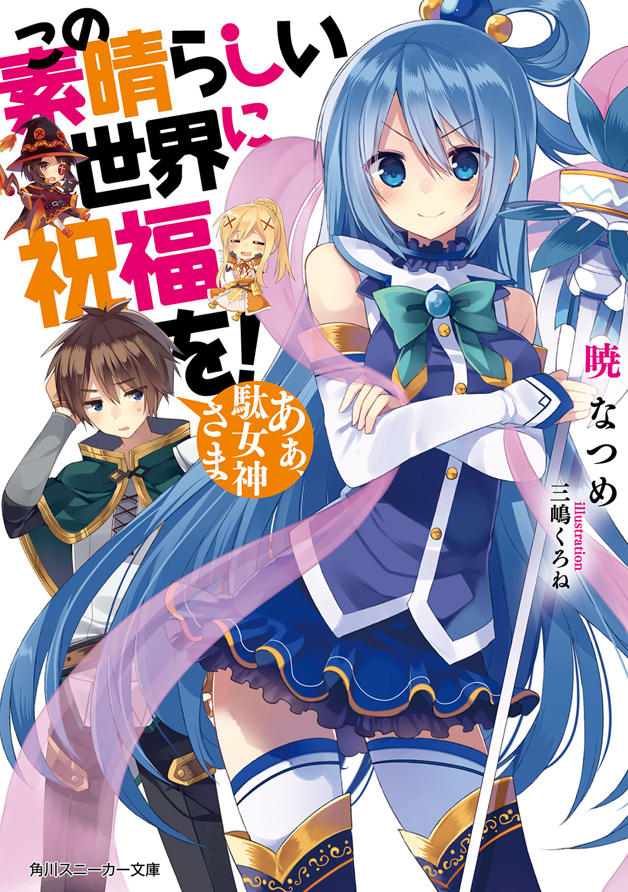
この素晴らしい世界に祝福を！
あぁ、駄女神さま

角川スニーカー文庫
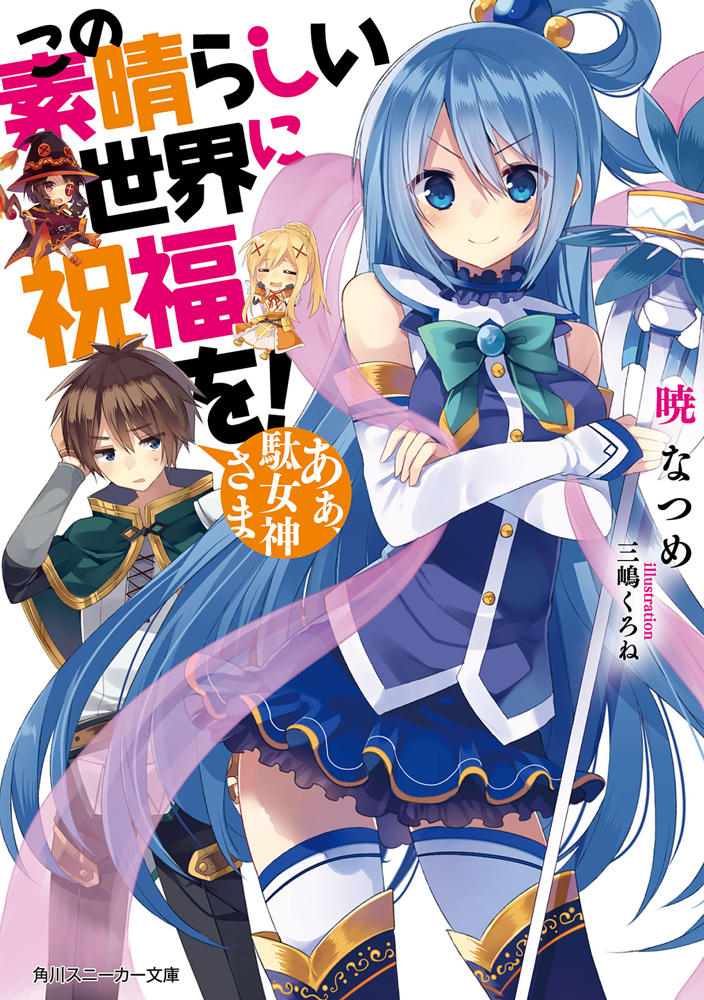
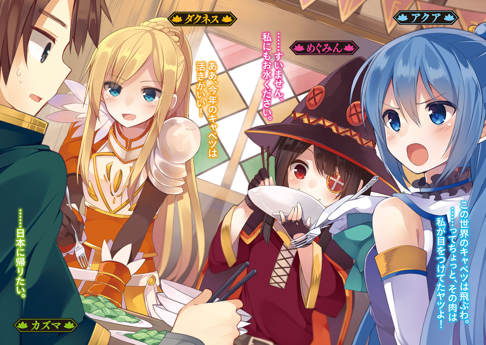
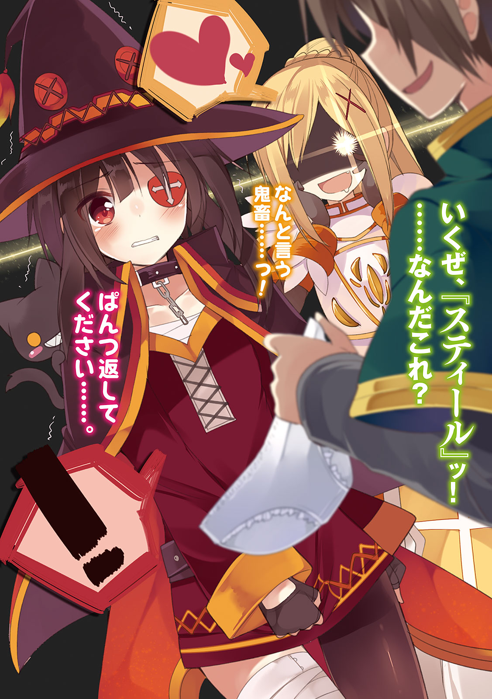
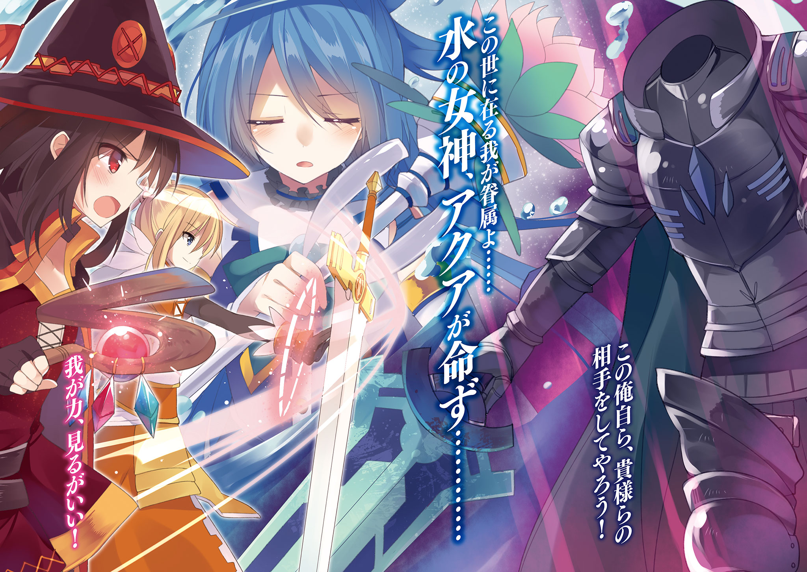
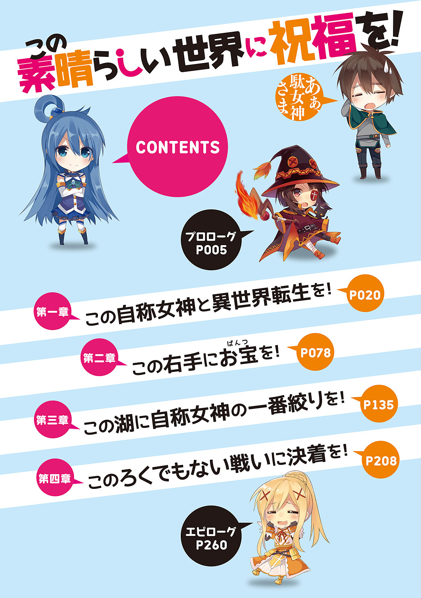
この素晴らしい世界に祝福を！
あぁ、駄女神さま
角川スニーカー文庫
本作品の全部または一部を無断で複製、転載、配信、送信したり、ホームページ上に転載することを禁止します。また、本作品の内容を無断で改変、改ざん等を行うことも禁止します。
本作品購入時にご承諾いただいた規約により、有償・無償にかかわらず本作品を第三者に譲渡することはできません。
本作品を示すサムネイルなどのイメージ画像は、再ダウンロード時に予告なく変更される場合があります。
本作品は縦書きでレイアウトされています。
また、ご覧になるリーディングシステムにより、表示の差が認められることがあります。
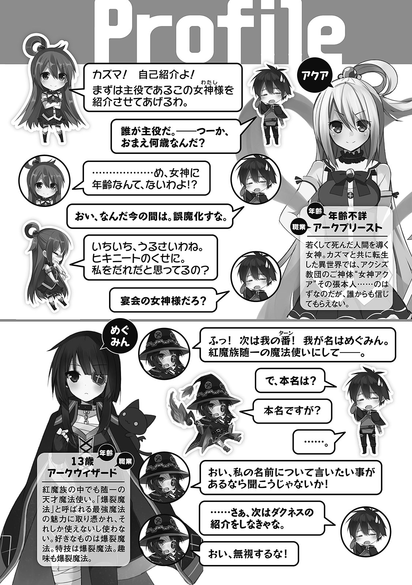
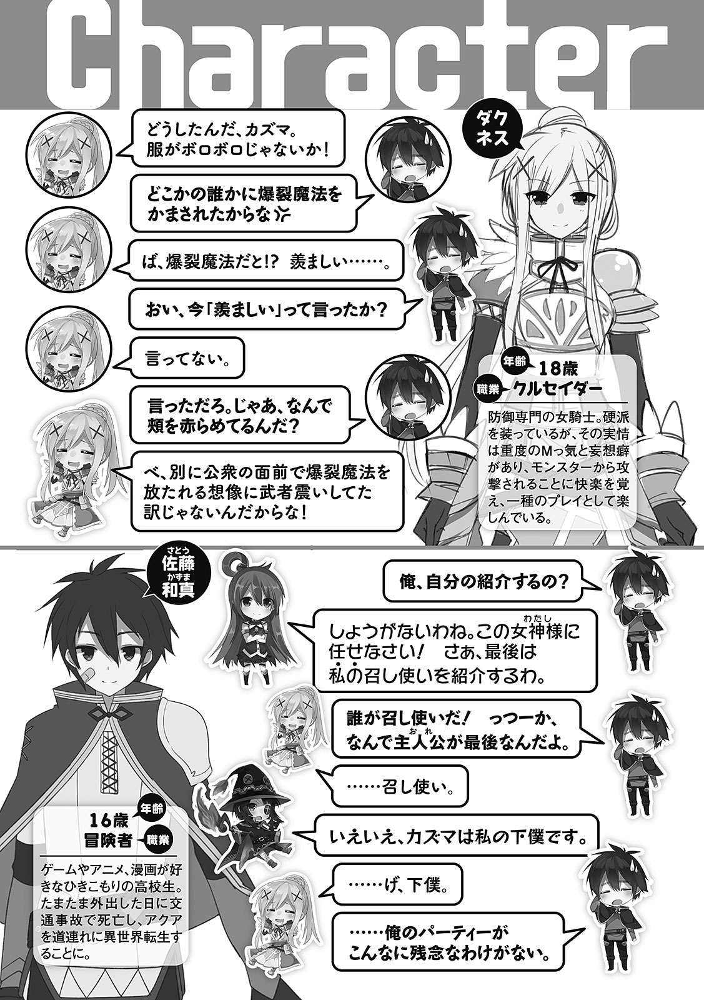
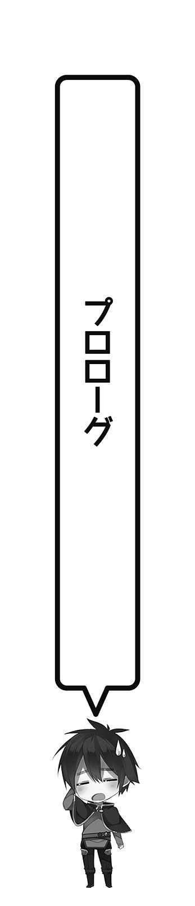
「佐藤和真さん、ようこそ死後の世界へ。あなたはつい先ほど、不幸にも亡くなりました。短い人生でしたが、あなたの生は終わってしまったのです」
真っ白な部屋の中、俺は唐突にそんな事を告げられた。
突然の事で何がなんだか分からない。
部屋の中には小さな事務机と椅子があり、そして、俺に人生の終了を告げてきた相手はその椅子に座っていた。
もし女神というものが存在するのなら、きっと目の前の相手の事を言うのだろう。
テレビで見るアイドルの可愛らしさとは全く異なる、人間離れした美貌。
淡く柔らかな印象を与える透き通った水色の長い髪。
年は俺と同じくらいだろうか。
出過ぎず、足りな過ぎずな完璧な躰は、淡い紫色の、俗に羽衣と呼ばれるゆったりとした服に包まれている。
その美少女は、髪と同色の、透き通った水色の瞳をパチパチさせ、状況が摑めず固まったままの俺をじっと見ていた。
……俺は、先ほどまでの記憶を思い出す。
※
……普段学校に行かず家に引き篭もっている俺だったが、今日は珍しく外出をした。
本日発売のとある人気ネットゲーム、その初回限定版を手に入れるため、珍しく早起きして行列に並んだのだ。
世間では俺みたいな奴の事を引き篭もりだのネトゲ廃人だのと呼んでいるらしいが。
無事にゲームを獲得し、後は家に帰ってゲーム三昧だと、上機嫌で帰宅しようとしていた、そんな時だった。
携帯をいじりながら俺の前を歩いていた女の子。
学生服からして、俺と同じ学校の生徒だろうか。
信号が青になったのを確認し、その子は、そのままロクに左右も見ずに横断歩道を渡って行く。
女の子の横に迫る大きな影。
それは、きっと高速で迫る大型トラックだったのだろう。
俺は、頭で考えるよりも先にその子を突き飛ばしていた。
そして…………。
……自分でも不思議なくらいに落ち着いた心で、目の前の美少女に静かに尋ねた。
「……一つだけ聞いても？」
俺の質問に美少女が頷く。
「どうぞ？」
「……あの女の子は。……俺が突き飛ばした女の子は、生きてますか？」
大切な事だった。
俺の人生で、最初にして最後の見せ場だったのだ。
命懸けで助けに入って、結局間に合わなかったのだとしたら悔し過ぎる。
「生きてますよ？ もっとも、足を骨折する大怪我を負いましたが」
良かった……。
俺の死は無駄じゃなかった訳だ。最後に、少しは良い事出来たかなあ……。
ほっとした様子の俺を見た美少女は、小首を傾げる。
「まあ、あなたが突き飛ばさなければ、あの子は怪我もしなかったんですけどね」
「…………は？」
この子、今なんて!?
「あのトラクターは、本来ならあの子の手前で止まったんです。あたり前ですよね。だってトラクターですもん。そんなにスピードだって出てないし。つまり、あなたはヒーロー気取りで余計な事したって訳です。……プークスクス！」
何だろう、初対面で何だろうこの子。
どうしよう、失礼だが凄く殴りたい。
……いや待て。そんな事より、今もっと大変な事を聞いた。
「……今なんて？ トラクター？ トラックじゃなくて？」
「ええ、トラクターですけど。あの女の子だって、大型トラックが迫って来れば流石に気づくし当然逃げますよ」
…………は？
「え、じゃあナニ？ 俺の死因はトラクターに耕されて死んだって事？」
「いいえ、ショック死ですけど。トラックに轢かれたと勘違いして、あなたショックで死んじゃったんですよ。私、長くこの仕事をやってるけれど、こんな珍しい死に方したのはあなたが初めてよ？」
…………。
「あなたはトラクターに轢かれそうになった恐怖で、失禁しながら気を失い、近くの病院に搬送。『なんだこいつ、なっさけねー（笑）』と医者や看護師に笑われながら、目を覚ます事無くそのまま心臓麻痺で……」
「やめろおおお！ 聞きたくない聞きたくない！ そんな情けない話は聞きたくない！」
その女の子は、耳を塞いでいる俺に近寄ってくると、にやにやと笑みを浮かべながら、わざわざ俺の耳元で、
「現在あなたの家族が病院に駆けつけましたけど、悲しむよりも先に、その死因に家族さえも思わず吹き出し……」
「止めて止めて！ なあ、ウソだろ!? そんな情けない死に方ってあんまりだろ！」
頭を抱えてしゃがみ込んだ俺を見下ろし、口元に手を当ててクスクス笑う女の子。
「……さて。それじゃあ私のストレス発散はこのくらいにしておいて。初めまして佐藤和真さん。私の名はアクア。日本において、若くして死んだ人間を導く女神よ。……さて。しょうもない理由で死んだ面白いあなたには、二つの選択肢があります」
……こいつ！
いやもう、話が進まないから我慢しとこう。
「一つは人間として生まれ変わり、新たな人生を歩むか。そしてもう一つは、天国的な所でお爺ちゃんみたいな暮らしをするか」
なにその身も蓋もない選択肢。
「いやその……。天国的な所って？ そもそも、お爺ちゃんみたいな暮らしって何？」
「天国ってのはね、あなた達人間が想像している様な素敵な所ではないの。死んだら食べ物は必要ないし、死んでるんだから、物は当然産まれない。作ろうにも材料も何もないし。がっかりさせて悪いけど、天国にはね、何にもないのよ。テレビもなければ漫画やゲームもない。そこにいるのは、すでに死んだ先人達。もちろん死んだんだから、えっちい事だってできないし、そもそも体がないんだからどうにもなんないわね。彼らと永遠に、意味もなく、ひなたぼっこでもしながら世間話するぐらいしかやる事ないわ」
何それ、ゲームも娯楽も何にもないとか、天国ってより地獄なんですけど。
しかし、赤子になってもう一度人生やり直す……か。
いや、それしか選択肢はないのだろうが。
そんな残念そうにしている俺を見て、女神は満面の笑みを浮かべた。
「うんうん、天国なんて退屈な所行きたくないわよね？ かといって、今更記憶を失って赤ちゃんからやり直すって言われても、今までの記憶が消える以上、それってあなたっていう存在が消えちゃう様なものなのよ。そこで！ ちょっといい話があるのよ」
なんだろう、物凄く胡散臭い。
アクアは、警戒する俺にニコニコしながら言った。
「あなた……。ゲームは好きでしょ？」
アクアが、得意気にいい話とやらの説明を始める。
その話を要約すると、こうだった。
ここではない世界、すなわち異世界に魔王がいる。
そして、魔王軍の侵攻のせいでその世界がピンチらしい。
その世界では、魔法があり、モンスターがいて。
言うなれば、有名ゲーム、ドリクエやモフモフのようなファンタジー世界があるらしい。
「その世界で死んだ人達ってさ、まあほら魔王軍に殺された訳じゃない？ だから、またあんな死に方するのはヤダって怖がっちゃって。死んだ人達のほとんどが、その世界での生まれ変わりを拒否しちゃうのよね。はっきり言って、このままじゃ赤ちゃんも生まれないしその世界が滅びちゃうのよ。で、それなら他の世界で死んじゃった人達を、そこに送り込んでしまうのはどうか？ って事になってね？」
何という移民政策。
「で、どうせ送るなら、若くして死んだ未練タラタラな人なんかを、肉体と記憶はそのままで送ってあげようって事になったの。それも、送ってすぐ死んじゃうんじゃ意味が無いから、何か一つだけ。向こうの世界に好きな物を持っていける権利をあげているの。強力な特殊能力だったり。とんでもない才能だったり。神器級の武器を希望した人もいたわね。……どう？ あなたは、異世界とはいえ人生をやり直せる。異世界の人にとっては、即戦力になる人がやってくる。ね？ 悪くないでしょ？」
なるほど、確かに悪くない話に思える。
と言うよりも、むしろテンション上がってくる。
ゲーム好きな自覚はあるが、まさか自分が、大好きなゲームの世界みたいな所に行けるとか。
と、その前に。
「えっと、聞きたいんですけど、向こうの言葉ってどうなるんです？ 俺、異世界語とか喋れるの？」
「その辺は問題ないわ。私達神々の親切サポートによって、異世界に行く際にあなたの脳に負荷を掛けて、一瞬で習得できるわ。もちろん文字だって読めるわよ？ 副作用として、運が悪いとパーになるかもだけれど。……だから、後は凄い能力か装備を選ぶだけね」
「今、重大な事が聞こえたんだけど。運が悪いとパーになるって言ったか？」
「言ってない」
「言ったろ」
先ほどまでの緊張感もなく、相手は女神だというのに、俺は既にタメ口だった。
……しかし、これは確かに魅力的な提案だ。
もしかしたらパーになるかもという恐怖はあるが、自慢ではないが運の強さに関してだけは、子供の頃から自信がある。
と、俺の目の前にアクアがカタログの様な物を差し出した。
「選びなさい。たった一つだけ。あなたに、何者にも負けない力を授けてあげましょう。例えばそれは、強力な特殊能力。それは、伝説級の武器。さあ、どんなものでも一つだけ。異世界へ持って行く権利をあげましょう」
アクアの言葉に、俺はそのカタログを受け取ると、それをパラパラとめくってみる。
……そこには、《怪力》《超魔力》《聖剣アロンダイト》《魔剣ムラマサ》……その他諸々、色々な名前が記されていた。
なるほど、この中から持って行く能力か装備を選べという事か。
参ったな、これだけあると目移りする。
と言うか、ゲーマーの勘だが、これらはどれもこれもが反則級の能力や装備の予感だ。
悩む悩む……。魔法がある異世界へ行くなら、是非とも魔法を使ってみたい。
となると、やはりここは魔法を使う前提の能力を……。
「ねー、早くしてー？ どうせ何選んでも一緒よ。引き篭もりのゲームオタクに期待はしてないから、なんか適当に選んでサクッと旅立っちゃって。何でもいいから、はやくしてーはやくしてー」
「オ、オタクじゃないから……っ！ 出掛けてて死んだ訳だし、引き篭もりでも無いから……っ！」
小さな震え声で言い返すが、アクアは自分の髪の先の枝毛をいじりながら、俺には全く興味無さそうに言った。
「そんな事どうでもいいから早くしてー。この後、他の死者の案内が、まだたくさん待ってるんだからね？」
言いながら、アクアは椅子に腰掛けこちらを見もせずに、スナック菓子をぽりぽりと……。
……こいつ、初対面のくせに人様の死因を思い切り笑ったり、さっきからちょっとばかり可愛いからって調子に乗りやがって。
アクアの、面倒臭そうな投げ槍なその態度に、流石に俺もカチンときた。
早く決めろってか。
じゃあ決めてやるよ。
異世界に持っていける〝もの〟だろ？
「…………じゃあ、あんた」
俺はアクアを指差した。
アクアは、こちらをキョトンとした顔で見て、ぽりぽりとスナックをかじっている。
「ん。それじゃ、この魔法陣の中央から出ない様に…………」
そこまで言って、アクアはハタと動きを止めた。
「……今何て言ったの？」
と、その時だった。
「承りました。では、今後のアクア様のお仕事はこのわたくしが引き継ぎますので」
何もない所から、白く輝く光と共に、突然羽の生えた一人の女性が現れた。
……一言で言えば、天使みたいな。
「……えっ」
呆然と呟くアクアの足元と、そして俺の足の下に、青く光る魔法陣が現れた。
おお、なんだこれ。
本当にこのまま異世界行き？
「ちょ、え、なにこれ。え、え、噓でしょ？ いやいやいやいや、ちょっと、あの、おかしいから！ 女神を連れてくなんて反則だから！ 無効でしょ!? こんなの無効よね！ 待って！ 待って!?」
涙目でオロオロしながら、滅茶苦茶に慌てふためくアクア。
そのアクアに。
「行ってらっしゃいませアクア様。後の事はお任せを。無事魔王を倒された暁には、こちらに帰還するための迎えの者を送ります。それまでは、あなた様のお仕事の引き継ぎはこのわたくしにお任せを」
「待って！ ねえ待って！ 私、女神なんだから癒やす力はあっても戦う力なんて無いんですけど！ 魔王討伐とか無理なんですけど!!」
突然現れたその天使は、泣きながらすがるアクアを尻目に、俺に柔らかな笑みを浮かべ。
「佐藤和真さん。あなたをこれから、異世界へと送ります。魔王討伐のための勇者候補の一人として。魔王を倒した暁には、神々からの贈り物を授けましょう」
「……贈り物？」
オウム返しに尋ねる俺に。
その天使は、穏やかに微笑んだ。
「そう。世界を救った偉業に見合った贈り物。……たとえどんな願いでも。たった一つだけ叶えて差し上げましょう」
「おおっ！」
それはつまり、異世界とやらに飽きたら日本に帰りたいって願いも有りなのだろうか。
例えば、異世界での暮らしに飽きたら、日本に帰って、金持ちになって美少女に囲まれながらゲーム三昧の人生を！ とかそんな退廃的な願いも有りなのだろうか！
「ねえ待って！ そういうカッコイイ事を告げるのって、私の仕事なんですけど！」
いきなり現れた天使に仕事を奪われ、泣いてすがるアクア。
アクアのその姿を見られただけで、俺はすでに満足していた。
俺はそのままアクアを指差し。
「散々バカにしてた男に、一緒に連れてかれるってどんな気持ちだ？ おい、俺が持っていく〝者〟に指定されたんだ、女神ならその神パワーとかで、精々俺を楽させてくれよ！」
「いやあー！ こんな男と異世界行きだなんて、いやああああああああ！」
「さあ、勇者よ！ 願わくば、数多の勇者候補達の中から、あなたが魔王を打ち倒す事を祈っています。……さあ、旅立ちなさい！」
「わああああああーっ！ 私のセリフー！」
厳かに天使が告げる中。
俺は、泣き叫ぶアクアと共に明るい光に包まれた……！
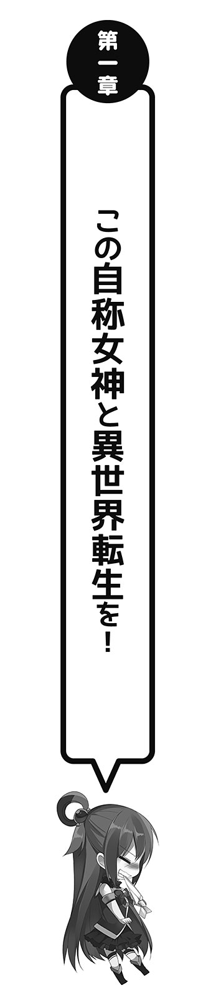
１
石造りの街中を、馬車が音を立てながら進んでいく。
「……異世界だ。……おいおい、本気で異世界だ。え、本当に？ 本当に、俺ってこれからこの世界で魔法とか使ってみたり、冒険とかしちゃったりすんの？」
俺は目の前に広がる光景に、興奮で震えながらも呟いた。
そこは、レンガの家々が立ち並ぶ、中世ヨーロッパのような街並み。
車やバイクは走っておらず、電柱も無ければ電波塔も無い。
「あ……ああ……ああああ…………」
俺はキョロキョロと街中を見渡して、行き交う人々を観察した。
「獣耳だ！ 獣耳がいる！ エルフ耳！ あれエルフか!? 美形だし、エルフだよな！ さようなら引き篭もり生活！ こんにちは異世界！ この世界なら、俺、ちゃんと外に出て働くよ！」
「ああああ…………ああああああ…………あああああああああああ！」
俺は隣で頭を抱えて叫び声を上げているアクアの方を振り向いた。
「おいうるさいぞ。俺まで頭のおかしい女の仲間だって思われたらどうするんだよ。それより、こういった時には俺に渡す物とかあるだろ？ ほれ、見ろよ今の俺の格好。ジャージだよ？ せっかくのファンタジー世界にジャージ一丁ですわ。ここはゲームとかで恒例の、必要最低限の初期装備とかを……」
「ああああああああああああああああああああああああああああああああーっ!!」
叫ぶと同時、女神は泣きながら俺に摑みかかってきた。
「うおっ！ な、なんだよ、やめろ！ 分かったよ、初期装備は自分でなんとかするよ。というか、悪かったって！ そんなに嫌ならもういいよ、帰ってもらって。後は自分で何とかしてみるから」
涙目で俺の首を絞めようとするアクアの手を振り払うと、面倒臭そうにシッシと手を払う。
すると、アクアは手を戦慄かせた。
「あんた何言ってんの!? 帰れないから困ってるんですけど！ どうすんの!? ねえ、どうしよう！ 私これからどうしたらいい!?」
アクアは泣きながら取り乱し、頭を抱えてバタバタしていた。
腰まで届く長い髪を振り乱し、なんというかもう、黙っていれば凄い美少女なのにこれではどう見ても痛い女だ。いや、正直見てられない。
「おい女神、落ち着け。こういう時の定番はまず酒場だ。酒場に行って情報収集から始めるもんだ。それがロールプレイングゲームでの定番だ」
「なっ……！ ゲームオタクの引き篭もりだったはずなのに、なぜこんなに頼もしいの？ あ、カズマ、私の名前はアクアよ。女神様って呼んでくれてもいいけれど、できればアクアって呼んで。でないと人だかりができて魔王討伐の冒険どころじゃなくなっちゃうわ。住む世界は違っても、一応私、この世界で崇められてる神様の一人なの」
アクアはそう言って、自信満々な俺の後ろをバタバタとついて来る。
さて、こういった時には魔王に対抗するための冒険者組合だとか、モンスター討伐のための冒険者ギルドとかがあるはずだ。
というか、よく考えたらアクアは女神なんだし、こいつに色々聞けばいいんじゃないか。
「アクア、とりあえず冒険者ギルドの場所だ。どこに行けばいいんだ？」
俺がアクアに尋ねると、アクアはキョトンとした表情で。
「……？ 私にそんな事聞かれても知らないわよ。私はこの世界の一般常識は知っていても、街の事なんかは分からないし。というか、ここは大量にある異世界の中の一つの星、更にその中の小さな街の一つよ？ そんなものいちいち知る訳ないでしょ？」
こいつ使えねえ。
しかたないので、俺は通りすがりのおばさんに尋ねる。
男性に聞くのはガラの悪い相手だと厄介だし、若い女性だと俺のチキンハートには難易度が高い。
「すいませーん、ちょっといいですか？ 冒険者ギルド的なものを探してるんですが……」
「ギルド？ あら、この街のギルドを知らないなんて、ひょっとして他所から来た人かしら？」
おばさんの言葉に、やはりギルドがあったかと安心する。
「いやあ、ちょっと遠くから旅してきたもので。ついさっき、この街に着いたばかりなんですよ」
「あらあら……。この街に来るって事は、冒険者を目指している方かしら。駆け出し冒険者の街、アクセルへようこそ。ここの通りを真っ直ぐ行って右に曲がれば、看板が見えてくるわ」
「真っ直ぐ行って右ですね。どうも、ありがとうございました！ ……ほら、行くぞ」
駆け出し冒険者の街か。
なるほど。死んだ人間を異世界へ送る際のスタート地点としては、理想的な場所だ。
おばさんに礼を言い、教わった道を歩いて行くと、後ろをちょろちょろついて来るアクアが、ちょっと尊敬の眼差しを交えながら感嘆の声を上げた。
「ねえ、あの咄嗟の言い訳とか、なんでそんなに手際がいいの？ こんなにできる男な感じなのに、なんで彼女も友人もいない引き篭もりのオタクだったの？ なんで毎日閉じ篭もってヒキニートなんかやってたの？」
「彼女や友人がいないのは別に悪い事じゃない。友人の数や恋人の有る無しで人の価値は計れない。あとヒキニートは止めろクソビッチ。引き篭もりとニートを足すな、俺はまだ十六歳だ。世間で言えばまだニート呼ばわりされる年じゃない。……あそこか」
クソビッチ呼ばわりされたアクアが首を絞めてくるが、それを無視し、冒険者ギルドに入っていく。
──冒険者ギルド──
ゲームに必ず出てくる、冒険者に仕事を斡旋したり、もしくは支援したりする組織。
つまり異世界のハロワ的な存在だ。
そこはかなり大きな建物で、中からは食べ物の匂いが漂っていた。
中にはきっと、荒くれがいるのだろう。
新参者を見て、いきなり絡んでくるかも知れない。
そんな覚悟をしながら中に入ると……。
「あ、いらっしゃいませー。お仕事案内なら奥のカウンターへ、お食事なら空いてるお席へどうぞー！」
短髪赤毛のウェイトレスのお姉さんが、愛想よく出迎えた。
どことなく薄暗い店内は、酒場が併設されている様だ。
そこかしこに鎧を着た連中がたむろしているが、特にガラの悪そうな人は見当たらない。
だが、やはり新参者は珍しいのかやけに注目を集めている。
……と、俺はその原因に気がついた。
「ねえねえ、いやに見られてるんですけど。これってアレよ、きっと私から滲み出る神オーラで、女神だってバレてるんじゃないかしら」
このすっとぼけた事を言う女神の容姿。
黙っていれば美少女なこいつが目を惹いているのだろう。
とりあえず視線は無視して、当初の目的を遂行しよう。
「……いいかアクア、登録すれば駆け出し冒険者が生活できる様に色々チュートリアルしてくれるのが冒険者ギルドだ。冒険支度金を貸してくれたり、駆け出しでも食っていける簡単なお仕事を紹介してくれ、オススメの宿も教えてくれるはず。ゲーム開始時は大概そんなもんだ。本来なら、この世界で最低限生活できる物を用意してくれるってお前の仕事だと思うんだけど……。まあいい。今日は、ギルドへの登録と装備を揃えるための軍資金入手、そして泊まる所の確保まで進める」
「知らないわよそんなもの。私の仕事は、死んだ人をこの世界に送る事だもの。でも、分かったわ。ゲームは知らないけど、こういった世界での常識やお約束ってヤツね。私も冒険者として登録すればいいのね？」
「そういう事だ。よし、行こう」
俺はアクアを引き連れ、真っ直ぐカウンターへと向かう。
受付は四人。
その内二人は女性職員。
俺はその女性職員の内、より美人な方の受付の列に行く。
「……ねえ、他の三つの受付が空いてるのに、何でわざわざここに来たの？ 他なら待たなくてもいいのに。……あ、受付が一番美人だからね？ 全く、ちょっと頼りがいがあると感心した矢先にこれですか？」
俺の後にくっ付いてきた何も分かっていないアクアに、俺は小さな声で教えてやった。
「ギルドの受付の人と仲良くなっておくのは基本だ。そして、美人な受付のお姉さんとは色々なフラグが立つ。今後、あっと驚く隠し展開とかが待ってる訳だ。お姉さんが、元は凄腕冒険者だった、とかな」
「……そういえば、漫画とかでもそういった話を聞いた事があるわね。ごめんね、素直にここに並んでおくね」
他が空いてるのに、わざわざ行列に並ぶ俺達を、他の受付の人がチラチラ見ているがここは無視だ。
やがて俺達の番がやって来る。
「はい、今日はどうされましたか？」
受付の女の人はおっとりした感じの美人だ。
ウェーブのかかった髪と巨乳が大人の女性の雰囲気をかもしだしていた。
「えっと、冒険者になりたいんですが、田舎から来たばかりで何も分からなくて……」
田舎から来たとか遠い外国から来たとか言っておけば、受付が勝手に色々教えてくれる。
「そうですか。えっと、では登録手数料が掛かりますが大丈夫ですか？」
そう、それがチュートリアルの基本だ。
後は受付の人の言う事に従っていけば……。
…………登録手数料？
「……おいアクア、金って持ってる？」
「あんな状況でいきなり連れてこられて、持ってる訳無いでしょ？」
……なんてこった、こういう時って、最初のお金は貸してくれたり後払いにできないのか？
一旦受付から離れ、アクアと作戦会議をする。
「……おい、どうしようか。いきなりつまずいた。ゲームだと、普通は最低限の装備が手に入ったり、生活費だってどうにか手に入るものなんだけど」
「いきなり頼りがいが無くなったけど、まあしょうがないわね。引き篭もりなんだし。いいわ、次は私の番ね、まあちょっと見てなさいな。女神の本気を見せてあげるわ」
神官衣とでも言うのだろうか。野暮ったい、ダラッとした服を着た、プリーストが座っている。
アクアは、自信たっぷりにその男に近づいて行き、
「そこのプリーストよ、宗派を言いなさい！ 私はアクア。そう、アクシズ教団の崇めるご神体、女神アクアよ！ 汝、もし私の信者ならば……！ ……お金を貸してくれると助かります」
上からなのか下からなのか、よく分からない態度で金をせびった。
「…………エリス教徒なんですが」
「あ、そうでしたか、すいません……」
よく分からないが、違う宗派だったらしい。
アクアが寂しそうにトボトボと帰ろうとすると、そのプリーストが呼び止めた。
「あー……。お嬢さん、アクシズ教徒なのか。お伽話になるが、女神アクアと女神エリスは先輩後輩の間柄らしい。これも何かの縁だ、さっきから見てたが、手数料が無いんだろ？ それぐらいなら持って行きな。エリス様の御加護ってやつだ。でも、いくら熱心な信者でも女神を名乗っちゃいけないよ」
「あ……。はい、すいません……。ありがとうございます……」
お金を貰い、死んだ魚のような目をしたアクアが帰ってきた。
「あはは……女神だって信じてもらえなかったんですけど。……ついでに言うと、エリスは私の後輩の女神なんですけど。……私、後輩女神の信者の人に、同情されてお金貰っちゃったんですけど……」
「ま、まあ結果オーライって事でいいじゃないか。ほら、女神って信じられたら、それはそれで困った事になるだろうし！」
何か大切な物を失った様な顔で帰ってきたアクアを、俺は適当に励ますと。
「ええっと……。登録料持って来ました」
「は……はあ……。登録料はお一人千エリスになります……」
アクアがプリーストから貰った金が三千エリス。
アクアの話では、一エリス一円換算らしいので、三千円相当を貰ってきた訳だ。
俺達の騒ぎに全く干渉しないどころか、俺やアクアとあまり目を合わせたがらない受付のお姉さん。
どうやら、俺はスタート地点でこのお姉さんとのフラグをへし折ってしまった様だ。
「では。冒険者になりたいと仰るのですから、お二人ともある程度理解しているとは思いますが、改めて簡単な説明を。……まず、冒険者とは街の外に生息するモンスター……。人に害を与えるモノの討伐を請け負う人の事です。とはいえ、基本は何でも屋みたいなものです。……冒険者とはそれらの仕事を生業にしている人達の総称。そして、冒険者には、各職業というものがございます」
きたきた、そうだよこれだよ。
冒険者といえばこれだ。職業、ジョブ、クラスでも、呼び名は何でもいいけれど、ここでの戦闘スタイルを選ぶ訳だ。
戦士だのといった地味そうなヤツより、魔法使いみたいな派手なのがいいよな。
受付のお姉さんが、俺とアクアの前にそれぞれカードを差し出した。
免許証ぐらいの大きさのそれは、見た感じ身分証みたいに見える。
「こちらに、レベルという項目がありますね？ ご存知の通り、この世のあらゆるモノは、魂を体の内に秘めています。どの様な存在も、生き物を食べたり、もしくは殺したり。他の何かの生命活動にとどめを刺す事で、その存在の魂の記憶の一部を吸収できます。通称、経験値、と呼ばれるものですね。それらは普通、目で見る事などはできません。しかし……」
お姉さんが、カードの一部を指差した。
「このカードを持っていると、冒険者が吸収した経験値が表示されます。それに応じて、レベルというものも同じく表示されます。これが冒険者の強さの目安になり、どれだけの討伐を行ったかもここに記録されます。経験値を貯めていくと、あらゆる生物はある日突然、急激に成長します。俗に、レベルアップだの壁を越えるだのと呼ばれていますが……。まあ要約すると、このレベルが上がると新スキルを覚えるためのポイントなど、様々な特典が与えられるので、是非頑張ってレベル上げをして下さいね」
その言葉に、俺はアクアの言っていた事を思い出す。
「あなた、ゲームは好きでしょ？」と。
なるほどな。今までの説明を聞く限り、まんまゲームだ。
「まずはお二人とも、こちらの書類に身長、体重、年齢、身体的特徴等の記入を願います」
受付のお姉さんが差し出した書類に、俺は自分の特徴を書いていく。
身長１６５センチ、体重55キロ。年は16、茶髪に茶色目……。
「はい、結構です。えっと、ではお二人とも、こちらのカードに触れてください。それであなた方のステータスが分かりますので、その数値に応じてなりたい職業を選んでくださいね。経験を積む事により、選んだ職業によって様々な専用スキルを習得できる様になりますので、その辺りも踏まえて職業を選んでください」
おっと、早速きたな。
ここで俺の凄まじい潜在能力が発揮されて、ギルド内が騒ぎになったりする訳だ。
俺は内心緊張しながら、淡い期待を込めてカードに触れた。
「……はい、ありがとうございます。サトウカズマさん、ですね。ええと……。筋力、生命力、魔力に器用度、敏捷性……、どれも普通ですね。知力がそこそこ高い以外は……、あれ？ 幸運が非常に高いですね。まあ、冒険者に幸運ってあんまり必要ない数値なんですが……。でもどうしましょう、これだと選択できる職業は基本職である《冒険者》しかないですよ？ これだけの幸運があるなら、冒険者稼業はやめて、商売人とかになる事をオススメしますが……。よろしいのですか？」
おい、いきなり冒険者人生否定されたぞ、どうなってんの。
隣でニマニマと笑みを浮かべているアクアを引っ叩きたい。
俺が弱いと、お前だって困るんだぞ。
「え、ええと、その、冒険者でお願いします……」
お姉さんが心配そうな顔で。
「ま、まあ、レベルを上げてステータスが上昇すれば転職が可能ですし！ それに、この冒険者という職業は、冒険者という総称が指す様に、あらゆる職業をまとめたと言いますか……。ええ、初期の職業だからって悪い事は無いですよ？ なにせ、全ての職業のスキルを習得し、使う事ができますから！」
「その代わり、スキル習得には大量のポイントが必要になるし、職業の補正も無いから同じスキル使っても本職には及ばないんだけどね。器用貧乏みたいな」
フォローを入れるお姉さんの言葉に二秒で水を差すアクア。
こいつ、本当にどっかに捨ててこようか。
どうやら、俺は基本職というか、初期クラスというか。
ともかく、最弱職に就いたらしい。
それでも、これで俺はゲームの世界に出てくる様な冒険者だ。
ちょっと感慨深く、俺の名前と共に、職業《冒険者》と記されたカードを手に取ると……。
「はっ!? はああああっ!? 何です、この数値!? 知力が平均より低いのと、幸運が最低レベルな事以外は、残り全てのステータスが大幅に平均値を超えてますよ!? 特に魔力が尋常じゃないんですが、あなた何者なんですか……っ!?」
アクアの触ったカードを見たお姉さんが、大声を上げていた。
施設内が途端にざわめく。
……あれ、そういうのって普通は俺のイベントじゃね？
「え、そ、そう？ なになに、私が凄いって事？ いやー、まあ私くらいになればそりゃあね？」
さすが腐っても一応は女神ってことか。
だが、調子に乗って照れているアクアが憎たらしい。
「す、凄いなんてものじゃないですよ!? 高い知力を必要とされる魔法使い職は無理ですが……。それ以外ならなんだってなれますよ？ 最高の防御力を誇る聖騎士《クルセイダー》。最高の攻撃力を誇る剣士《ソードマスター》。僧侶の上級職である《アークプリースト》など……、最初からほとんどの上級職に……！」
お姉さんの質問にアクアはちょっと悩み。
「そうね、女神って職業が無いのが残念だけれど……。私の場合アークプリーストかしら」
「アークプリーストですね！ あらゆる回復魔法と支援魔法を使いこなし、前衛に出ても問題ない強さを誇る万能職ですよ！ では、アークプリースト……っと。冒険者ギルドへようこそアクア様。スタッフ一同、今後の活躍を期待しています！」
お姉さんはそう言って、にこやかな笑みを浮かべた。
……あれ、何だコレ。
こういったイベントは俺の方に起こるんじゃあ……。
まあ、何にせよ。
こうして、異世界での冒険者生活が始まった。
２
「おーし、ご苦労さーん！ 今日はこれで上がっていいぞ！ ほら、今日の日当だ」
「どうもです。お疲れっしたー！」
「したー！」
親方の仕事の終了の声で、俺とアクアは日当を受け取ると挨拶と共に頭を下げる。
「じゃあ、皆さんお先でーす！」
「でーす！」
「おーう、お疲れ！ また明日も頼むな！」
俺が先輩達に挨拶すると、アクアも俺に続いて挨拶する。
先輩の声を聞きながら、俺とアクアは現場を後にした。
ああ、今日も一日働いた。
俺が引き篭もりだったなんて自分でも信じられない話だ。
俺とアクアはその日の日当を握り締め、街の大衆浴場に向かう。
大衆浴場は日本の銭湯とほぼ変わりは無い。
日本に比べれば、一般の人の平均賃金に換算すると入浴料は割高だが、仕事終わりの風呂はちょっと高くてもやめられない。
「あー……。生き返るわー…………」
熱い湯船に肩まで浸かり、仕事の疲れをゆっくり癒やす。
中世っぽい所だし、異世界では風呂なんて贅沢品だと思っていたが、俺の勝手な思い込みだった様だ。
ありがてえありがてえ……！
風呂から上がると、アクアが浴場の入り口で待っていてくれた。
女より長風呂なのもどうかと思うが、こればかりは風呂好き日本人の性だ。
「今日は何食べる？ 私、スモークリザードのハンバーグがいい。あとキンキンに冷えたクリムゾンネロイド！」
「俺も肉がいいな。それじゃ、宿屋のおっちゃんにスモークリザードのハンバーグ定食二人前頼むか」
「異議なし！」
アクアと二人、定食を平らげて満足すると、特にやる事もないし馬小屋に。
馬糞が付いていない藁を選んで寝床を作ると、早々と横になった。
俺の隣には当たり前の様にアクアが寝転がる。
「じゃあ、お休みー」
「おう、お休み。……ふう。今日もよく働いたなあ……」
そして俺は、心地よい疲れと共に、深い眠りへと…………。
「いや、待ってくれ」
俺はムクリと身を起こした。
「どうしたの？ 寝る前のトイレ行き忘れた？ 暗いし付いて行ってあげようか？」
「いらんわ。いやそうじゃなくてな。俺達、何で当たり前の様に普通に労働者やってんだって思ってさ」
そう。
俺とアクアはここ二週間、ずっと街の外壁の拡張工事の仕事をしていた。
つまりは土木工事の作業員。
俺がこの世界に求めていた、冒険者稼業なんて物とは程遠い。
いや、というかなんでアクアは何の疑問もなくこの生活に馴染んでんだ。
お前は一応女神だろ。
「そりゃ、仕事しなきゃご飯も食べられないでしょ？ 工事の仕事は嫌なの？ 全く、これだからヒキニートは。一応、商店街の売り子とかの仕事もあるけど？」
「そうじゃねえ！ そうじゃなくて、俺が求めてるのはこう、モンスターとの手に汗握る戦闘！ みたいな！ そもそも、この世界は魔王に攻められててピンチなんじゃなかったのかよ!? 平和そのものじゃねーか、魔王の魔の字もないぞ、コラッ！」
熱くなり、つい大声になる俺達の声に周りから罵声が飛んだ。
「おい、うるせーぞ！ 静かに寝ろ！」
「あっ、すいません！」
駆け出しの冒険者は貧乏だ。
宿に部屋をとって毎日寝泊まりとか、普通はありえない。
一般的には、他の冒険者達とお金を出し合って大部屋で雑魚寝とか。
今の俺達の様に、宿の馬小屋を借りて藁の上で寝るとからしい。
うん、想像してた異世界暮らし、期待していた冒険者生活と全然違う。
宿暮らしって事は、日本で言えば毎日ホテルで寝泊まりする様なものだ。
収入が不安定な冒険者には到底無理な話だ。
……そう、収入が不安定なのだ。
ゲームに出てくる様な、簡単な薬草採取だの、街の近くでのモンスター討伐だのといった《クエスト》なんて一つも無かった。
モンスターを適当に倒せばお金が湧いて出る訳ではないのだ。
街の近くの森に住んでいたモンスターは、とっくの昔に軒並み駆除されたらしい。
モンスターもいない安全な森の中、採取クエストなんてものをわざわざお金を出してまで人に頼む者もほとんどいない。
そりゃそうだ。
街の外には子供だって普通に出るだろう。
門番もいるが、蟻の子一匹出入りさせないなんて警備をずっと続けるより、それ程巨大な森でないならとっとと人に害をなすモンスターを駆除すればいい話だ。
言われてみれば当たり前だが、そんな現実的な事はあまり知りたくなかった。
素人に毛が生えた程度の冒険者でも簡単に見分けが付く様な薬草だのを、森に入って半日ほど採取しただけで、その日のホテル代と三食分の金が稼げる。
現実には、そんなおいしい仕事がある訳もないってか。
考えてみれば、地球でも裕福な国である日本ですら、ホテル暮らしの日雇い労働者なんていないだろう。
最低賃金？ 労働基準法？ なにそれおいしいの？
ここは、そんな異世界だ。
「わ、私に言わないでよそんな事。ここは魔王の城から一番遠い街なのよ？ こんな辺境の、しかも駆け出し冒険者しかいない街なんて、わざわざ襲いに来ないわよ。……つまりカズマは、冒険者らしく冒険したいって事？ まだロクな装備が調ってもいないのに？」
アクアの真っ当な意見にぐうの音も出ない。
そう、俺とアクアは、必要最低限の冒険用の道具や装備すら持っていない。まずはそれらを手に入れるためとばかりに、安全な土木作業のバイトに勤しんでいたのだが。
「そろそろ土木作業ばっかやるのも飽きたんだよ……。俺、労働者やりに異世界に来たんじゃないぞ。パソコンもゲームも無い世界だけど、俺は冒険するためにここに来たんだ。魔王を討伐するためにここに送られてきたんだろ、俺は？」
俺の言葉に、なんの話だ？ といった顔でしばし考え込んでいたアクアは、
「おおっ！ そういえばそんな話もあったわね。そうよ、労働の喜びに夢中になって忘れてたけど、カズマに魔王を倒して貰わないと、帰れないじゃないの」
すっとぼけた返事に、そういやこいつは受付のお姉さんに、知力のステータスが人より低いって言われてたなと納得する。
「いいわ、討伐行きましょう討伐！ 大丈夫、この私がいるからにはサクッと終わるわよ！ 期待して頂戴！」
「な、なんかもの凄く不安だが……。そうだよな、お前女神だもんな。頼りにしてるぞ！ おし、それじゃ、貯まった金で最低限の武具を揃えて、明日はレベル上げだ！」
「任せて頂戴！」
「うるせーってんだろこらっ！ しばかれてーのか！」
「「すいません！」」
他の冒険者に謝りながらも、俺は心を躍らせて眠りに就いた。
３
雲一つない、晴れやかな青空の下。
「ああああああああ！ 助けてくれ！ アクア、助けてくれえええええ！」
「プークスクス！ やばい、超うけるんですけど！ カズマったら、顔真っ赤で涙目で、超必死なんですけど！」
よし、こいつは後で埋めて帰ろう。
俺はそう決心し、巨大なカエル型モンスター、ジャイアントトードに追いかけられながら、助けを求めて逃げ回っていた。
街の外に広がる広大な平原地帯。
ギルドで早速クエストを請けた俺達は、ここに来たのだが……。
必要最低限の武器として、俺はショートソードを。
アクアはと言えば、女神が必死に武器を振るうとか絵にならないとバカな事を口走り、現在無装備でのん気に、カエルに追われる俺を眺めていた。
こいつらは、たかがカエルと侮れない。
その体軀は牛を超える巨大さで、繁殖の時期になると、産卵のための体力を付けるため、エサの多い人里にまで現れ、農家の飼っている山羊を丸吞みにするらしい。
山羊を丸吞みと言うのだから、俺やアクアもひとたまりもない。
実際に、毎年このカエルの繁殖期には人里の子供や農家の人が行方不明になるそうだ。
見た目はただの巨大なカエル。
だが、街の近隣で駆除された、弱っちいモンスターとは比較にならない程に危険視されているモンスター。
ちなみに、その肉は多少の硬さはあるが、淡白でサッパリしていて食材として大変喜ばれるらしい。
分厚い脂肪が、打撃系の攻撃を防ぐとの事。
金属を嫌うため、装備さえしっかりと調っていれば捕食される事もなく、そこそこの冒険者にとっては余裕の相手となるらしい。
なので、腕のいい冒険者は、こいつらを好んで狩るというのだが……。
「アクアー！ アクアー!! お前いつまでも笑ってないで助けろよおおおおおおお！」
「まずは、この私をさん付けするところから始めてみましょうか」
「アクア様ー！」
あいつは後で、首から下を地面に埋めて、カエルに狙われる恐怖を味わわせてやろう。
俺は半泣きになりながら、俺の後ろを飛び跳ねて追いかけてくるカエルを見る。
だがカエルは、すでに逃げ回る俺とは違う方向を向いていた。
その視線の先には…………。
「しょうがないわねー！ いいわ、助けてあげるわよヒキニート！ その代わり、明日からはこの私を崇めなさい！ 街に帰ったらアクシズ教に入信し、一日三回祈りを捧げる事！ ご飯の際には、私が頂戴って言ったおかずを抵抗せずに素直に寄越す事！ そしてひゅぐっ!?」
ふんぞり返りながら何かを言っていたアクアが姿を消した。
ふと見ると、俺を追いかけていたカエルの動きが止まっている。
そのカエルの口の端からは、ぷらんと白い物が生えている。
その白いのは……。
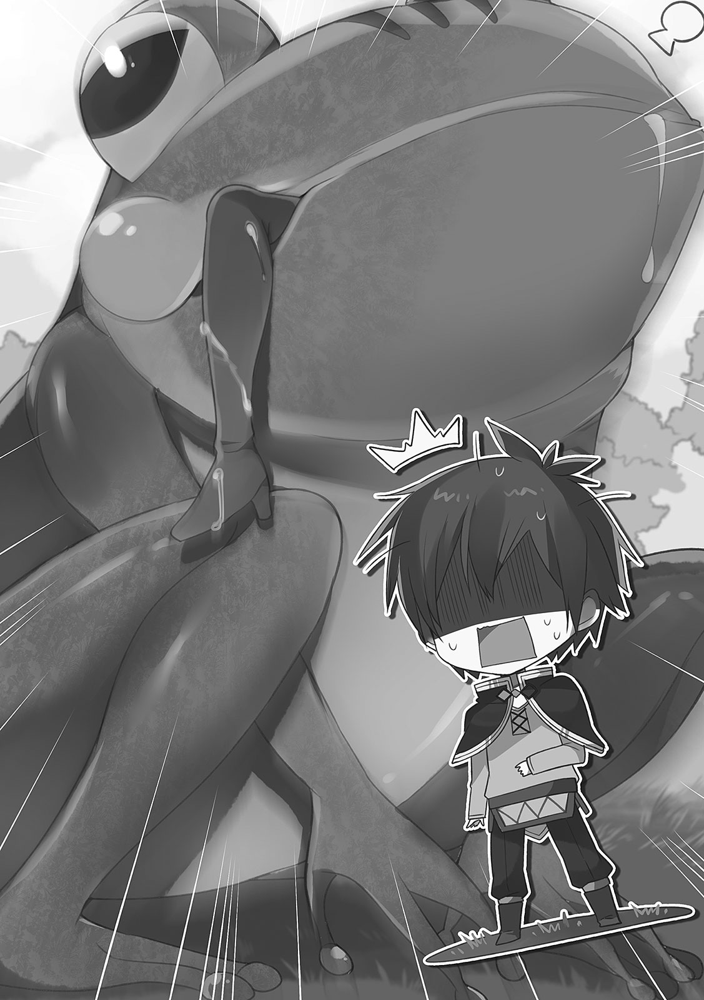
「アクアー！ おま、お前、食われてんじゃねえええええ！」
カエルに食われたアクアの足が、カエルの口の端から覗き、ビクンビクンと震えている。
俺はショートソードを抜くと、カエルへ向かって駆け出した！
「ぐすっ……、うっ、うええええええええっ……、あぐうっ……！」
俺の前には、地面に膝を抱えてうずくまり、カエルの粘液でねちょねちょになって泣くアクアの姿。
その隣には、俺に頭を砕かれたカエルが横たわっていた。
「ううっ……ぐずっ……あ、ありがど……、カズマ、あ、ありがどうね……っ！ うわああああああああああんっ…………！」
カエルの口から引っ張り出されたアクアは先ほどから泣きじゃくっている。
流石の女神も、捕食は応えたらしい。
「だ、大丈夫かアクア、しっかりしろ……、その、今日はもう帰ろう。請けたクエストは、三日の間にカエル五匹の駆除だけど、これは俺達の手に負える相手じゃない。もっと、装備を調えてからにしよう。俺なんて、武器はショートソード一本、防具すら無くジャージのままだ。せめて、冒険者に見える格好になってからにしよう」
正直言って、ド素人の俺がカエルを仕留められたのも、アクアを捕食したカエルが獲物を飲み込もうと、その動きを止めていた事が大きかった。
元気に俺に向かって襲いかかるカエルに、正面から立ち向かっていく勇気は無い。
だがアクアは、粘液でヌラヌラと体中をテカらせながらも立ち上がる。
「ぐすっ……。女神が、たかがカエルにここまでの目に遭わされて、黙って引き下がれるもんですか……っ！ 私はもう、汚されてしまったわ。今の汚れた私を信者が見たら、信仰心なんてダダ下がりよ！ これでカエル相手に引き下がったなんて知れたら、美しくも麗しいアクア様の名が廃るってものだわ！」
心配するな。日頃大喜びでおっさん達の数倍の荷物を運んで汗を流し、風呂上がりの晩飯を何より楽しみにし、馬小屋の藁の中で俺の隣でよだれを垂らして気持ちよく寝るあの姿を見れば、今の粘液まみれの姿なんて今更だ。
だがアクアは、俺が止める間も無く、離れた場所にいたカエルに向かって駆け出した。
「あっ！ おい、待てアクア！」
俺の制止も聞かず、アクアはカエルとの距離を詰め、駆ける勢いそのままに、拳に白い光を宿らせてカエルの腹に殴りかかった。
「神の力、思い知れ！ 私の前に立ち塞がった事、そして神に牙を剝いた事！ 地獄で後悔しながら懺悔なさい！ ゴッドブローッ！」
確か、ギルドの職員からは、打撃系の攻撃はあまり効果が無いと聞いていたのだが。
ぶよんとカエルの柔らかい腹に拳がめり込み、そして殴られたカエルは、まるで何事もなかったかの様に……。
カエルと見つめ合ったままアクアが呟く。
「……カ、カエルって、よく見ると可愛いと思うの」
…………俺は、捕食した獲物を飲み込もうとして動かなくなった、本日二匹目になるカエルを倒し、粘液まみれで泣きじゃくる女神を連れ、今日の討伐を終えた。
４
「アレね。二人じゃ無理だわ。仲間を募集しましょう！」
街に帰還した俺達は、真っ先に大衆浴場に行って汚れを落とし、冒険者ギルドにてカエルもも肉の唐揚げを食い、作戦会議をしていた。
ここ冒険者ギルドは、冒険者達の待ち合わせや溜まり場としても使われていて、討伐したモンスターの買い取りと、モンスター料理が売りの大きな酒場が併設されている。
今日はカエル二匹の肉が手に入ったので、ギルドへカエル肉を売り、そこそこの小遣いになった。
あんな巨大なカエルは、とても俺達二人じゃ運べない。
だけどギルドの人に頼むと、倒したモンスターの移送サービスを行ってくれるそうだ。
カエル一匹の引き取り価格は、移送サービス込みで五千エリス。
ハッキリ言って、土木作業のバイトの給料と稼ぎがあまり変わらないことが分かった。
しかし、ちょっと硬いがカエルの唐揚げが意外にイケるのが驚いた。
この世界に来た当初はトカゲやカエルに抵抗があったが、定食として出され、食べてみると意外と美味い物が多い。
目の前の女神は、どんな食べ物でも一切の躊躇なくモリモリ食べていたが。
「でもなあ……。仲間ったって駆け出しでロクな装備もない俺達と、パーティー組んでくれる奴なんかいると思うか？」
口一杯にカエルのもも肉を頰張ったアクアは、手にしたフォークを左右に振った。
「ふぉのわたひがいるんだはら、なかああんて」
「飲み込め。飲み込んでから喋れ」
口の中の物をゴクリと飲み込み、
「この私がいるんだから、仲間なんて募集かければすぐよ。なにせ、私は最上級職のアークプリーストよ？ あらゆる回復魔法が使えるし、補助魔法に毒や麻痺なんかの治癒、蘇生だってお手の物。どこのパーティーも喉から手が出るぐらい欲しいに決まってるじゃない。カズマのせいで地上に墜とされ、本来の力からは程遠い状態とはいえ、仮にも女が……、コホンッ！ このアクア様よ？ ちょろっと募集かければ『お願いですから連れてってください』って輩が山ほどいるわ！ 分かったら、カエルの唐揚げもう一つよこしなさいよ！」
と言って、俺の皿から唐揚げを奪い取る自称女神を、俺は不安気に眺めていた。
５
翌日の、冒険者ギルドにて。
「……………………来ないわね……」
アクアが寂しそうに呟いた。
求人の張り紙を出した俺達は、冒険者ギルドの片隅にあるテーブルで、すでに半日以上も未来の英雄候補様を待ち続けている。
どうやら、張り紙が他の冒険者に見てもらえていない訳ではないらしい。
俺達以外にもパーティー募集をしている冒険者はそこそこいる。だがその人達は次々と面接をして、何やら談笑した後どこかに連れだって行った。
誰も来ない理由は分かっている。
「……なあ、ハードル下げようぜ。目的は魔王討伐だから、仕方ないっちゃ仕方ないんだが……。流石に、上級職のみ募集してますってのは厳しいだろ」
「うう……。だってだって……」
この異世界の冒険者としての職には、上級職というものがある。
アクアが就いた、アークプリーストもその上級職の一つだ。
普通の人間ではそうそう就けない、言ってみれば勇者候補だ。
当然、そんな勇者候補は既に他のパーティーで優遇されている訳で……。
アクアは、魔王討伐のためにできるだけ強力な人材で固めたいところなのだろう。
だが……。
「このままじゃ一人も来ないぞ？ 大体、お前は上級職かも知れんが俺は最弱職なんだ。周りがいきなりエリートばかりじゃ俺の肩身が狭くなる。ちょっと、募集のハードル下げて……」
俺がそう言って、立ち上がろうとした時だった。
「上級職の冒険者募集を見て来たのですが、ここで良いのでしょうか？」
どことなく気怠げな、眠そうな赤い瞳。
そして、黒くしっとりとした質感の、肩口まで届くか届かないかの長さの髪。
俺達に声をかけてきたのは、黒マントに黒いローブ、黒いブーツに杖を持ち、トンガリ帽子まで被った、典型的な魔法使いの少女だった。
まるで人形の様に整った顔をした──ロリっ子──である。
この世界では、子供が働いているのも別に珍しくは無いようだが……。
どう考えても12～13歳くらいにしか見えない、片目を眼帯で隠した小柄で細身なその少女は、突然バサッとマントを翻し、
「我が名はめぐみん！ アークウィザードを生業とし、最強の攻撃魔法、爆裂魔法を操る者……！」
「…………冷やかしに来たのか？」
「ち、ちがわい！」
女の子の自己紹介に思わず突っ込んだ俺に、その子は慌てて否定する。
いや、めぐみんってなんだ。
「……その赤い瞳。もしかして、あなた紅魔族？」
アクアの問いにその子はこくりと頷くと、アクアに自分の冒険者カードを手渡した。
「いかにも！ 我は紅魔族随一の魔法の使い手、めぐみん！ 我が必殺の魔法は山をも崩し、岩をも砕く……！ ……という訳で、優秀な魔法使いはいりませんか？ ……そして図々しいお願いなのですが、もう三日も何も食べていないのです。できれば、面接の前に何か食べさせては頂けませんか……」
めぐみんは、そう言って悲しげな瞳でじっと見てきた。
それと同時に、めぐみんの腹の辺りからキューと切ない音が鳴る。
「……飯を奢るぐらい構わないけどさ。その眼帯はどうしたんだ？ 怪我でもしているのなら、こいつに治してもらったらどうだ？」
「……フ。これは、我が強大なる魔力を抑えるマジックアイテムであり……。もしこれが外される事があれば……。その時は、この世に大いなる災厄がもたらされるだろう……」
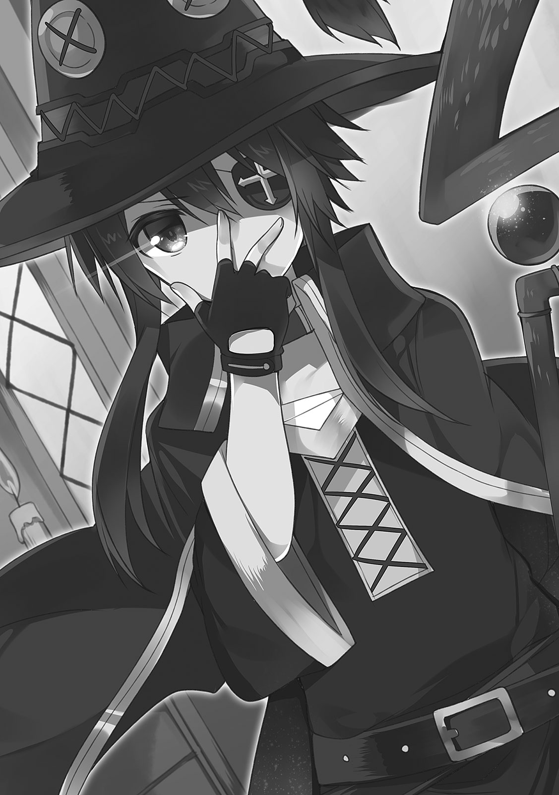
「へえー……。封印みたいなものか」
「まあ噓ですが。単に、オシャレで着けているただの眼帯……、あっあっ、ごめんなさい、止めて下さい引っ張らないでください！」
「……ええと。カズマに説明すると、彼女達紅魔族は、生まれつき高い知力と強い魔力を持ち、大抵は魔法使いのエキスパートになる素質を秘めているわ。紅魔族は、名前の由来となっている特徴的な紅い瞳と……。そして、それぞれが変な名前を持っているの」
めぐみんの眼帯を引っ張っている俺に、アクアが言った。
……なるほど。名前といい眼帯といい、俺をからかっているのかと思った。
眼帯を解放され、気を取り直しためぐみんは。
「変な名前とは失礼な。私から言わせれば、街の人達の方が変な名前をしていると思うのです」
「……ちなみに、両親の名前を聞いてもいいか？」
「母はゆいゆい。父はひょいざぶろー」
「「…………」」
思わず沈黙する俺とアクア。
「…………とりあえず、この子の種族は質のいい魔法使いが多いんだよな？ 仲間にしてもいいか？」
「おい、私の両親の名前について言いたい事があるなら聞こうじゃないか」
俺に顔を近付けてくるめぐみんに、アクアが冒険者カードを返す。
「いーんじゃない？ 冒険者カードは偽造できないし、彼女は上級職の、強力な攻撃魔法を操る魔法使い、アークウィザードで間違いないわ。カードにも、高い魔力値が記されてるし、これは期待できると思うわ。もし彼女の言う通り本当に爆裂魔法が使えるのなら、それは凄い事よ？ 爆裂魔法は、習得が極めて難しいと言われる爆発系の、最上級クラスの魔法だもの」
「おい、彼女ではなく、私の事はちゃんと名前で呼んで欲しい」
抗議してくるめぐみんに、俺は店のメニューを手渡した。
「まあ、何か頼むといいよ。俺はカズマ。こいつはアクアだ。よろしく、アークウィザード」
めぐみんは何か言いたそうな顔をしながら、無言でメニューを手に取った。
６
「爆裂魔法は最強魔法。その分、魔法を使うのに準備時間が結構かかります。準備が調うまで、あのカエルの足止めをお願いします」
俺達は満腹になっためぐみんを連れ、あのジャイアントトードにリベンジに来ていた。
平原の、遠く離れた場所には一匹のカエルの姿。
そのカエルは、こちらに気付いて向かって来ていた。
だが、更に逆方向からも別のカエルがこちらに向かう姿が見える。
「遠い方のカエルを魔法の標的にしてくれ。近い方は……。おい、行くぞアクア。今度こそリベンジだ。お前、一応は元なんたらなんだろ？ たまには元なんたらの実力を見せてみろ！」
「元って何!? ちゃんと現在進行形で女神よ私は！ アークプリーストは仮の姿よぉ！」
涙目で俺の首を絞めようとしてくる自称女神を、めぐみんが不思議そうに。
「……女神？」
「……を、自称している可哀想な子だよ。たまにこういった事を口走ることがあるんだけど、できるだけそっとしておいてやって欲しい」
俺の言葉に、同情の目でアクアを見るめぐみん。
涙目になったアクアが、拳を握ってヤケクソ気味に、近い方のカエルへと駆け出した。
「何よ、打撃が効き辛いカエルだけど、今度こそ女神の力を見せてやるわよ！ 見てなさいよカズマ！ 今のところ活躍してない私だけど、今日こそはっ！」
そう叫んで、見事カエルの体内へ侵入する事に成功した学習能力の無いアクアが、やがて動かなくなり、そのまま一匹のカエルを足止めする。
流石は女神、身を挺して時間稼ぎをしてくれているらしい。
……と、めぐみんの周囲の空気がビリビリと震えだした。
めぐみんが使おうとしている魔法がヤバそうなことは、魔法を知らない俺でも分かった。
魔法を唱えるめぐみんの声が大きくなり、めぐみんのこめかみに一筋の汗が伝う。
「見ていてください。これが、人類が行える中で最も威力のある攻撃手段。……これこそが、究極の攻撃魔法です」
めぐみんの杖の先に光が灯った。
膨大な光をギュッと凝縮した様な、とても眩しいが小さな光。
めぐみんが、紅い瞳を鮮やかに輝かせ、カッと見開く。
「『エクスプロージョン』ッ！」
平原に一筋の閃光が走り抜ける。
めぐみんの杖の先から放たれたその光は、遠く、こちらに接近してくるカエルに吸い込まれる様に突き刺さると……！
その直後、凶悪な魔法の効果が現れた。
目も眩む強烈な光、そして辺りの空気を震わせる轟音と共に、カエルは爆裂四散した。
凄まじい爆風に吹き飛ばされそうになりながらも、俺は足を踏ん張り顔を庇う。
爆煙が晴れると、カエルのいた場所には二十メートル以上のクレーターができており、その爆発の凄まじさを物語っていた。
「……すっげー。これが魔法か……」
俺がめぐみんの魔法の威力に感動している、その時。
魔法の音と衝撃で目覚めでもしたのか、一匹のカエルが地中からのそりと這い出た。
雨も降っていない上に水源もないこの平原で、太陽の下、このカエル達はどうやって乾かずに生存できているのだろうと思っていたが、地中とは予想外だ。
カエルはめぐみんの近くに這い出ようとしているが、その動作は非常に遅い。
この隙にめぐみんと共にカエルから距離を取り、先程の爆裂魔法で消し飛ばしてもらえばいいだろう。
「めぐみん！ 一旦離れて、距離を取ってから攻撃を……」
そこまで言いかけて、めぐみんの方を向くと同時。
俺はそのまま動きを止める。
そこにはめぐみんが倒れていた。
「ふ……。我が奥義である爆裂魔法は、その絶大な威力ゆえ、消費魔力もまた絶大。……要約すると、限界を超える魔力を使ったので身動き一つ取れません。あっ、近くからカエルが湧き出すとか予想外です。……やばいです。食われます。すいません、ちょ、助け……ひあっ……!?」
俺は、アクアとめぐみんが身を挺して動きを封じたカエル二匹にとどめを刺し。
何とか、三日以内にジャイアントトード五匹討伐のクエストを完了させた。
７
「うっ……うぐっ……。ぐすっ……。生臭いよう……。生臭いよう…………」
俺の後を、粘液まみれのアクアがめそめそと泣きながら付いて来る。
「カエルの体内って、臭いけどいい感じに温かいんですね……。知りたくもない知識が増えました……」
アクアと同じく粘液まみれで、知りたくもない知識を教えてくれながら、めぐみんは俺の背中におぶさっていた。
魔法を使う者は、魔力の限界を超えて魔法を使うと、魔力の代わりに生命力を削る事になるらしい。
魔力が枯渇している状態で大きな魔法を使うと、命に関わる事もあるそうだ。
「今後、爆裂魔法は緊急の時以外は禁止だな。これからは、他の魔法で頑張ってくれよ、めぐみん」
俺の言葉に、背中におぶさっためぐみんが、肩を摑む手に力を込めた。
「…………使えません」
「…………は？ 何が使えないんだ？」
めぐみんの言葉に、俺はオウム返しで言葉を返す。
めぐみんが、俺に摑まる手に更に力を込め、その薄い胸が俺の背中に押し付けられた。
「…………私は、爆裂魔法しか使えないです。他には、一切の魔法が使えません」
「…………マジか」
「…………マジです」
俺とめぐみんが静まり返るなか、今まで鼻をぐすぐす鳴らしていたアクアが、ようやく会話に参加する。
「爆裂魔法以外使えないってどういう事？ 爆裂魔法を習得できる程のスキルポイントがあるなら、他の魔法を習得していない訳がないでしょう？」
……スキルポイント？
そういや、ギルドのお姉さんがスキル習得がどうのと言っていたな。
そんな俺の顔を見て、アクアが説明してくれる。
「スキルポイントってのは、職業に就いた時に貰える、スキルを習得するためのポイントよ。優秀な者ほど初期ポイントは多くて、このポイントを振り分けて様々なスキルを習得するの。例えば、超優秀な私なんかは、まず宴会芸スキルを全部習得し、それからアークプリーストの全魔法も習得したわ」
「……宴会芸スキルって何に使うものなんだ？」
アクアは俺の質問を無視して先を続ける。
「スキルは、職業や個人によって習得できる種類が限られてくるわ。例えば水が苦手な人は氷結や水属性のスキルを習得する際、普通の人よりも大量のポイントが必要だったり、最悪、習得自体ができなかったり。……で、爆発系の魔法は複合属性って言って、火や風系列の魔法の深い知識が必要な魔法なの。つまり、爆発系の魔法を習得できるくらいの者なら、他の属性の魔法なんて簡単に習得できるはずなのよ」
「爆裂魔法なんて上位の魔法が使えるなら、下位の他の魔法が使えない訳が無いって事か。……で、宴会芸スキルってのは何時どうやって使うものなんだ？」
俺の背中で、めぐみんがぽつりと呟いた。
「……私は爆裂魔法をこよなく愛するアークウィザード。爆発系統の魔法が好きなんじゃないです。爆裂魔法だけが好きなのです」
そもそも、爆発魔法と爆裂魔法って何が違うんだ？
その意味は俺には分からないが、アクアは真剣な面持ちでめぐみんの独白に耳を傾けている。
いや、そんな事よりも、俺はすでに宴会芸スキルとやらの方が気になっているんだが。
「もちろん他のスキルを取れば楽に冒険ができるでしょう。火、水、土、風。この基本属性のスキルを取っておくだけでも違うでしょう。……でも、ダメなのです。私は爆裂魔法しか愛せない。たとえ今の私の魔力では一日一発が限界でも。たとえ魔法を使った後は倒れるとしても。それでも私は、爆裂魔法しか愛せない！ だって、私は爆裂魔法を使うためだけに、アークウィザードの道を選んだのですから！」
「素晴らしい！ 素晴らしいわ！ その、非効率ながらもロマンを追い求めるその姿に、私は感動したわ！」
……まずい、どうもこの魔法使いはダメな系だ。
よりによってアクアが同調しているのがその証拠だ。
俺はここ二回のカエルとの戦いで、どうもこの女神、ちっとも使えないんじゃないかと疑っているのだ。
はっきり言って、アクア一人でも厄介なのにこれ以上問題児は……。
よし、決めた。
「そっか。多分茨の道だろうけど頑張れよ。お、そろそろ街が見えてきたな。それじゃあ、ギルドに着いたら今回の報酬を山分けにしよう。うん、まあ、また機会があればどこかで会う事もあるだろ」
その言葉に、俺を摑んでいるめぐみんの手に力が込められた。
「ふ……。我が望みは、爆裂魔法を放つ事。報酬などおまけに過ぎず、なんなら山分けでなく、食事とお風呂とその他雑費を出して貰えるなら、我は無報酬でもいいと考えている。そう、アークウィザードである我が力が、今なら食費とちょっとだけ！ これはもう、長期契約を交わすしかないのではないだろうか！」
「いやいや、その強力な力は俺達みたいな弱小パーティーには向いてない。そう、めぐみんの力は俺達には宝の持ち腐れだ。俺達の様な駆け出しは普通の魔法使いで十分だ。ほら、俺なんか最弱職の冒険者なんだからさ」
俺はそう言いながら、ギルドに着いたらすぐに追い出せるように、必死でしがみついてくるめぐみんの手を緩めようとする。
が、その俺の手をめぐみんが摑んで放さない。
「いえいえいえ、弱小でも駆け出しでも大丈夫です。私は上級職ですけどまだまだ駆け出し。レベルも６ですから。もう少しレベルが上がればきっと魔法使っても倒れなくなりますから。で、ですから、ね？ 私の手を引き剝がそうとしないで欲しいです」
「いやいやいやいや、一日一発しか使えない魔法使いとか、かなり使い勝手悪いから。くっ、こいつ魔法使いのくせに意外な握力をっ……！ お、おい放せ、お前多分ほかのパーティーにも捨てられた口だろ、というかダンジョンにでも潜った際には、爆裂魔法なんて狭い中じゃ使えないし、いよいよ役立たずだろ。お、おい放せって。ちゃんと今回の報酬はやるから！ 放せ！」
「見捨てないでください！ もうどこのパーティーも拾ってくれないのです！ ダンジョン探索の際には、荷物持ちでも何でもします！ お願いです、私を捨てないでください！」
背中から離れようとしないめぐみんが、捨てないでだのと大声で叫ぶためか、通行人達がこちらを見てひそひそと話をしていた。
すでに街中に入っているため、見てくれだけは良いアクアもいるせいか、やたら目立つ。
「──やだ……。あの男、あの小さい子を捨てようとしてる……」
「──隣には、なんか粘液まみれの女の子を連れてるわよ」
「──あんな小さい子を弄んで捨てるなんて、とんだクズね。見て！ 女の子は二人ともヌルヌルよ？ 一体どんなプレイしたのよあの変態」
……間違いなくあらぬ誤解を受けている。
アクアがそれを聞いてにやにやしているのが憎たらしい。
そして、めぐみんにもそれが聞こえた様で。
俺が肩越しにめぐみんを見ると、めぐみんは口元をにやりと歪め……。
「どんなプレイでも大丈夫ですから！ 先程の、カエルを使ったヌルヌルプレイだって耐えてみせ」
「よーし分かった！ めぐみん、これからよろしくな！」
８
「はい、確かに。ジャイアントトードを三日以内に五匹討伐。クエストの完了を確認致しました。ご苦労様でした」
冒険者ギルドの受付に報告を終え、規定の報酬を貰う。
粘液にまみれたアクアとめぐみんは、そのままだと生臭い上、また俺があらぬ誤解を受ける可能性があるので、とっとと大衆浴場へ追いやった。
仕留めたカエルの内一体は爆裂魔法で消滅したため、クエスト完了の報告はどうなるのかと思っていたが、冒険者カードには、倒したモンスターの種類や討伐数が記録されていくらしい。
俺は自分のカードと、めぐみんから預かったカードを見せると、受付はカウンターに置いてある妙な箱を操作して、それだけでチェックを終えていた。
科学の代わりに魔法が発達した結果なんだろうが、この世界の技術もあながちバカにはできない。
俺は改めて自分のカードを見ると、そこには冒険者レベル４と記されている。
あのカエルは駆け出し冒険者にとってレベルを上げやすい部類のモンスターなのだそうだ。
俺一人でカエルを四匹狩った訳だが、それだけで一気にレベルが４に上がった。
低レベルな人間ほど成長が速いらしい。
カードに記されているステータスの数値が多少は上がっているが、あまり強くなったという実感は無い。
「……しかし、本当にモンスターを倒すだけで、強くなるもんなんだなぁ……」
俺は思わず呟いた。
受付のお姉さんは、最初の説明の時に言っていた。
この世のあらゆるモノは、魂を体の内に秘めている。どの様な存在も、生き物を食べたり、もしくは殺したり。他の何かの生命活動にとどめを刺す事で、その存在の魂の記憶の一部を吸収できる、と。
こういう所は本当にゲームみたいだ。
よく見ると、カードにはスキルポイントと書かれていて、そこに３と表示されている。
これを使えば、俺もスキルを覚えられるわけだ。
「ではジャイアントトード二匹の買い取りとクエストの達成報酬を合わせまして、十一万エリスとなります。ご確認くださいね」
十一万か。
あの巨大なカエルが、移送費込みで一匹五千円程での買い取り。
そして、カエル五匹を倒して報酬が十万円。
アクアの話では、クエストは四人から六人でパーティーを組んで行うものらしい。
なので、普通の冒険者の相場だと、一日から二日をかけて命懸けで戦い、カエル五匹の取引と報酬、合わせて十二万五千円。五人パーティーだったとして、一人当たりの取り分が二万五千円。
……割に合わねー。
クエストが一日で済めば日当二万五千円。
これだけ見れば一般人にしてはいい稼ぎに思えるかもしれないが、命懸けの仕事にしては割に合っていない気がする。
事実、今日なんてカエルがもう一匹湧いてたら俺も食われて、誰も助けることができず、あっさり全滅していただろう。
考えただけでもゾッとする。
一応ほかのクエストにも目を通すと、そこに並んでいたクエストは……。
『──森に悪影響を与えるエギルの木の伐採、報酬はでき高制──
──迷子になったペットのホワイトウルフを探して欲しい──
──息子に剣術を教えて欲しい── ※要、ルーンナイトかソードマスターの方に限る。
──魔法実験の練習台探してます── ※要、強靭な体力か強い魔法抵抗力…………』
うん。
この世界で生きていくのは甘くない。
冒険開始二日目にして、もう日本に帰りたくなって来た。
「……すまない、ちょっといいだろうか……？」
近くの椅子に座り、俺は軽いホームシックになっていると、背後からボソリと声がかけられた。
異世界の現実を見せつけられ、なんだかぐったりしていた俺は虚ろな目で振り向いた。
「なんでしょ…………うか…………」
そして、俺は声の主を見て絶句した。
女騎士。
それも、とびきり美人の。
パッと見た感じ、クールな印象を受けるその美女は、無表情にこちらを見ていた。
身長は俺より若干高い。
俺の身長が１６５センチ。
それより少し高いとなると１７０ぐらいだろうか。
頑丈そうな金属鎧に身を包んだ、金髪碧眼の美女だった。
俺よりも一つ二つ年上だろうか。
鎧のせいでその体型は分からないが、その美女は、何だかとても色気があった。
クールな顔立ちなのに、何だろう、被虐心を煽ると言うか……。
……っと、いかん、見惚れてどうする。
「あ、えーっと、何でしょうか？」
同い年みたいなアクアや年下なめぐみんと違い、年上の美人相手という事で緊張し、若干上擦った声になってしまう。
長い引き篭もり生活の弊害だ。
「うむ……。この募集は、あなたのパーティーの募集だろう？ もう人の募集はしていないのだろうか」
その女騎士が見せてきたのは一枚の紙。
そう言えば、めぐみんをパーティーに入れてから、募集の紙をまだ剝がしていなかった。
「あー、まだパーティーメンバーは募集してますよ。と言っても、あまりオススメはしないですけど……」
「ぜひ私を！ ぜひ、この私をパーティーに！」
やんわり断ろうとした俺の手を、突然、女騎士がガッと摑んだ。
……えっ。
「い、いやいや、ちょっ、待って待って、色々と問題があるパーティーなんですよ、仲間二人はポンコツだし、俺なんて最弱職で、さっきだって仲間二人が粘液まみれ、いだだだだっ！」
粘液まみれと言った瞬間に、俺の手を握る女騎士がその手に力を込めた。
「やはり、先ほどの粘液まみれの二人はあなたの仲間だったのか！ 一体何があったらあんな目に……！ わ、私も……！ 私もあんな風に……！」
「えっ!?」
今このお姉さんはなんつった？
「いや違う。あんな年端もいかない二人の少女、それがあんな目に遭うだなんて騎士として見過ごせない。どうだろう、この私はクルセイダーというナイトの上級職だ。募集要項にも当てはまると思うのだが」
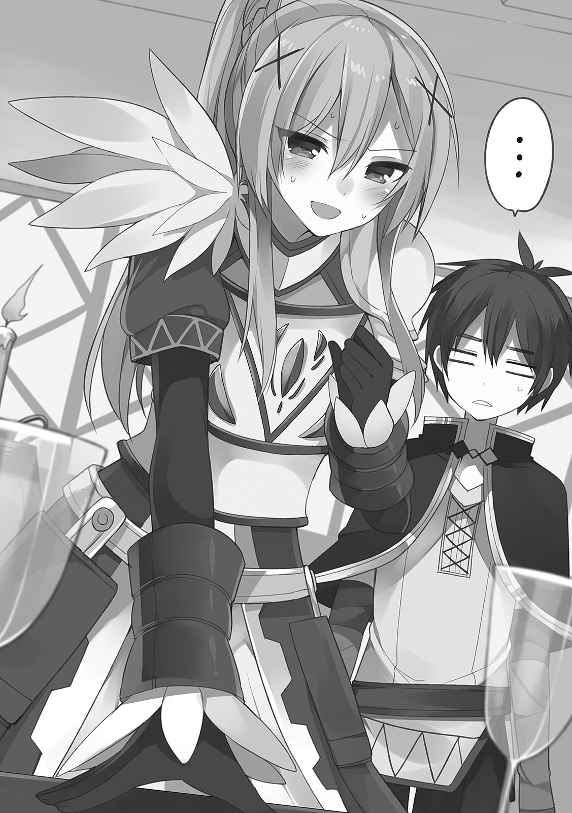
なんだろう、この女騎士、目がやばい。落ち着いた雰囲気のお姉さんだと思っていたのに！
そして、俺の危機感知センサーが反応している。
こいつはアクアやめぐみんに通じる何かがあるタイプだと。
……美人だが仕方ない。
「いやー、先ほど言いかけましたがオススメはしないですよ。仲間の一人は何の役に立つのか良く分からないですし、もう一人は一日一発しか魔法が撃てないそうです。そして俺は最弱職。ポンコツパーティーなんで、他の所をオススメしま……っ!?」
さらに女騎士の手に力が込められる。
「なら尚更都合が良い！ いや実は、ちょっと言い辛かったのだが、私は力と耐久力には自信があるのだが不器用で……。その……、攻撃が全く当たらないのだ……」
やはり俺のセンサーは正しかったらしい。
「という訳で、上級職だが気を遣わなくていい。ガンガン前に出るので、盾代わりにこき使って欲しい」
女騎士が、椅子に座る俺に端整な顔をズイと寄せてくる。
顔が近い！
俺は座っているため相手から見下ろされる体勢なのだが、女騎士のサラサラの金髪が俺の頰に当たってドキドキする。
こんな所でも長期の引き篭もりによる弊害が……！
いや違う、単に思春期の童貞には刺激が強過ぎて、ドギマギしているだけだ。
落ち着け、色香に惑わされるな！
「いや、女性が盾代わりだなんて、ウチのパーティーは貧弱なんで本当にあなたに攻撃が回ってきますって。それこそ毎回モンスターに袋叩きにされるかも知れませんよ!?」
「望む所だ」
「いや、アレですよ。今日なんて仲間二人がカエルに捕食されて粘液まみれにされたんですよ!? それが毎日続くかも」
「むしろ望む所だっ！」
…………ああ、分かった。
頰を紅潮させて俺の手を強く握る女騎士。
それを見て、俺は悟った。
……こいつも、性能だけでなく中身までダメな系だ。
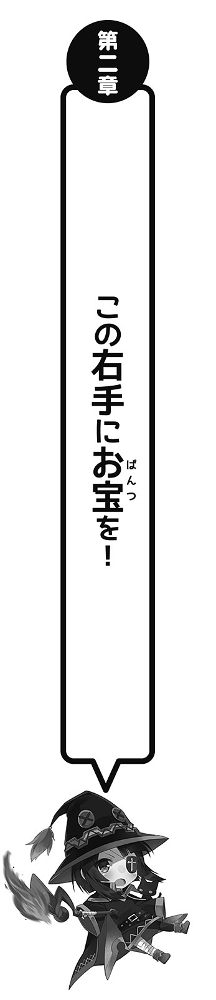
１
「なあ。聞きたいんだがスキルの習得ってどうやるんだ？」
カエル討伐の翌日の事。
俺達はギルド内の酒場で、遅めの昼食をとっていた。
俺の目の前では、金がなく、俺達に会うまではろくな物を食べられなかったらしいめぐみんが、一心不乱に定食を喰らい、アクアは手近な店員を捕まえておかわりを注文している。
とても年頃の女とは思えない旺盛な食欲だ。
……一応女二人に男一人のハーレムパーティーなのに、色気の欠片も無えな……。
めぐみんが、フォークを握り締めたまま顔を上げると。
「スキルの習得ですか？ そんなもの、カードに出ている、現在習得可能なスキルってところから……。ああ、カズマの職業は冒険者でしたね。初期職業と言われている冒険者は、誰かにスキルを教えてもらうのです。まずは目で見て、そしてスキルの使用方法を教えてもらうのです。すると、カードに習得可能スキルという項目が現れるので、ポイントを使ってそれを選べば習得完了なのです」
なるほど。
確か受付のお姉さんが、初期職業の冒険者は全てのスキルが習得可能だと言っていた。
という事は……。
「……つまりめぐみんに教えてもらえば、俺でも爆裂魔法が使えるようになるって事か？」
「その通りです！」
「うおっ！」
俺の何気ない一言に、意外な食いつきを見せるめぐみん。
「その通りですよカズマ！ まあ、習得に必要なポイントはバカみたいに食いますが、冒険者は、アークウィザード以外で唯一爆裂魔法が使える職業です。爆裂魔法を覚えたいなら幾らでも教えてあげましょう。というか、それ以外に覚える価値のあるスキルなんてありますか？ いいえ、ありませんとも！ さあ、私と一緒に爆裂道を歩もうじゃないですか！」
顔が近い！
「ちょ、落ち、落ち着けロリっ子！ つーか、スキルポイントってのは今３ポイントしかないんだが、これで習得できるものなのか？」
「ロ、ロリっ子……!?」
滾るめぐみんでは話にならないため、アクアに尋ねる。
「冒険者が爆裂魔法を習得しようと思うなら、スキルポイントの10や20じゃきかないわよ。十年ぐらいかけてレベルを上げ続けて一切ポイントを使わず貯めれば、もしかしたら習得できるかもね」
「待てるかそんなもん」
「ふ……、この我がロリっ子…………」
俺の一言にショックを受けたらしいめぐみんは、しょんぼりと項垂れながら再び定食をモソモソと食べだした。
しかし、俺の就いている職業、冒険者は、全スキルを習得可能って所が唯一の利点なのだから、せっかくなら多彩なスキルを覚えていきたい。
「なあアクア。お前なら便利なスキルたくさん持ってるんじゃないか？ 何か、お手軽なスキルを教えてくれよ。習得にあまりポイントを使わないで、それでいてお得な感じの」
俺の言葉に、アクアは水の入ったコップを握り、しばらく考え込む。
「……しょうがないわねー。言っとくけど、私のスキルは半端ないわよ？ 本来なら、誰にでもホイホイと教えるようなスキルじゃないんだからね？」
やたら勿体を付けるアクアだが、教えてもらう立場なのでここはじっと我慢だ。
俺は神妙に頷きながら、アクアがスキルを使う所を観察する。
「じゃあ、まずはこのコップを見ててね。この水の入ったコップを自分の頭の上に落ちないように載せる。ほら、やってみて？」
ちょっと人目が気になるが、俺はアクアに続いて同じように自分の頭にコップを載せた。
すると、アクアはどこから取り出したのか、一粒の何かの種をテーブルに置く。
「さあ、この種を指で弾いてコップに一発で入れるのよ。すると、あら不思議！ このコップの水を吸い上げた種はにょきにょきと……」
「誰が宴会芸スキル教えろっつったこの駄女神！」
「ええ──────!?」
なぜかショックを受けたらしいアクアも、めぐみんに続いてしょぼんとしながらテーブルの上の種を指で弾いて転がし始める。
何を落ち込んでいるのかは知らないが、目立つから頭の上のコップを下ろして欲しい。
「あっはっは！ 面白いねキミ！ ねえ、キミがダクネスが入りたがってるパーティーの人？ 有用なスキルが欲しいんだろ？ 盗賊スキルなんてどうかな？」
それは、横からの突然の声。
見れば隣のテーブルには二人の女性がいた。
俺に声をかけてきたのは革の鎧を着た、身軽な格好をした女の子。
頰に小さな刀傷があり、ちょっとスレた感じだがサバサバとした明るい雰囲気の銀髪の美少女だ。
その隣には、ガチガチのフルプレートメイルを着込んだ金髪ロングの美女。
冷たく、とっつきにくいクールな印象の……。
そう、先日、パーティーに入りたいと言ってきたあの女騎士だった。
盗賊の子は俺より一つ二つ年下だろうか。
「えっと、盗賊スキル？ どんなのがあるんでしょう？」
俺の質問に、盗賊風の女の子は上機嫌で。
「よくぞ聞いてくれました。盗賊スキルは使えるよー。罠の解除に敵感知、潜伏に窃盗。持ってるだけでお得なスキルが盛りだくさんだよ。キミ、初期職業の冒険者なんだろ？ 盗賊のスキルは習得にかかるポイントも少ないしお得だよ？ どうだい？ 今なら、クリムゾンビア一杯でいいよ？」
安いな！
と思ったが、よく考えればスキルを教えた所でこの子にはリスクなんてない。
本気で俺が盗賊スキルを教えて欲しければ、そこらの他の盗賊に頼んでもいい訳だし。
「よし、お願いします！ すんませーん、こっちの人に冷えたクリムゾンビアを一つ！」
２
「まずは自己紹介しとこうか。あたしはクリス。見ての通りの盗賊だよ。で、こっちの無愛想なのがダクネス。昨日ちょっと話したんだっけ？ この子の職業はクルセイダーだから、キミに有用そうなスキルはちょっと無いと思うよ」
「ウス！ 俺はカズマって言います。クリスさん、よろしくお願いします！」
冒険者ギルドの裏手の広場。
俺とクリス、そしてダクネスの三人は、人気のない広場に立っていた。
ちなみに連れの二人は、なにやらテーブルでへこんだままだったので置いてきた。
「では、まずは《敵感知》と《潜伏》をいってみようか。《罠解除》とかは、こんな街中に罠なんてないからまた今度ね。じゃあ……、ダクネス、ちょっと向こう向いてて？」
「……ん？ ……分かった」
ダクネスが、言われたとおりに反対を向く。
すると、クリスはちょっと離れた所にあるタルの中へ入り、上半身だけを出す。
そしてダクネスの頭に、何を思ったのか石を投げつけ、そのままタルの中に身を隠した。
…………ひょっとして、これが潜伏スキルだとか言う気だろうか。
「……………………」
石をぶつけられたダクネスが、無言のままスタスタと、ぽつんと一つしかないタルへ歩いていく。
「敵感知……。敵感知……！ ダクネスの怒ってる気配をピリピリ感じるよ！ ねえダクネス!? 分かってると思うけど、これはスキルを教えるために仕方なくやってる事だからね!? お手柔らかにああああああああああああ、やめてえええええええええええええええ！」
隠れていたタルごと横に倒され、ゴロゴロと転がされ、クリスが悲鳴を上げている。
……こ、これでほんとにスキルを覚えられるんだろうな……。
「さ、さて。それじゃあたしの一押しのスキル、窃盗をやってみようか。これは、対象の持ち物を何でも一つ奪い取るスキルだよ。相手がしっかり握っている武器だろうが、鞄の奥にしまい込んだサイフだろうが、何でも一つ、ランダムで奪い取る。スキルの成功確率は、ステータスの幸運値に依存するよ。強敵と相対した時に相手の武器を奪ったり、大事に隠しているお宝だけかっさらって逃げたり、色々と使い勝手のいいスキルだよ」
タルごと転がされ、目を回していたクリスが復活し、窃盗の説明をしてくれる。
確かに、窃盗スキルはなかなか使えそうだ。
しかも、成功率が幸運依存って事は、俺の唯一高いステータスを活かせるって事だ。
「じゃあ、キミに使ってみるからね？ いってみよう！ 『スティール』ッ！」
クリスが手を前に突き出し叫ぶと同時、その手に小さな物が握られていた。
それは……。
「あっ！ 俺のサイフ！」
俺のなけなしの金が入った薄いサイフ。
「おっ！ 当たりだね！ まあ、こんな感じで使うわけさ。それじゃ、サイフを返……」
クリスは、俺にサイフを返そうとして、そしてにんまりと笑みを浮かべた。
「……ねえ、あたしと勝負しない？ キミ、早速窃盗スキルを覚えてみなよ。それで、あたしから何か一つ、スティールで奪っていいよ。それが、あたしのサイフでもあたしの武器でも文句は言わない。この軽いサイフの中身だと、間違いなくあたしのサイフの中身や武器の方が価値があるよ。どんな物を奪ったとしても、キミはこの自分のサイフと引き換え。……どう？ 勝負してみない？」
いきなりとんでもない事を言い出す子だ。
しかし、と俺は考える。
俺は幸運値が高いらしい……。
相手からは何か一つ奪ってもいい……。
つまり、スキルに失敗したら何も貰えないって事じゃないだろう。
……やってやるか。
なんというか、こういった賭け事みたいな事はいかにも荒くれた冒険者同士のとり取りみたいで憧れる！
そう、この世界に来てようやく冒険者っぽいイベントだ！
俺は自分の冒険者カードを確認すると、そこに習得可能スキルという欄が新しく表示されているのを確認した。
そこを指で押してみると、四つのスキルが表示される。
《敵感知》１ポイント、《潜伏》１ポイント、《窃盗》１ポイント、《花鳥風月》５ポイント。
……《花鳥風月》？ これはアクアがやってた、コップに種を入れる宴会芸か？
宴会芸のくせに何て大層な技名！ え!? これだけスキルポイント高っ!!
宴会芸は気になる所ではあるが、俺はひとまず、カードの中のスキル、窃盗、敵感知、潜伏を習得する。
３ポイントあったスキルポイントが消費され、残りスキルポイントが０になる。
なるほど、こんな感じでスキルを覚えるのか。
「早速覚えたぞ。そして、その勝負乗った！ 何盗られても泣くんじゃねーぞ？」
言って右手を突き出す俺に、クリスが不敵に笑って見せた。
「いいねキミ！ そういう、ノリのいい人って好きだよ！ さあ、何が盗れるかな？ 今ならサイフが敢闘賞。当たりは、魔法が掛けられたこのダガーだよ！ こいつは四十万エリスは下らない一品だからね！ そして、残念賞はさっきダクネスにぶつけるために多めに拾っといたこの石だよ！」
「ああっ！ きったねえ!! そんなのありかよっ！」
俺はクリスが取り出した石を見て、思わず抗議の声を上げた。
自信満々だと思ったら、こういう事か！
確かにゴミアイテムを多く持っておけば、大事なアイテムが盗られる確率も減り、スティール対策になる。
「これは授業料だよ。どんなスキルも万能じゃない。こういった感じで、どんなスキルにだって対抗策はあるもんなんだよ。一つ勉強になったね！ さあ、いってみよう！」
畜生、確かにいい勉強にはなった！
それに心底楽しそうに笑うクリスを見ていると、騙された俺がマヌケな気分にすら思えてくる。
ここは日本じゃない、弱肉強食の異世界だ。
騙される甘っちょろいヤツが悪いのだ。
それに、勝負の分が悪くなったってだけで、まだ残念賞に当たるとは決まっていない。
「よし、やってやる！ 俺は昔から運だけはいいんだ！ 『スティール』ッ！」
叫ぶと同時、俺が突き出した右手には何かがしっかりと握られていた。
成功確率は幸運依存と言っていたが、一発で成功した所を見ると、やはり俺は、運だけには恵まれているらしい。
俺は自分が手に入れた物を広げ、マジマジと見ると……。
「……なんだこれ？」
それは、一枚の白い布切れだった。
俺はそれを両手で広げ、陽にかざして見ると……。
「ヒャッハー！ 当たりも当たり、大当たりだあああああああああ！」
「いやああああああああ！ ぱ、ぱんつ返してえええええええええええええええええっ！」
クリスが自分のスカートの裾を押さえながら、涙目で絶叫した。
３
俺がスキルを覚えてギルドの酒場に戻ると、そこは大変な騒ぎになっていた。
「アクア様、もう一度！ 金なら払うので、どうかもう一度《花鳥風月》を！」
「ばっか野郎、アクアさんには金より食い物だ！ ですよね!? アクアさん！ 奢りますから、ぜひもう一度《花鳥風月》を！」
迷惑そうな様子のアクアの周りに、なぜか人だかりができていた。
「芸って物はね？ 請われたからって何度もやる物ではないの！ 良いジョークは一度きりに限るって、偉い人が言ってたわ。ウケたからって同じ芸を何度もやるのは三流の芸人よ！ そして私は芸人じゃないから、芸でお金を受け取る訳にはいかないの！ これは芸をたしなむ者の最低限の覚悟よ。それに花鳥風月は元々あなた達に披露するつもりだった芸でもなく──あっ！ ちょっとカズマ、やっと戻ってきたわね、あんたのおかげでえらい事に……。って、その人どうしたの？」
人だかりを面倒臭そうに押しのけながら、俺の隣で涙目で落ち込んでいるクリスにアクアが興味を抱く。
すると俺が説明するより早く、ダクネスが口を開いた。
「うむ。クリスは、カズマにぱんつを剝がれた上にあり金毟られて落ち込んでいるだけだ」
「おいあんた何口走ってんだ！ 待てよ、おい待て。間違ってないけど、ほんと待て」
俺は、クリスが幾らでも払うからぱんつを返してと泣いて頼んできたので、自分のぱんつの値段は自分で決めろと告げただけだ。
そして、提示する値段に満足しなかったら、もれなくクリスのぱんつは我が家の家宝として奉られる事になる、と。
つまるところ、泣きながら自分のサイフと俺のサイフを差し出してきたから交換に応じたまでで、ダクネスの言い方だとなんだか語弊がある。
ダクネスの言葉に軽くひいてるアクアとめぐみんの視線が気になるが、やがてクリスが落ち込んでいたその顔を上げた。
「公の場でいきなりぱんつ脱がされたからって、いつまでもめそめそしててもしょうがないね！ よし、ダクネス。あたし、悪いけど臨時で稼ぎのいいダンジョン探索に参加してくるよ！ 下着を人質にされてあり金失っちゃったしね！」
「おい、待てよ。なんかすでに、アクアとめぐみん以外の女性冒険者達の目まで冷たい物になってるからほんとに待って」
今の会話が聞こえていたらしい周囲の女性冒険者。
その冷たい視線に怯える俺に、クリスがクスクス笑い、
「このくらいの逆襲はさせてね？ それじゃあ、ちょっと稼いでくるから適当に遊んでいてねダクネス！ じゃあ、いってみようかな！」
言いながら、クリスは冒険仲間募集の掲示板に行ってしまった。
「えっと、ダクネスさんは行かないの？」
自然と俺達のテーブルに座ったままのダクネスに、俺は疑問に思って尋ねる。
「……うむ。私は前衛職だからな。前衛職なんて、どこにでも有り余っている。でも、盗賊はダンジョン探索に必須な割に、地味だから成り手があまり多くない職業だ。クリスの需要なら幾らでもある」
なるほど、そういやアクアもアークプリーストは希少で引っ張りだこだと言っていたし、職業によって優遇されたりなどと色々あるのだろう。
ほどなくして臨時パーティーが見つかったのか、数名の冒険者達と連れ立ってギルドから出て行くクリス。
クリスは、出掛けにこちらに向かってひらひらと手を振って出て行った。
「もうすぐ夕方なのに、クリス達はこれからダンジョン探索に向かうのか？」
「ダンジョン探索は、できることなら朝一で突入するのが望ましいのです。なので、ああやって前の日にダンジョンに出発して、朝までダンジョン前でキャンプするのです。ダンジョン前には、そういった冒険者を相手にしている商売すら成り立っていますしね。それで？ カズマは、無事にスキルを覚えられたのですか？」
めぐみんのその言葉に、俺はにやりと不敵に笑った。
「ふふ、まあ見てろよ？ いくぜ、『スティール』ッ！」
俺は叫び、めぐみんに右手を突き出すと、その手にはしっかりと黒い布が握られていた。
そう、ぱんつである。
「……なんですか？ レベル上がってステータスが上がったから、冒険者から変態にジョブチェンジしたんですか？ ……あの、スースーするのでぱんつ返してください……」
「あ、あれっ!? お、おかしーな、こんなはずじゃ……。ランダムで何かを奪い取るってスキルのはずなのにっ！」
慌ててめぐみんにぱんつを返し、いよいよ俺を見る周囲の女性達の視線が冷たい物になっていく中、突然バンとテーブルが叩かれた。
それは、椅子を蹴って立ち上がったダクネスだった。
その目は、なぜか爛々と輝いていた……。
「やはり。やはり私の目に狂いは無かった！ こんな幼気な少女の下着を公衆の面前で剝ぎ取るなんて、なんと言う鬼畜……っ！ 是非とも……！ 是非とも私を、このパーティーに入れて欲しい！」
「いらない」
「んんっ……!? く……っ！」
俺の即答に、ダクネスが頰を赤らめてブルッと身を震わせた。
どうしよう、何だか分からないがこの女騎士は間違いなくダメなタイプだ。
と、そんなダクネスにアクアとめぐみんが興味を持ったのか、
「ねえカズマ、この人だれ？ 昨日言ってた、私とめぐみんがお風呂に行ってる間に面接に来たって人？」
「ちょっと、この方クルセイダーではないですか。断る理由なんて無いのではないですか？」
ダクネスを見ながら口々に勝手な事を言ってくる。
しまったなあ……、せっかく昨日は断ったのに。
この二人には絶対会わせたくなかったんだが……。
……よし、この手で行くか。
「……実はなダクネス。俺とアクアは、こう見えて、ガチで魔王を倒したいと考えている」
天界に帰りたいアクアはともかく、カエル相手ですら手こずるという、この世界の厳しい現実を知った今の俺に、もうそんな気はあまり無いのだが。
隣では、めぐみんがそんな話は聞いていないと言わんばかりの顔をしているが、気にしない。
いや、この際好都合かも知れない。
「丁度いい機会だ、めぐみんも聞いてくれ。俺とアクアは、どうあっても魔王を倒したい。そう、俺達はそのために冒険者になったんだ。という訳で、俺達の冒険は過酷な物になる事だろう。特にダクネス、女騎士のお前なんて、魔王に捕まったりしたら、それはもうとんでもない目に遭わされる役どころだ」
「ああ、全くその通りだ！ 昔から、魔王にエロい目に遭わされるのは女騎士の仕事と相場は決まっているからな！ それだけでも行く価値がある！」
「えっ!? ……あれっ!?」
「えっ？ ……なんだ？ 私は何か、おかしな事を言ったか？」
強く同意してきたダクネスに、俺は思わず声が出る。
……と、とりあえずこっちは後回しだ。
「めぐみんも聞いてくれ。相手は魔王。この世で最強の存在に喧嘩を売ろうってんだよ、俺とアクアは。そんなパーティーに無理して残る必要は……」
途端。
めぐみんが、ガタンと椅子を蹴って立ち上がった。
マントをバサッとひるがえしながら。
「我が名はめぐみん！ 紅魔族随一の魔法の使い手にして爆裂魔法を操りし者！ 我を差し置き最強を名乗る魔王！ そんな存在は我が最強魔法で消し飛ばしてみせましょう！」
ギルド中の視線を集め、めぐみんが朗々とそんな厨二病宣言をした。
こいつも駄目だ。自信満々なドヤ顔すんな。
どうしよう、痛い子二人がむしろやる気に……。
「……ねえ、カズマ、カズマ……」
俺がガックリと落ち込んでいると、アクアがクイクイと俺の袖を引いてくる。
「私、カズマの話聞いてたら何だか腰が引けてきたんですけど。何かこう、もっと楽して魔王討伐できる方法とか無い？」
……お前は一番やる気出せ、むしろお前が一番の関係者だろ……。
……と、その時。
『緊急クエスト！ 緊急クエスト！ 街の中にいる冒険者の各員は、至急冒険者ギルドに集まってください！ 繰り返します。街の中にいる冒険者の各員は、至急冒険者ギルドに集まってください！』
街中に大音量のアナウンスが響く。
魔法か何かで音を拡大しているのだろうか。
「おい、緊急クエストってなんだ？ モンスターが街に襲撃に来たのか？」
ちょっと不安気な俺とは対照的に、ダクネスとめぐみんはどことなく嬉しそうな表情だ。
ダクネスが、嬉々とした声で言ってきた。
「……ん、多分キャベツの収穫だろう。もうそろそろ収穫の時期だしな」
…………。
「は？ キャベツ？ キャベツって、モンスターの名前か何かか？」
俺が呆然とそんな感想を告げると、何故かめぐみんとダクネスが可哀想な人でも見るかのような目で見つめてきた。
「キャベツとは、緑色の丸いやつです。食べられる物です」
「嚙むとシャキシャキする歯ごたえの、美味しい野菜の事だ」
「そんな事知っとる！ じゃあ何か？ 緊急クエストだの騒いで、冒険者に農家の手伝いさせようってのか、このギルドの連中は？」
最近まで土木工事やってた俺が言うのもなんだが、俺はここに農業しに来た訳じゃない。
「あー……。カズマは知らないんでしょうけどね？ ええっと、この世界のキャベツは…………」
アクアが、何だか申し訳無さそうに俺に言いかけるが、それを遮る様に、ギルドの職員が建物内にいる冒険者に向かって大声で説明を始めた。
「皆さん、突然のお呼び出しすいません！ もうすでに気づいている方もいるとは思いますが、キャベツです！ 今年もキャベツの収穫時期がやって参りました！ 今年のキャベツは出来が良く、一玉の収穫につき一万エリスです！ すでに街中の住民は家に避難して頂いております。では皆さん、できるだけ多くのキャベツを捕まえ、ここに納めてください！ くれぐれもキャベツに逆襲されて怪我をしない様お願い致します！ なお、人数が人数、額が額なので、報酬の支払いは後日まとめてとなります！」
…………今、この職員はなんつった!?
その時、冒険者ギルドの外で歓声が起こった。
何事かと、人混みに交ざり様子を見に行く俺の目に、街中を悠々と飛び回る緑色の物体の姿が飛び込んでくる。
呆然とその訳の分からない光景に立ち尽くしていると、いつの間にか隣に来ていたアクアが厳かに。
「この世界のキャベツは飛ぶわ。味が濃縮してきて収穫の時期が近づくと、簡単に食われてたまるかとばかりに。街や草原を疾走する彼らは大陸を渡り海を越え、最後には人知れぬ秘境の奥で誰にも食べられず、ひっそりと息を引き取ると言われているわ。それならば、私達は彼らを一玉でも多く捕まえて美味しく食べてあげようって事よ」
「俺、もう馬小屋に帰って寝てもいいかな」
呆然と呟く俺の隣を、勇敢な冒険者達が気勢を上げて駆け抜けてゆく。
彼らもまた、今、この瞬間を必死に生きるキャベツ達に感化された熱き漢達なのだろう。
冒険者達が懸命にキャベツを追いかける中、俺は強く願っていた。
……何が悲しくて、キャベツを相手に死闘を繰り広げなくてはならないのか。
……日本に帰りたい。
４
ギルドの中で出されたキャベツ炒めを一口食べて。
「何故たかがキャベツの野菜炒めがこんなに美味いんだ。納得いかねえ、ホントに納得いかねえ」
無事キャベツ狩りが終わった街中では、あちこちで収穫されたキャベツを使った料理が振る舞われていた。
良い金になるので、結局キャベツ狩りに参加した俺だったが、何だか軽く後悔している。
俺はキャベツと戦うために異世界に来た訳じゃない。
「しかし、やるわねダクネス！ あなた、さすがクルセイダーね！ あの鉄壁の守りには流石のキャベツ達も攻めあぐねていたわ」
「いや、私など、ただ硬いだけの女だ。私は不器用で動きも速くは無い。だから、剣を振るってもロクに当たらず、誰かの壁になって守る事しか取り柄が無い。……その点、めぐみんは凄まじかった。キャベツを追って街に近づいたモンスターの群れを、爆裂魔法の一撃で吹き飛ばしていたではないか。他の冒険者達のあの驚いた顔といったら無かったな」
「ふふ、我が必殺の爆裂魔法の前において、何者も抗う事など叶わず。……それよりも、カズマの活躍こそ目覚ましかったです。魔力を使い果たした私を素早く回収して背負って帰ってくれました」
「……ん、私がキャベツやモンスターに囲まれ、袋叩きにされている時も、カズマは颯爽と現れ、襲い来るキャベツ達を収穫していってくれた。助かった、礼を言う」
「確かに、潜伏スキルで気配を消して、敵感知で素早くキャベツの動きを捕捉し、背後からスティールで強襲するその姿は、まるで鮮やかな暗殺者のごとしです」
やがてアクアが、テーブルの上に平らげたキャベツ皿をコトリと置く。
今回のキャベツ狩りにおいて、ただ一人だけ好き勝手にキャベツを追いかけ回し、全く活躍していない駄女神は、優雅に口元を拭い、
「カズマ……。私の名において、あなたに【華麗なるキャベツ泥棒】の称号を授けてあげるわ」
「やかましいわ！ そんな称号で俺を呼んだら引っ叩たくぞ！ ……ああもう、どうしてこうなった！」
俺は頭を抱えたままテーブルに突っ伏した。
緊急事態である。
「では……。名はダクネス。職業はクルセイダーだ。一応両手剣を使ってはいるが、戦力としては期待しないでくれ。なにせ、不器用過ぎて攻撃がほとんど当たらん。だが、壁になるのは大得意だ。よろしく頼む」
そう。仲間が一人、増えました。
アクアが、満足そうに余裕の笑みを浮かべながら。
「……ふふん、ウチのパーティーもなかなか、豪華な顔触れになってきたじゃない？ アークプリーストの私に、アークウィザードのめぐみん。そして、防御特化の上級前衛職である、クルセイダーのダクネス。四人中三人が上級職なんてパーティー、そうそうないわよカズマ？ あなた、凄くついてるわよ？ 感謝なさいな」
一日一発しか魔法が使えない魔法使いに、攻撃が当たらない前衛職、極上のバカで運が悪くて、未だなんの役にも立っていないプリーストだがな！
キャベツ狩りの最中、ダクネスと意気投合したアクアとめぐみんが、ダクネスをパーティーに迎え入れようと言い出したのだ。
俺だって、普通の仲間だったなら特に断る理由も無い。
だって美人だし。
だがこのダクネス。全くと言っていいほどに攻撃が当たらない。
相当な美人なのだが。
何でも、スキルポイントを防御系のスキルに全振りしているため、通常の前衛職なら習得するのが当たり前のスキル、《両手剣》などの、武器の扱いが上手くなる攻撃スキルを一切取っていないらしい。
見た目はクールな美女なのに、本当に勿体無い。
しかもこのクルセイダー、なぜかやたらとモンスターの群れのど真ん中に突っ込みたがるのだ。
弱者を守るクルセイダーとして、他の者を守りたい気持ちが人一倍強いのは良い事なのかもしれないが…………。
「んく……っ。ああ、先ほどのキャベツやモンスターの群れにボコボコに蹂躙された時は堪らなかったなあ……。このパーティーでは本格的な前衛職は私だけの様だから、遠慮なく私を囮や壁代わりに使ってくれ。なんなら、危険と判断したら捨て駒として見捨てて貰ってもいい。……んんっ！ そ、想像しただけで、む、武者震いが……っ！」
頰をほんのり赤く染めて、小さく震えているダクネス。
……こいつ、アレだ。
タダのドＭだ。
こんなクールな美人なのに、俺の目にはもはやただの変態にしか映らない。
「それではカズマ。多分……いや、間違いなく足を引っ張る事になるとは思うが、その時は遠慮なく強めで罵ってくれ。これから、よろしく頼む」
あらゆる回復魔法を操るアークプリーストに、最強の魔法を使うアークウィザード。
そして、鉄壁の守りを誇るクルセイダー。
それだけ聞くと完璧そうな布陣なのに、これから苦労させられる予感しかしなかった。
５
冒険者レベルが６になった。
キャベツ狩りでレベルが二つも上がった事になる。
俺はキャベツを捕まえただけで、倒してもいないのに何故レベルが上がるんだろう。
そもそも、なぜキャベツにこんなに経験値があるんだろうか。
ツッコミたい所は山ほどあったが、考えだすと頭が痛くなるのでスルーしたい。
この世界では、色々気にしたら負けだと思う。
キャベツ一玉一万エリスの報酬だったが、たかがキャベツにこんなに高い報酬が出るのは、新鮮なキャベツを食べると経験値が貰えるから、という事らしい。
つまり、お金を持ってる冒険者は食べるだけでも強くなれる訳だ。
レベル上昇とともに、スキルポイントも増えた。
なぜレベルが上がるとこんなロールプレイングゲームみたいな現象が起こるのかとか、細かく突っ込んでいくと眠れなくなりそうなので気にしないでおく。
何度も言うが気にしたら負けだ。
現在のスキルポイントが２ポイント。
俺は、キャベツ狩りクエストの時に知り合った、他パーティーの魔法使いと剣士から、《片手剣》スキルと《初級魔法》スキルを教えて貰った。
それぞれのスキル習得に１ポイント。
片手剣スキルは、その名の通りの片手剣の扱い上達。
これで、俺も人並みに剣の取り扱いが出来るようになったらしい。
またポイントが空になってしまったが、剣は元より、魔法はぜひとも覚えておきたかったのだ。
魔法が使える世界に来て、魔法を使いたくない人間なんていないはず。
初級魔法スキルは、火、水、土、風の各種属性の簡単な魔法が使えるようになるスキルらしい。
ちなみに初級属性魔法に殺傷力のある魔法は皆無で、普通は初級は取らず、スキルポイントを貯めていきなり中級魔法を覚える魔法使いが多いそうだ。
中級魔法は、習得に10ポイントを使う。
そんなにポイントを食うのなら、魔力が高い訳でもない俺が、攻撃魔法を覚えるのは諦めた方がいいのかもしれない。
才能の有無で、生まれつきスキルポイントを所持している奴もいるらしい。
最初から上級職を選べる優秀な奴は、初期スキルポイントが10や20を超える事も少なくないそうだ。
アクアは論外として、めぐみんやダクネスも、最初からかなり優遇されていたのかもしれない。
かたや俺がレベル１の時に最初から持っていたスキルポイントは０ポイント。
……落ち込むから深く考えないでおこう。
スキルも覚え、冒険者らしくはなってきた。
となると、後は装備を何とかしたい。
たまにこっちで買った服に着替える時はあるものの、なにせ今の格好は、最初に着ていたジャージにショートソード一本のみ。
革製でいいから、鎧の一つも欲しいところだ。
と、いう訳で。
「……で、何で私まで付き合わされるのよ、その買い物に」
俺は、文句をたれるアクアを連れて武具ショップにやって来ていた。
「いや、お前も一応装備調えとけよ。俺はジャージだけど、お前も似たようなもんだろ？ お前の装備、そのヒラヒラの羽衣だけじゃないか」
アクアも俺と一緒にこの世界に来たままの格好だ。
アクアの水色の髪と水色の瞳に合わせてあつらえた様な、淡い紫色の、ヒラヒラした薄い羽衣を着ている。
毎日、寝間着に着替えた後は、宿屋のバケツで羽衣をジャブジャブ水洗いして、馬のエサの藁を乾かす場所に、藁と一緒に干していたのを見た。
アクアは呆れたと言わんばかりの表情で、
「バカねー。あんた忘れてるみたいだけど、私は女神なのよ？ この羽衣だって神具に決まってるじゃない。あらゆる状態異常を受け付けず、強力な耐久力と様々な魔法が掛かった逸品よ？ これ以上の装備なんて、この世界に存在しないわ」
そんな神具を、馬のエサと一緒に干すなと言いたい。
「それは良い事を聞いたな。いよいよ生活に困ったら、その神具を売ろうぜ。……おっ、革製だけど、この胸当てとかいい感じだな」
「……ね、ねえ、冗談よね？ この羽衣は私が女神である証みたいな物だからね？ う、売らないわよね？ ね？ う、売らないわよ？」
６
「……ほう、見違えたではないか」
「おおー。カズマが、ようやくちゃんとした冒険者みたいに見えるのです」
もはや溜まり場にもなっている冒険者ギルドにて、ダクネスとめぐみんが俺の格好を見て感想を述べた。
今まで冒険者でなく、ただの不審者程度にしか見えていなかったのかと聞きたいところだ。
今の格好は、こちらの世界の服の上から革製の胸当てと金属製の篭手、同じく金属製のすねあてを装備している。
アクアから、ジャージ姿の俺がウロウロしているだけでファンタジー感がぶち壊しだと苦情を受けたので、先日、服を数着買っておいた。
魔法系のスキルを使用する際には、片手を空けておいた方がいいとの事。
なので、せっかく初級とはいえ魔法を覚えてみたので、盾は持たずに片刃の剣一本を携え、魔法剣士みたいなスタイルでいこうと思う。
クリスとのスティール勝負で貰ったお金は大分減ったが、一、二週間は食べていけるだけは残してある。
とはいえ、やはり装備を調え、スキルも覚えたなら、クエストに行ってみたくなるものだ。
その事を皆に伝えると、ダクネスがふむと頷く。
「ジャイアントトードが繁殖期に入っていて街の近場まで出没しているから、それを……」
「「カエルはやめよう！」」
言いかけたダクネスに、強い口調でアクアとめぐみんが拒絶した。
「……なぜだ？ カエルは刃物が通り易く倒し易いし、攻撃法も舌による捕食しかしてこない。倒したカエルも食用として売れるから稼ぎもいい。薄い装備をしていると食われたりするらしいが、今のカズマの装備なら、金属を嫌がって狙われないと思うぞ。アクアとめぐみんは私がきっちり盾になろう」
「あー……。この二人はカエルに食われかけた事があるから、トラウマになってるんだ。頭からパックリいかれて粘液まみれにされたからな。しょうがないから他のを狙おう」
俺の説明にダクネスはなぜか、少し頰を赤らめた。
「……あ、頭からパックリ……。粘液まみれに……」
「……お前、ちょっと興奮してないだろうな」
「してない」
ダクネスは目を逸らし、赤い顔でもじもじしながら即答するが、凄く不安になってきた。
こいつ、目を離したら一人でカエル狩りに行ったりしないだろうな。
「緊急クエストのキャベツ狩りは除くとして、このメンツでの初クエストだ。楽に倒せるヤツがいいな」
俺のその意見に、めぐみんとダクネスが掲示板へ手頃なクエストを探しに行った。
そして、それを聞いたアクアが、俺に小バカにした様に言ってくる。
「これだから内向的なヒキニートは……。そりゃあ、カズマは一人だけ最弱職だから慎重になるのも分かるけど、この私をはじめ、上級職ばかりが集まったのよ？ もっと難易度の高いクエストをバシバシこなして、ガンガンお金稼いで、どんどんレベル上げて、それで魔王をサクッと討伐するの！ という訳で、一番難易度の高いヤツをいきましょう！」
…………。
「……お前、言いたくないけど……。まだ何の役にも立ってないよな」
「!?」
アクアが俺の言葉にビクリとした。
それに構わず続ける。
「本来なら俺は、お前から強力な能力か装備を貰って、ここでの生活には困らないはずだった訳だ。そりゃあ、俺だって無償で神様から特典を貰える身で、ケチなんてつけたくないよ？ それにその場の勢いとはいえ、能力よりお前を希望したのは俺なんだし！ でも、俺はその能力や装備の代わりにお前を貰った訳なんだが、今のところ、特殊能力や強力な装備並みにお前は役に立ってくれているのかと問いたい。どうなんだ？ 最初は随分偉そうで自信たっぷりだった割に、ちっとも役に立たない自称元なんとかさん」
「うう……、も、元じゃなく、その……。い、一応今も女神です……」
シュンとなりながら言ってくるアクアに、俺は更に声を張り上げ。
「女神!! 女神ってあれだろ!? 勇者を導いてみたり、魔王とかと戦って、勇者が一人前になるまで魔王を封印して時間稼いでたりする！ 今回のキャベツ狩りクエストで、お前がやった事って何だ!? 最終的には何とかたくさん捕まえてたみたいだが、基本はキャベツに翻弄されて、転んで泣いてただけだろ？ お前、野菜に泣かされといてそれで本当に女神なの？ そんなんで女神を名乗っていいのか!? この、カエルに食われるしか脳の無い、宴会芸しか取り柄のない穀潰しがぁ！」
「わ、わああああーっ！」
テーブルに突っ伏してワッと泣き出したアクアを見ながら、小バカにされた事に対する逆襲が完了し、ちょっと満足する。
だが、アクアはというと、これで終わらせておく気にはなれなかったらしい。
テーブルからキッと顔を上げ、小賢しくも言い返してきた。
「わ、私だって、回復魔法とか回復魔法とか回復魔法とか、一応役に立っているわ！ なにさ、ヒキニート！ じゃあ、このままちんたらやってたら魔王討伐なんてどれだけかかるか分かってんの!? 何か考えがあるなら言ってみなさいよ！」
ウルウルした上目遣いで、下から睨みつけてくるアクア。
そのアクアに、ふっと鼻で笑ってやる。
「高校もサボりまくってプロのゲーマーとして着々と修行を積んでいた俺に、この手の事で何の考えもないと思っていたのか？」
「プロのゲーマーだったの？」
「……言ってみただけだ。いいかアクア。俺には、物語に出てくる主人公みたいな凄い力なんて無い。だが、日本で培った知識はある。そこで、俺でも簡単に作れ、かつここの世界に無い日本の物とかを、売りに出してみるってのはどうかと思ってな。ほら、俺は幸運が高い。商売でもやったらどうだって、受付のお姉さんに言われただろ？ だから、無理して冒険者稼業だけで食っていくだけじゃなく、他の手段も考えておこうかと思ってさ。金さえあれば、経験値稼ぎだって楽ができるだろ？ キャベツみたく、食べるだけでも強くなれる食材もあるんだしさ」
まあ、他の日本人も同じ知識を持っている訳だが、その連中は俺とは違ってちゃんと神から貰った特殊能力がある。
そんな連中は、俺みたいに商売なんて面倒な事は考えず、基本に忠実にクエストをこなして生活している事だろう。
何が言いたいかというと、俺は冒険者なんて割に合わないと思ってきている。
今のところ、カエル狩りとキャベツ狩りしかしていないが、他のクエストを見てみても、内容の割にその報酬はとても安い。
この世界での命の値段は軽過ぎると思うのだ。
一応、アクアの手前では魔王がどうとか言ってはいるが、正直なところ、俺としてはまともに魔王討伐なんてものは視野に入れてはいない。
なので、俺がこの世界でどうやったら一番楽に生計を立てて行けるかを模索中なのだが。
「と、いう訳でお前も何か考えろ！ 何か、手軽にできて儲かる商売でも考えろ！ あと、お前の最後の取り柄の回復魔法をとっとと俺に教えろよ！ スキルポイント貯まったら、俺も回復魔法の一つぐらい覚えたいんだよ！」
「嫌ーっ！ 回復魔法だけは嫌！ 嫌よおっ！ 私の存在意義を奪わないでよ！ 私がいるんだから別に覚えなくてもいいじゃない！ 嫌！ 嫌よおおおっ！」
言ってテーブルに突っ伏し、唯一の存在意義を奪われまいとおいおい泣き始めるアクア。
と、そんな俺達のもとにめぐみんとダクネスが帰って来た。
「……何をやっているんですか？ ……カズマは結構えげつない口撃力がありますから、遠慮なく本音をぶちまけていると大概の女性は泣きますよ？」
「うむ。ストレス溜まっているのなら……。アクアの代わりに私を口汚く罵ってくれても構わないぞ。……クルセイダーたるもの、誰かの身代わりになるのは本望だ」
二人の視線は、テーブルの上で泣き続けるアクアに注がれている。
皆の注目を集めているのを自覚したのか、泣きながらも、顔を埋めた腕の隙間から時折こちらをチラッチラッと窺うのがちょっとイラッとする。
「こいつの事は気にしなくていい。しかし……」
俺は、ダクネスをチラと見た。
「……ダクネスさん、着瘦せするタイプなんですね……」
今日のダクネスはタイトな黒のスカートに黒のタンクトップと革ブーツ。
そしてその格好で背に大剣を担ぐ姿は、騎士と言うより剣士にしか見えない。
先日のキャベツ狩りで、モンスターに袋叩きにされた際、着ていた鎧が傷み、今は修理に出しているらしい。
俺は、薄着のダクネスに思わず敬語になってしまっていた。
ダクネスは、締まるべきところは締まり、それでいて全体的にむちっとした身体。
端的に言えばエロい体付きってヤツだ。
しかも隣に立つめぐみんと比較され、尚更その体格と体付きが目立つ。
美人で身体も良いとなると、多少の性格の破綻には目を瞑ってもいいとすら思えて来て…………。
「……む、今、私の事を『エロい身体しやがってこのメス豚が！』と言ったか？」
「言ってねえ」
アクアとめぐみんの方もチラリと見て……。
……やはりいくら顔が良くても、性格が一番大事だと再認識する。
と、めぐみんが。
「おい、今私をチラ見した意味を聞こうじゃないか」
「意味は無いさ。ただ、俺にロリコン属性が無くて良かったと思っただけだ」
「紅魔族は売られた喧嘩は買う種族です。よろしい、表に出ようじゃないですか」
めぐみんが俺のジャージの袖をグイグイ引っ張り、外に連れ出そうとするが、
「話を戻すがクエストを受けるなら、アクアのレベル上げができるものにしないか？」
ダクネスがそんな事を言ってきた。
「どういう事だ？ そんな都合のいいクエストなんてあるのか？」
というかアクアの場合、必要なスキルは初期ポイントでほとんど習得済みらしいから、あまりレベル上げにこだわる必要は無い気もするが。
「プリーストは一般的にレベル上げが難しい。なにせプリーストには攻撃魔法なんてものが無いからな。戦士のように前に出て敵を倒すわけでもなく、魔法使いのように強力な魔法で殲滅するわけでもない。そこで、プリースト達が好んで狩るのがアンデッド族だ。アンデッドは不死という神の理に反したモンスター。彼らには、神の力が全て逆に働く。回復魔法を受けると身体が崩れるのだ」
ああ、なんかそんな話を聞いた事がある。
大概のゲームでも常識に近い話だ。
回復魔法はアンデッドには攻撃魔法代わりになると。
しかしなあ。この駄女神を鍛えても……。
……と、俺は閃いた。
俺は、自分のレベルが上がった際に色々なステータスが上がっていた。
じゃあ、アクアは？
この、テーブルの上で泣き真似しながら構って欲しそうにチラチラこっちを見ているバカのレベルが上がり、知力が上がってくれれば何よりの戦力アップだ。
「うん、悪くないな。問題はダクネスの鎧がまだ戻ってきてないことなんだが……」
すると、ダクネスは腕を組み、堂々と言ってのける。
「うむ、私なら問題ない。伊達に防御スキルに特化している訳ではない。鎧無しでもアダマンマイマイより硬い自信がある。それに、殴られた時、鎧無しの方が気持ち良いしな」
「……お前今殴られると気持ち良いって言ったか」
「……言ってない」
「言ったろ」
「言ってない。……後は、アクアにその気があるかだが…………」
ダクネスが、未だ顔をテーブルに伏せているアクアに視線を向ける。
「おい、いつまでもめそめそしてないで会話に参加しろよ、今、お前のレベルの事……」
俺はアクアに手を伸ばし、肩を叩こうと…………。
……して、気がついた。
「……すかー…………」
アクアは泣き疲れて眠っていた。
子供かこの女神は。
７
街から外れた丘の上。
そこには、お金の無い人や身寄りの無い人がまとめて埋葬される共同墓地がある。
この世界の埋葬方法は土葬。
そのまんま土に埋めるだけだ。
今回受けたクエストは、共同墓場に湧く、アンデッドモンスターの討伐。
時刻はそろそろ夕方に差しかかろうとしている。
俺達は現在、墓場の近くで夜を待つべくキャンプをしていた。
「ちょっとカズマ、その肉は私が目をつけてたヤツよ！ ほら、こっちの野菜が焼けてるんだからこっち食べなさいよこっち！」
「俺、キャベツ狩り以来どうも野菜が苦手なんだよ、焼いてる最中に飛んだり跳ねたりしないか心配になるから」
墓場からちょっと離れた所で鉄板を敷き、バーベキューをしながら夜を待つ。
モンスター討伐のクエストなのに随分とのんびりした話だが、今回引き受けたのはゾンビメーカーと呼ばれる雑魚モンスターの討伐。
ゾンビを操る悪霊の一種で、自らは質のいい死体に乗り移り、手下代わりに数体のゾンビを操るそうな。
駆け出しの冒険者パーティーでも倒せるモンスターだと言うので引き受けた訳だ。
これなら鎧の無いダクネスでもあまり危険はないだろう。
腹がいっぱいになった俺は、マグカップにコーヒーの粉を入れ、『クリエイト・ウォーター』という魔法で水を注ぎ、マグカップの下を『ティンダー』という火の魔法で炙る。
キャベツ狩りで仲良くなった魔法使いに教えてもらった初級魔法だ。
ティンダーは名前の通り着火に使う魔法で、殺傷能力はハッキリ言って無い。
でもライター代わりに重宝している。
そんな俺を見て、めぐみんが複雑そうな表情で自分のコップを差し出した。
「……すいません、私にもお水ください。って言うかカズマは、何気に私より魔法を使いこなしてますね。初級魔法なんてほとんど誰も使わないものなのですが、カズマを見てるとなんか便利そうです」
俺はめぐみんのコップにクリエイト・ウォーターと唱えてやる。
「いや、元々そういった使い方するもんじゃないのか？ 初級魔法って。あ、そうそう。『クリエイト・アース』！ ……なあ、これって何に使う魔法なんだ？」
俺は手の平に出した粉状のサラサラした土をめぐみんに見せた。
初級魔法の中には色々な属性の魔法があるのだが、その内、この土属性の魔法だけ使い道が分からない。
「……えっと、その魔法で創った土は、畑などに使用すると良い作物が穫れるそうです。……それだけです」
その説明を聞き、俺の隣でアクアが吹き出した。
「何々、カズマさん畑作るんですか！ 農家に転向ですか！ 土も創れるしクリエイト・ウォーターで水も撒ける！ カズマさん、天職じゃないですかやだー！ プークスクス！」
俺は右手の手の平に載った土をアクアに向け、左手を構えた。
「『ウインドブレス』！」
「ぶああああっ！ ぎゃー！ 目、目があああっ！」
突風で吹き飛ばされた土がアクアの顔面を直撃し、目に砂ぼこりが入った女神は地面を転がり回っている。
「……なるほど、こうやって使う魔法か」
「違います！ 違いますよ、普通はそんな使い方しませんよ！ というか、なんで初級魔法を魔法使い以上に器用に使いこなしてるんですか！」
８
「……冷えてきたわね。ねえカズマ、引き受けたクエストってゾンビメーカー討伐よね？ 私、そんな小物じゃなくて大物のアンデッドが出そうな予感がするんですけど」
月が昇り、時刻は深夜を回った頃。
アクアがそんな事をぽつりと言った。
「……おい、そういった事言うなよ、それがフラグになったらどうすんだ。今日はゾンビメーカーを一体討伐。そして取り巻きのゾンビもちゃんと土に還してやる。そしてとっとと帰って馬小屋で寝る。計画以外のイレギュラーな事が起こったら即刻帰る。いいな？」
俺の言葉にパーティーメンバーがこくりと頷く。
時刻もそろそろ頃合いだった。
クリスから教わった、敵感知スキルを持つ俺を先頭に、俺達は墓地へと歩いていく。
アクアが言った一言が気になるが、普段からこの女神はロクでも無い事ばかり口走っているし、あまり気に掛ける事もないだろう。
……無いはずだ。
………………ん？
「何だろう、ピリピリ感じる。敵感知に引っかかったな。いるぞ、一体、二体……三体、四体……？」
……あれ、多いな？
ゾンビメーカーって、取り巻きのゾンビはせいぜい二、三体って聞いてたんだが。
この程度ならまあ、誤差の範囲……。
そんな事を考えていると、墓場の中央で青白い光が走る。
……何だ？
それは、妖しくも幻想的な青い光。
遠くに見えるその青い光は、大きな円形の魔法陣。
その魔法陣の隣には、黒いローブの人影が見えた。
「……あれ？ ゾンビメーカー……ではない……気が……するのですが……」
めぐみんが自信無げに呟いた。
その黒いローブの周りには、ユラユラと蠢く人影が数体見える。
「突っ込むか？ ゾンビメーカーじゃなかったとしても、こんな時間に墓場にいる以上、アンデッドに違いないだろう。なら、アークプリーストのアクアがいれば問題無い」
ダクネスが大剣を胸に抱えたままソワソワしている。
お前は落ち着け。
その時、アクアがとんでもない行動に出た。
「あ────────っ!!」
突如叫んだアクアは、何を思ったのか立ち上がり、そのままローブの人影に向かって走り出す。
「ちょっ！ おい待て！」
俺の制止も聞かずに飛び出していったアクアは、ローブの人影に駆け寄ると、ビシッと人影を指差した。
「リッチーがノコノコこんなとこに現れるとは不届きなっ！ 成敗してやるっ！」
リッチー。
それは、メジャーアンデッドモンスター、ヴァンパイアと並ぶ、アンデッドの最高峰。
魔法を極めた大魔法使いが、魔道の奥義により人の身体を捨て去った、ノーライフキングと呼ばれるアンデッドの王。
強い未練や恨みで自然にアンデッドになってしまったモンスターとは違い、自らの意思で自然の摂理を捻じ曲げて、神の敵対者になった存在。
その、ラスボスみたいな超大物のモンスターが……。
「や、やめやめ、やめてええええええ！ 誰なの!? いきなり現れて、なぜ私の魔法陣を壊そうとするの!? やめて！ やめてください！」
「うっさい、黙りなさいアンデッド！ どうせこの妖しげな魔法陣でロクでもない事企んでるんでしょ、なによ、こんな物！ こんな物!!」
超大物モンスターが、ぐりぐりと魔法陣を踏みにじるアクアの腰に、泣きながらしがみつき、くい止めていた。
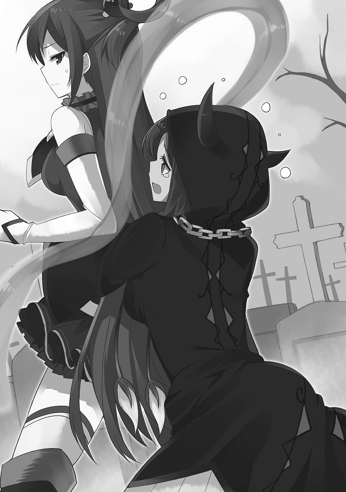
リッチー？ の取り巻きのアンデッド達は、そんな揉み合う二人を止めるでもなくボーッと眺めている。
……えーっと、どうしよう。
とりあえず、ゾンビメーカーではなさそうだが。
アクアは絡んでいる相手をリッチーだとか言い張っているが、何だかリッチーが、チンピラに因縁をつけられてるイジメられっ子にしか見えない。
「やめてー！ やめてー!! この魔法陣は、未だ成仏できない迷える魂達を、天に還してあげるための物です！ ほら、たくさんの魂達が魔法陣から空に昇って行くでしょう!?」
リッチーの言う通り、どこから集まってきたのか、青白い人魂の様な物がふよふよと魔法陣に入ると、そのまま魔法陣の青い光と共に、天へと吸い込まれていく。
「リッチーのくせに生意気よ！ そんな善行はアークプリーストのこの私がやるから、あんたは引っ込んでなさい！ 見てなさい、そんなちんたらやってないで、この共同墓地ごとまとめて浄化してあげるわ！」
「ええっ!? ちょ、やめっ!?」
アクアの宣言に、慌てるリッチー。
それに構いもせず、アクアは手を広げ、大声で叫ぶ。
「『ターンアンデッド』ー！」
墓場全体が、アクアを中心に白い光に包まれた。
アクアから湧き出すように溢れるその光は、リッチーの取り巻きのゾンビ達に触れるやいなや、ゾンビ達が搔き消える様にその存在を消失させる。
リッチーの作った魔法陣の上に集まっていた人魂も、アクアの放った光を浴びていなくなった。
その光はもちろんリッチーにも及び……。
「きゃー！ か、身体が消えるっ!? 止めて止めて、私の身体が無くなっちゃう!! 成仏しちゃうっ！」
「あはははははは、愚かなるリッチーよ！ 自然の摂理に反する存在、神の意に背くアンデッドよ！ さあ、私の力で欠片も残さず消滅するがいいわっ！」
「おい、やめてやれ」
アクアの背後に立っていた俺は、後頭部を剣の柄でごすっと小突いた。
「ッ!? い、痛、痛いじゃないの！ あんた何してくれてんのよいきなり！」
後頭部を強打され集中が途切れたのか、白い光を放つのをやめ、頭を押さえながら涙目で俺に食ってかかる。
ダクネスとめぐみんもやってきたところで、俺は摑みかかるアクアを無視し、震えながらうずくまるリッチーに声をかけた。
「お、おい大丈夫か？ えっと、リッチー……でいいのか？ あんた」
見ると、リッチーの足元は半透明になっていて、軽く消えかかっている。
やがて徐々に、半透明になっていた足がくっきり見えるまで戻り、涙目のリッチーはフラフラしながらも立ち上がった。
「だ、だ、だ、大丈夫です……。あ、危ないところを助けて頂き、ありがとうございました……っ！ えっと、おっしゃる通り、リッチーです。リッチーのウィズと申します」
言って目深に被っていたフードを上げると、現れたのは月明かりに照らされた二十歳くらいの人間にしか見えない、茶色い髪の美女だった。
リッチーってからには骸骨みたいなのを想像してたんだが。
ウィズは黒いローブに身を包み、さながら悪の魔法使いといった格好だ。
いや、リッチーなら悪の魔法使いでいいのか？
「えっと……。ウィズ？ あんた、こんな墓場で何してるんだ？ 魂を天に還すとか言ってたけど、アクアじゃないが、リッチーのあんたがやる事じゃないんじゃないのか？」
「ちょっとカズマ！ こんな腐ったみかんみたいなのと喋ったら、あなたまでアンデッドが移るわよ！ ちょっとそいつに、ターンアンデッドをかけさせなさい！」
俺の言葉にアクアがいきり立ち、ウィズに魔法をかけようとする。
ウィズが俺の背後に隠れ、怯えた様な困った様な顔をしながら、
「そ、その……。私は見ての通りのリッチー、ノーライフキングなんてやってます。アンデッドの王なんて呼ばれてるくらいですから、私には迷える魂達の話が聞けるんです。この共同墓地の魂の多くはお金が無いためロクに葬式すらしてもらえず、天に還る事なく毎晩墓場を彷徨っています。それで、一応はアンデッドの王な私としては、定期的にここを訪れ、天に還りたがっている子達を送ってあげているんです」
……ほろりときた。
いい人だ。
恐らく、店の店員とかを除き、俺がこの世界に来て初めて出会ったまともな人だ。
いや、人間ではないのだが。
「それは立派な事だし善い行いだとは思うんだが……。アクアじゃないが、そんな事はこの街のプリーストとかに任せておけばいいんじゃないか？」
俺の疑問に、ウィズが言いにくそうに憮然としたアクアをチラチラと気にしながら。
「そ、その……。この街のプリーストさん達は、拝金主義……いえその、お金が無い人達は後回し……と言いますか、その……、あの……」
アークプリーストのアクアがいるので言いにくいのだろう。
「つまり、この街のプリーストは金儲け優先の奴がほとんどで、こんな金の無い連中が埋葬されてる共同墓地なんて、供養どころか寄りつきもしないって事か？」
「え……、えと、そ、そうです……」
その場にいる全員の無言の視線がアクアに集まる中、当の本人はばつが悪そうにそっと目を逸らす。
「それならまあしょうがない。でも、ゾンビを呼び起こすのはどうにかならないか？ 俺達がここに来たのって、ゾンビメーカーを討伐してくれってクエストを受けたからなんだが」
俺の言葉に、ウィズは困った表情を浮かべ。
「あ……そうでしたか……。その、呼び起こしている訳じゃなく、私がここに来ると、まだ形が残っている死体は私の魔力に反応して勝手に目覚めちゃうんです。……その、私としてはこの墓場に埋葬される人達が、迷わず天に還ってくれれば、ここに来る理由も無くなるんですが……。…………えっと、どうしましょうか？」
９
墓場からの帰り道。
「納得いかないわ！」
アクアはまだ怒っていた。
時刻は、すでに空が白みがかってくる時間帯だ。
「しょうがないだろ。つか、あんな良い人討伐する気にはなれないだろうに」
俺達は、あのリッチーを見逃す事に決めた。
そして、これからは毎日暇を持て余しているアクアが、定期的にあの墓場に浄化しに行くという事で折り合いがついた。
そこは腐っても女神、アンデッドや迷える魂の浄化は自分の仕事だと理解しているらしい。
睡眠時間が減るとか駄々をこねていたが。
モンスターを見逃すという事に若干抵抗があっためぐみんとダクネスも、ウィズが今までに人を襲った事がないと知り、ウィズを見逃す事に同意してくれた。
俺は、ウィズに渡された一枚の紙切れを眺めながら呟く。
「しかし、リッチーが街で普通に生活してるとか、この街の警備はどうなってんだ」
それは、ウィズの住んでいる住所が書かれた紙。
あのリッチーは俺達が住む街で普通に生活しているらしい。
しかも小さなマジックアイテムの店を営んでいるそうな。
リッチーってダンジョンの奥深くにいるイメージがあったんだがと言ったら、生活が不便なダンジョンに、わざわざ住む必要性がありませんよと言われた。
いや、リッチーだって元は人間なのだから言ってる意味は分かる。
分かるんだが、この世界に来てから俺の持っていた異世界観がどんどん破壊されていってる。
こんなの、俺が期待してた異世界じゃない。
「でも、穏便に済んで良かったです。いくらアクアがいると言っても、相手はリッチー。もし戦闘になってたら私やカズマは間違いなく死んでいましたよ」
何気なく言うめぐみんの言葉にぎょっとする。
「げ、リッチーってそんなに危険なモンスターなのか？ ひょっとしてヤバかった？」
「ヤバいなんてものじゃないです。リッチーは強力な魔法防御、そして魔法の掛かった武器以外の攻撃の無効化。相手に触れるだけで様々な状態異常を引き起こし、その魔力や生命力を吸収する伝説級のアンデッドモンスター。むしろ、なぜあんな大物にアクアのターンアンデッドが効いたのかが不思議でならないです」
軽く失禁しそうになる。
そうだよな、アンデッドモンスターの元締めみたいなもんだしな。
リッチーのスキルを教えてくれるって言われたから喜んで名刺を貰ったのだが……、スキルを習いに行く時は必ずアクアを連れて行こう。
「カズマ、その貰った名刺、渡しなさいよ。ちょっとあの女より先に家に行って、家の周りに神聖な結界張って涙目にしてくるから」
「や、やめてやれよ……」
やっぱりアクアは連れて行かない方がいいかもな……。
俺がそんな事を考えていると、ダクネスがぽつりと言った。
「そういえば、ゾンビメーカー討伐のクエストはどうなるのだ？」
「「「あっ」」」
クエスト失敗。
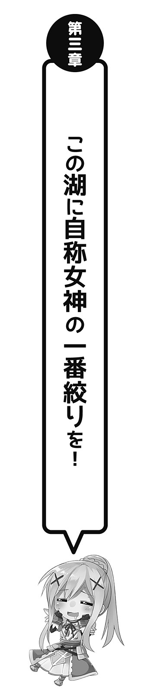
１
「知ってるか？ なんでも魔王軍の幹部の一人が、この街からちょっと登った丘にある、古い城を乗っ取ったらしいぜ」
ギルドに併設された酒場の一角。
俺は昼間から酒を飲んで駄弁っている、相席している男の話を聞いていた。
俺はと言えば酒ではなく、男と向かい合いながらネロイドのシャワシャワを飲んでいる。
ネロイドとは何か。
シャワシャワとは何なのか。
酒をあまり飲まない人達がよくコレを飲んでいるので、俺も興味本位で飲んでみたのだが……。
美味いのかと言われたらこう答えるしかない。
……うん、分からん。
だが、シャワシャワの意味は分かった。
飲んだ後シャワシャワする。
だが炭酸ではない。自分でも、シャワシャワするの意味が分からないのだが、これはシャワシャワとしか表現できない。
俺はネロイドを飲み干しテーブルに置き……。
「魔王の幹部ねぇ。物騒な話だけど、俺達には縁の無い話だよな」
「違えねえ」
目の前の男が、俺のやる気無い無責任な言葉に笑いながら同意した。
冒険者ギルドで駄弁っている連中は意外に多く、面白い話が色々聞ける。
どこそこで危険なモンスターを見かけたから、暫くはあの辺りでのクエストは受けない方がいいとか。
あのモンスターは、柑橘系の果物の汁を身体に付けておくと匂いを嫌って寄ってこないだとか。
と言うか、この世界に来てからは生きていくのに精一杯で、こういった情報収集はした事が無かった。
情報収集はゲームにおいて最も大事なフラグ回収作業だ。
酒場での、こういった会議はいかにも冒険者っぽくて心地よい。
向かいの冒険者の男が言った。
「ま、何にせよ。街の北の外れにある廃城には近づかない方がいい。王国の首都でもないこんな所に、何で魔王の大幹部様がやって来たのかは知らないがね。幹部ってからには、オーガロードやヴァンパイア。はたまた、アークデーモンかドラゴンか。いずれにしても、俺達が会ったら瞬殺される様な化け物が住んでるのは間違いない。廃城近くでのクエストは、しばらく避けた方が無難だな」
男に礼を言って席を立ち、俺は自分達のパーティーのテーブルへと向かうと……。
「……どうした？ 俺を、そんな変な目で見て」
アクアとダクネスとめぐみんが、テーブルの真ん中に置いた、コップにさした野菜スティックをぽりぽりかじり、俺を見ていた。
「別にー？ カズマが、他のパーティーに入ったりしないか心配なんてしてないし」
アクアが、言いながら、ちょっとだけ不安そうな目でチラチラ見てくる。
「……？ いや、情報収集は冒険の基本だろうが」
俺は三人のいるテーブル席に座り、俺も一本貰おうと、野菜スティックに手を伸ばす。
クイッ。
野菜スティックが俺の伸ばした手から逃れるように、ひょいと身をかわした。
……おい。
「何やってんのよカズマ」
アクアがテーブルをバンと叩くと、野菜スティックがビクリと跳ねる。
一瞬動かなくなった野菜スティックを、アクアが一本つまんで口に運ぶ。
「……むう。楽しそうですね。楽しそうでしたねカズマ。他のパーティーのメンバーと、随分親しげでしたね？」
めぐみんが、拳を握ってテーブルをドンと叩き、怯ませた野菜スティックをつまみ、口に運んだ。
「……何だこの新感覚は？ カズマが他所のパーティーで仲良くやっている姿を見ると、胸がもやもやする反面、何か、新たな快感が……。もしや、これが噂の寝取られ……？」
おかしな事を口走るどうしようもない変態が、コップのフチをピンと指で弾き、そのまま野菜スティックを指で摘まむ。
「なんだ、どうしたお前ら。こういった場所での情報収集は基本だろうが……？」
言いながら俺はバンとテーブルを叩くと、野菜スティックに手を……。
ヒョイッ。
「……………………だああああらっしゃああああああああ！」
「や、やめてええ！ 私の野菜スティックに何すんの！ た、食べ物を粗末にするのはいくない！」
俺は野菜スティックを摑み損ねた手で、今度はスティックが入ったコップごと摑むと、それを壁に叩きつけようと振りかぶるが、半泣きのアクアに手を摑まれる。
「野菜スティックごときに舐められてたまるか！ てゆーか今更突っ込むのもなんだが、何で野菜が逃げるんだよ。ちゃんと仕留めたやつを出せよ」
「なに言ってんの。お魚も野菜も、何だって新鮮な方が美味しいでしょ？ 活き作りって知らないの？」
こんな活き作りがあってたまるか。
俺は野菜スティックを食うのは諦め。
「はあ……。まあ、野菜は今はどうでもいい。それよりお前らに聞きたい事があるんだよ。レベルが上がったら、次はどんなスキルを覚えようかと思ってな。ハッキリ言ってバランスが悪すぎるからなこのパーティーは。自由の利く俺が穴を埋める感じで行きたいんだが……。そういや、お前らのスキルってどんな感じなんだ？」
そう、効率よくクエストをこなしていくなら、パーティーメンバーとの相性を考えたスキルを覚えていく方がいい。
そう思って相談を持ちかけた訳だが。
「私は《物理耐性》と《魔法耐性》、各種《状態異常耐性》で占めてるな。後はデコイという、囮になるスキルぐらいだ」
「……《両手剣》とか覚えて、武器の命中率を上げる気はないのか？」
「無い。私は言っては何だが、体力と筋力はある。攻撃が簡単に当たる様になってしまっては、無傷でモンスターを倒せる様になってしまう。かといって、手加減してわざと攻撃を受けるのは違うのだ。こう……、必死に剣を振るうが当たらず、力及ばず圧倒されてしまうというのが気持ちいい」
「もういい、お前は黙ってろ」
「……んん……っ！ 自分から聞いておいてこの仕打ち……」
頰を赤らめ、ハアハア言っているダクネスは放置する。
めぐみんを見ると、小首を傾げて口を開いた。
「私はもちろん爆裂系スキルです。爆裂魔法に爆発系魔法威力上昇、高速詠唱など。最高の爆裂魔法を放つためのスキル振りです。これまでも。もちろん、これからも」
「……どう間違っても、中級魔法スキルとかは取る気はないのか？」
「無いです」
こいつも駄目だ……。
「えっと、私は……」
「お前はいい」
「ええっ!?」
自分のスキルを言おうとしたアクアを黙らせる。
宴会芸とか宴会芸とか宴会芸とかそんなんだろう。
しかし…………。
「何でこう、まとまりが無いんだよこのパーティーは……。本当に移籍を……」
「「「!?」」」
俺の小さな呟きに、三人がビクリとした。
２
例の、緊急のキャベツ狩りクエストから数日が経過した。
あの時収穫したキャベツが軒並み売りに出され。
そして、冒険者達にはその報酬が支払われたのだが。
「カズマ、見てくれ。報酬が良かったから、修理を頼んでいた鎧を少し強化してみた。……どう思う？」
報酬を受け取ろうとする冒険者達によって酷い混雑のギルド内で、ダクネスが嬉々として修理から返ってきた鎧を見せつけてきた。
それは一言で言うと…………、
「なんか、成金趣味の貴族のボンボンが着けてる鎧みたい」
「……カズマはどんな時でも容赦ないな。私だって素直に褒めて貰いたい時もあるのだが」
ダクネスが、珍しくちょっとへこんだ顔で言ってくる。
知らんよそんなもん。
そんな事より。
「今はお前より酷いのがいるから、構ってやれる余裕はないぞ。お前を超えそうな勢いのそこの変態を何とかしろよ」
「ハア……ハア……。た、たまらない、たまらないです！ 魔力溢れるマナタイト製の杖のこの色艶……。ハア……ハア……ッ！」
めぐみんが、新調した杖を抱きかかえ頰ずりしていた。
マナタイトとかいう希少金属は、杖に混ぜると魔法の威力が向上する性質を持っているらしい。
高額な報酬で杖を強化し、めぐみんは朝からずっとこの調子だ。
何でも、爆裂魔法の威力がこれで何割か増すらしい。
ただでさえオーバーキル気味な爆裂魔法をこれ以上強化してどうするのか、そんな事よりもっと他に習得すべき便利な魔法があるんじゃないのか？ とか、言いたい事は色々あるが、今のめぐみんにはあまり関わりたくないので放っておく。
俺もすでに換金が終わってホクホクだ。
キャベツを追うモンスターを引きつけたダクネス。
それをまとめて粉砕しためぐみん。
そんな、皆の活躍を他所に、一人マイペースにキャベツを追いかけていたアクア。
キャベツ狩りで得た報酬は、均等に分けるのではなく、それぞれ自分で捕まえた分をそのまま報酬にしようという事になった。
それは、俺に次ぐ収穫量だったアクアが言い出した事だ。
そして今。その言い出しっぺの換金を待っているのだが……。
「なんですってえええええ!? ちょっとあんたどういう事よっ！」
ギルドに響き渡るアクアの声。
ああ……。嫌だなあ……。
ギルドの受付カウンターでは、案の定アクアが揉めていた。
ギルドの受付のお姉さんの胸ぐらを摑み、何やらいちゃもんつけている。
「何で五万ぽっちなのよ！ どれだけキャベツ捕まえたと思ってんの!? 十や二十じゃないはずよ！」
「そそ、それが、申し上げ難いのですが……」
「何よ！」
「……アクアさんの捕まえてきたのは、殆どがレタスで……」
「…………なんでレタスが交じってるのよー！」
「わ、私に言われましてもっ！」
会話のやり取りを聞くに、どうも報酬額が納得いくものではなかったらしい。
これ以上受付に言っても無駄だと踏んだのか、アクアが後ろに手を組み、にこやかな笑顔で俺に近づいてきた。
「カーズマさん！ 今回のクエストの、報酬はおいくら万円？」
「百万ちょい」
「「「ひゃっ!?」」」
アクアとダクネス、めぐみんが絶句する。
そう、俺は降って湧いた突発クエストで、いきなり小金持ちになりました。
俺の収穫した物は、質の良い、たくさんの経験値が詰まったキャベツが多かったそうだ。
これも幸運度の差というやつか。
「カズマ様ー！ 前から思ってたんだけれど、あなたってその、そこはかとなく良い感じよね！」
「特に褒める所が思い浮かばないなら無理すんな。言っとくが、この金はもう使い道決めてるからな、分けんぞ」
先手を打った俺の言葉にアクアの笑顔が凍りついた。
「カズマさあああああああん！ 私、クエスト報酬が相当な額になるって踏んで、この数日で、持ってたお金、全部使っちゃったんですけど！ ていうか、大金入ってくるって見込んで、ここの酒場に十万近いツケまであるんですけど!! 今回の報酬じゃ、足りないんですけど！」
半泣きですがりついてくるアクアを引き剝がし、何でこいつは後先考えないんだろうと、痛むこめかみを指で押さえた。
「知るか、そもそも今回の報酬は『それぞれが手に入れた報酬をそのままに』って言い出したのはお前だろ。と言うか、いい加減拠点を手に入れたいんだよ。いつまでも馬小屋暮らしじゃ落ち着かないだろ？」
通常、冒険者は家を持たない。
冒険者は安定を求めず、あちこちを飛び回る事が多いからだ。
まあ成功する冒険者など一握りで、ほとんどの冒険者は、その日暮らしが多く金が無いというのも理由の一つだが。
ぶっちゃけ、俺はこのメンツでの魔王討伐なんて無理だと諦めかけてる。
魔王軍と戦う仕事は、先にここに送り込まれた、強力な能力だの装備だのを貰った連中がやればいい。
なんせ、俺は誰にでもなれる初期職業、最弱職の冒険者だ。
しかも、子供の頃から冒険者を目指し鍛えていた様な連中に比べればステータスだって劣る、本当にどこにでもいる一般人だ。
適度に安全に、好奇心を満足させられる程度に冒険ができて、後はのんびりと暮らしていければそれでいい。
なので、ここらで一つ賃貸、もしくは安ければ、小さな小屋みたいな物件でも手に入らないかなと思った次第だ。
アクアがいよいよ泣きそうな顔ですがりつく。
「そんなあああああ！ カズマ、お願いよ、お金貸して！ ツケ払う分だけでいいからぁ！ そりゃあカズマも男の子だし、馬小屋でたまに夜中ゴソゴソしてるの知ってるから、早くプライベートな空間が欲しいのは分かるけど！ 五万！ 五万でいいの！ お願いよおおおおお！」
「よし分かった、五万でも十万でもお安いもんだ！ 分かったから黙ろうか!!」
３
「カズマ、早速討伐に行きましょう！ それも、沢山の雑魚モンスターがいるヤツです！ 新調した杖の威力を試すのです！」
突然、めぐみんがそんな事を言い出した。
ふむ。
「まあ俺も、ゾンビメーカー討伐じゃ、結局覚えたてのスキルを試す暇もなかったしな。安全で無難なクエストでもこなしにいくか」
「いいえ、お金になるクエストをやりましょう！ ツケを払ったから今日のご飯代も無いの！」
「いや、ここは強敵を狙うべきだ！ 一撃が重くて気持ちいい、凄く強いモンスターを……！」
まとまりが無いにも程があるだろう。
「とりあえず、掲示板の依頼を見てから決めようぜ」
俺の意見に、全員がゾロゾロと掲示板に移動する。
そして……。
「……あれ？ 何だこれ、依頼が殆ど無いじゃないか」
そう、普段は所狭しと大量に貼られている依頼の紙。
それが、今は数枚しか貼られていない。
しかも……。
「カズマ！ これだ、これにしようではないか！ 山に出没するブラックファングと呼ばれる巨大熊を……」
「却下だ却下！ おい、何だよこれ！ 高難易度のクエストしか残ってないぞ！」
そう、残されているのはどれもが、今の俺達には手に余るものばかり。
そんな俺達のもとに、ギルド職員がやって来た。
「ええと……申し訳ありません。最近、魔王の幹部らしき者が、街の近くの小城に住み着きまして……。その魔王の幹部の影響か、この近辺の弱いモンスターは隠れてしまい、仕事が激減しております。来月には、国の首都から幹部討伐のための騎士団が派遣されるので、それまでは、そこに残っている高難易度のお仕事しか……」
申し訳無さそうな職員の言葉に、文無しのアクアが悲鳴を上げた。
「な、なんでよおおおおおっ!?」
……コレばっかりは流石にアクアに同情した。
「全く……！ 何でこのタイミングで引っ越して来るのよ！ 幹部だか何だか知らないけど、もしアンデッドなら見てなさいよ！」
アクアが涙目で愚痴りながら、バイト雑誌をめくっていた。
他の冒険者達もみんな思いは同じなようで、やってられないとばかりに普段より多くの人間が、昼間から飲んだくれている。
魔王の幹部は、一体何の目的でこんな所に来たのやら。
ハッキリ言って、この街の冒険者達の実力は俺達とそれ程変わらない。
俺達より強い冒険者パーティーはもちろんたくさんあるだろうが、それにしたってたかが知れている。
ここは、駆け出し冒険者が最初に訪れる、初心者のための修行の街。
魔王の幹部なんて、ゲームで言えばラストの方で出てくるものだ。
カエル相手に苦戦する俺達が、どれだけ集まっても勝負にすらならないだろう。
４
「つまり、国の首都から腕利きの冒険者や騎士達がここに来る来月までは、まともな仕事ができないって事か」
「そういう事です。……となると、クエストの無い間はしばらく私に付き合って貰う事になりそうですが……」
俺はめぐみんと共に、街の外へと出ていた。
現在、街の近くには危険なモンスターはいない。
魔王の幹部の出現により、弱いモンスターは怯えて身を隠しているから。
俺は、クエストが請けられない事で爆裂魔法が撃てず、悶々としているめぐみんに付き合い、散歩していた。
こいつは、一日に一度、必ず爆裂魔法を放つ事を日課にしているらしい。
ひょっとして、俺はこれから毎日、来月までずっとこれに付き合わされるのだろうか？
めぐみんに一人で行けと突き放したら、帰りは一体誰がおぶって連れ帰ってくれるんですかと開き直られたのだが。
「もうその辺でいいだろ。適当に魔法撃って帰ろうぜ」
街からちょっと出た所で、俺はめぐみんに魔法を放つよう促した。
だがめぐみんが首を振る。
「駄目なのです。街から離れた所じゃないと、また守衛さんに叱られます」
「今お前、またって言ったな。音がうるさいとか迷惑だって怒られたのか」
俺の言葉にめぐみんがコクリと頷く。
しょうがない、丸腰でちょっと不安だが、どうせモンスターはいないのだ。
たまには遠出してみる事にした。
思えば、この世界に来てから、こうして外をぶらぶらする事はあまり無かった。
出歩くとしても、それはモンスター討伐のクエスト絡み。
こうして、のどかに散歩するなんて事は……。
「……？ あれは何でしょうか。廃城？」
遠く離れた丘の上。
そこに、ぽつんと佇む、朽ち果てた古い城。
それは、まるでお化け屋敷みたいな……。
「薄気味悪いなあ……。お化けでも住んでそうな……」
俺の呟きに、
「アレにしましょう！ あの廃城なら、盛大に破壊しても誰も文句は言わないでしょう」
そう言って、ウキウキと魔法の準備を始めるめぐみん。
心地よい風が吹く丘の上。
のどかな雰囲気には場違いな、爆裂魔法の詠唱が風に乗った……！
…………こうして、俺とめぐみんの新しい日課が始まった。
文無しのアクアは、毎日アルバイトに励んでいる。
ダクネスは、しばらくは実家で筋トレしてくると言っていた。
特にやる事のないめぐみんは、その廃城の傍へと毎日通い、爆裂魔法を放ち続けた。
それは、寒い氷雨が降る夕方。
それは、穏やかな食後の昼下がり。
それは、早朝の爽やかな散歩のついでに。
どんな時でもめぐみんは、毎日その廃城に魔法を放ち……。
めぐみんの傍で魔法を見続けていた俺は、その日の爆裂魔法の出来が分かるまでになっていた。
「『エクスプロージョン』ッッッ！」
「おっ、今日のは良い感じだな。爆裂の衝撃波が、ズンと骨身に浸透するかの如く響き、それでいて肌を撫でるかのように空気の振動が遅れてくる。相変わらず、不思議とあの廃城は無事な様だが、それでも。ナイス爆裂！」
「ナイス爆裂！ ふふっ、カズマも爆裂道が段々分かって来ましたね。今日の評価はなかなかに的を射ていて詩人でしたよ。……どうです？ カズマも、冗談ではなく、いっそ本当に爆裂魔法を覚える事を考えてみては」
「うーん、爆裂道も面白そうだがなぁ、今のパーティー編制だと魔法使いが二人ってのもな。でも冒険者稼業を引退する際には、余裕があったら最後に爆裂魔法を習得してみるのも面白そうだな」
俺とめぐみんは、そんな事を言いながら笑い合う。
今日の爆裂魔法の音は何点だった、いや、音量は小さかったが音色が良かった等、そんな事を語りながら。
５
日課の爆裂散歩を続け、一週間が経った、その日の朝。
『緊急！ 緊急！ 全冒険者の皆さんは、直ちに武装し、戦闘態勢で街の正門に集まってくださいっっ！』
街中に、お馴染みの緊急アナウンスが響き渡った。
そのアナウンスを聞いて、俺達もしっかりと装備を調え、現場へ向かう。
街の正門前に多くの冒険者が集まる中、そこに着いた俺達は、凄まじい威圧感を放つそのモンスターの前に、呆然と立ち尽くした。
デュラハン。
それは人に死の宣告を行い、絶望を与える首無し騎士。
アンデッドとなり、生前を凌駕する肉体と特殊能力を手に入れたモンスター。
正門前に立つ漆黒の鎧を着た騎士は、左脇に己の首を抱え、街中の冒険者達が見守る中、フルフェイスの兜で覆われた自分の首を目の前に差し出した。
差し出された首から、くぐもった声が放たれる。
「……俺は、つい先日、この近くの城に越してきた魔王軍の幹部の者だが……」
やがて、首がプルプルと小刻みに震え出し…………！
「まままま、毎日毎日毎日毎日っっ!! おお、俺の城に、毎日欠かさず爆裂魔法撃ち込んでく頭のおかしい大馬鹿は、誰だあああああああー!!」
魔王の幹部は、それはもうお怒りだった。
ずっと何かに耐えていたが、とうとう我慢できずに切れてしまったというようなデュラハンの叫びに、俺の周りの冒険者達がざわついた。
というか、その場のだれもが、一体何が起こっているのかの理解が追いついていない。
とりあえず、俺達が急に呼び出されたのは、目の前にいる怒り狂ったデュラハンが原因のようだった。
「……爆裂魔法？」
「爆裂魔法を使える奴って言ったら……」
「爆裂魔法って言ったら……」
俺の隣に立つめぐみんへ、自然と周りの視線が集まった。
……周囲の視線を寄せられためぐみんは、フイッと自分の隣にいた魔法使いの女の子を見る。
それに釣られて俺もその子を見ると、周りのみんなも同じく釣られ、その子に視線を……。
「ええっ!? あ、あたしっ!? なんであたしが見られてんのっ!? 爆裂魔法なんて使えないよっ！」
突然濡れ衣をなすりつけられ、慌てる魔法使いの女の子。
……って、もしかして。……毎日魔法ぶっ放してたあの廃城！
あれは……。
俺は隣をチラッと見ると、めぐみんが冷や汗を垂らしていた。
どうやらこいつも気づいたようだ。
やがてめぐみんがため息を吐き、嫌そうな顔で前に出た。
それに伴い、冒険者達がデュラハンへの道を空けてくれる。
街の正門の前に佇むデュラハン。
そのデュラハンから十メートルほど離れた場所にめぐみんが対峙した。
俺をはじめ、ダクネスやアクアもめぐみんの後につき従う。
アンデッドを見つけると、まるで親の敵のように襲いかかったアクアも、これほどまでに怒り狂うデュラハンは珍しいのか、興味津々で事の成り行きを見守っていた。
「お前が……！ お前が、毎日毎日俺の城に爆裂魔法ぶち込んで行く大馬鹿者か！ 俺が魔王軍幹部だと知っていて喧嘩を売っているなら、堂々と城に攻めてくるがいい！ その気が無いのなら、街で震えているがいい！ 何故こんな陰湿な嫌がらせをする!? この街には低レベルの冒険者しかいない事は知っている！ どうせ雑魚しかいない街だと放置しておれば、調子に乗って毎日毎日ポンポンポンポン撃ち込みにきおって……っ!! 頭おかしいんじゃないのか、貴様っ！」
連日の爆裂魔法がよほど応えたのか、デュラハンの兜が激しい怒りでプルプルと震えた。
流石に気圧され、めぐみんは若干怯むも、肩のマントをバサッとひるがえし……！
「我が名はめぐみん。アークウィザードにして、爆裂魔法を操る者……！」
「……めぐみんって何だ。バカにしてんのか？」
「ちっ、違わい！」
名乗りを受けたデュラハンに突っこまれるが、めぐみんは気を取り直すと。
「我は紅魔族の者にして、この街随一の魔法使い。我が爆裂魔法を放ち続けていたのは、魔王軍幹部のあなたをおびき出すための作戦……！ こうしてまんまとこの街に、一人で出て来たのが運の尽きです！」
ノリノリでデュラハンに杖を突きつけるめぐみんを後ろで見守りながら、俺はダクネスとアクアにぼそぼそと囁いた。
「……おい、あいつあんな事言ってるぞ。毎日爆裂魔法撃たなきゃ死ぬとか駄々こねるから、仕方なくあの城の近くまで連れてってやったのに。いつの間に作戦になったんだ」
「……うむ、しかもさらっと、この街随一の魔法使いとか言い張っているな」
「しーっ！ そこは黙っておいてあげなさいよ！ 今日はまだ爆裂魔法使ってないし、後ろにたくさんの冒険者が控えてるから強気なのよ。今良いところなんだから、このまま見守るのよ！」
俺達の囁きが聞こえていたのか、片手で杖を突きつけたポーズのまま、めぐみんの顔がほんのりと赤くなる。
デュラハンはと言えば、なぜか、勝手に納得したような雰囲気だ。
「……ほう、紅魔の者か。なるほど、なるほど。そのいかれた名前は、別に俺をバカにしていた訳ではなかったのだな」
「おい、両親からもらった私の名に文句があるなら聞こうじゃないか」
デュラハンの言葉にヒートアップするめぐみんだが、当の相手はどこ吹く風だ。
と言うか、街中の冒険者の大群を見ても、気にする素振りも見せていない。
流石魔王の幹部、俺達みたいなひよっ子など眼中に無いのだろう。
「……フン、まあいい。俺はお前ら雑魚にちょっかいかけにこの地に来た訳ではない。この地には、ある調査に来たのだ。しばらくはあの城に滞在する事になるだろうが、これからは爆裂魔法は使うな。いいな？」
「それは、私に死ねと言っているも同然なのですが。紅魔族は日に一度、爆裂魔法を撃たないと死ぬんです」
「お、おい、聞いた事ないぞそんな事！ 適当な噓をつくな！」
どうしよう、もう少しめぐみんとあのモンスターのやり取りを見守りたい気分になってきた。
見ればアクアも、めぐみんがデュラハンに嚙みついているのをワクワクして眺めている。
デュラハンは右手の上に首を載せ、そのまま器用に、やれやれと肩をすくめて見せた。
「どうあっても、爆裂魔法を撃つのを止める気は無いと？ 俺は魔に身を落とした者ではあるが、元は騎士だ。弱者を刈り取る趣味は無い。だが、これ以上城の近辺であの迷惑行為をするのなら、こちらにも考えがあるぞ？」
剣吞な気配を漂わせてきたデュラハンに、めぐみんがビクリと後ずさった。
だがめぐみんは、不敵な笑みを浮かべると……！
「迷惑なのは私達の方です！ あなたがあの城に居座っているせいで、私達は仕事もろくにできないんですよ！ ……フッ、余裕ぶっていられるのも今の内です。こちらには、対アンデッドのスペシャリストがいるのですから！ 先生、お願いします！」
盛大な啖呵を切った後、めぐみんはアクアに丸投げした。
…………おい。
「しょうがないわねー！ 魔王の幹部だか知らないけれど、この私がいる時に来るとは運が悪かったわね。アンデッドのくせに、力が弱まるこんな明るい内に外に出て来ちゃうなんて、浄化して下さいって言ってるようなものだわ！ あんたのせいでまともなクエストが請けられないのよ！ さあ、覚悟はいいかしらっ!?」
先生呼ばわりされたアクアは、満更でも無さそうにデュラハンの前に出た。
固唾を吞んで成り行きを見守る冒険者達の視線を浴びながら、アクアがデュラハンに片手を突き出す。
それを見たデュラハンは、興味深そうに自分の首をアクアに向かって前に出した。
これがデュラハンなりの、マジマジと見る行為になるのだろう。
「ほう、これはこれは。プリーストではなくアークプリーストか？ この俺は仮にも魔王軍の幹部の一人。こんな街にいる低レベルのアークプリーストに浄化されるほど落ちぶれてはいないし、アークプリースト対策はできているのだが……。そうだな、ここは一つ、紅魔の娘を苦しませてやろうかっ！」
デュラハンは、アクアが魔法を唱えようとするよりも早く、左手の人差し指をめぐみんへと突き出した。
そしてデュラハンはすかさず叫ぶ！
「汝に死の宣告を！ お前は一週間後に死ぬだろう!!」
デュラハンが呪いを掛けるのと、ダクネスがめぐみんの襟首を摑み、自分の後ろに隠したのは同時だった。
「なっ!? ダ、ダクネス!?」
めぐみんが叫ぶ中、ダクネスの身体がほんのりと、一瞬だけ黒く光る。
くそっ、やられた、死の宣告か！
「ダクネス、大丈夫か!? 痛い所とかは無いか？」
俺が慌てて聞くも、ダクネスは自分の両手を確認するかの様にワキワキと何度か握り。
「……ふむ、なんとも無いのだが」
いたって平気そうに言ってのけた。
だが、デュラハンは確かに叫んだ。
一週間後に死ぬ、と。
呪いを掛けられたダクネスをアクアがぺたぺたと触る中、デュラハンは勝ち誇った様に宣言する。
「その呪いは今はなんとも無い。若干予定が狂ったが、仲間同士の結束が固い貴様ら冒険者には、むしろこちらの方が応えそうだな。……よいか、紅魔族の娘よ。このままではそのクルセイダーは一週間後に死ぬ。ククッ、お前の大切な仲間は、それまで死の恐怖に怯え、苦しむ事となるのだ……。そう、貴様の行いのせいでな！ これより一週間、仲間の苦しむ様を見て、自らの行いを悔いるがいい。クハハハッ、素直に俺の言う事を聞いておけばよかったのだ！」
デュラハンの言葉にめぐみんが青ざめる中、ダクネスが戦き叫んだ。
「な、なんて事だ！ つまり貴様は、この私に死の呪いを掛け、呪いを解いて欲しくば俺の言う事を聞けと！ つまりはそういう事なのか！」
「えっ」
ダクネスが何を言ったのか理解できなかったデュラハンが、素で返した。
俺も、同じく何を言っているのか理解ができない。……したくない。
「くっ……！ 呪いぐらいではこの私は屈しはしない……！ 屈しはしないが……っ！ ど、どうしようカズマ！ 見るがいい、あのデュラハンの兜の下のいやらしい目を！ あれは私をこのまま城へと連れて帰り、呪いを解いて欲しくば黙って言う事を聞けと、凄まじいハードコア変態プレイを要求する変質者の目だっ！」
大衆の前で、突然変質者呼ばわりされた可哀想なデュラハンは、ぽつりと言った。
「……えっ」
気の毒に。
「この私の体は好きにできても、心までは自由にできるとは思うなよ！ 城に囚われ、魔王の手先に理不尽な要求をされる女騎士とかっ！ ああ、どうしよう、どうしようカズマっ!! 予想外に燃えるシチュエーションだ！ 行きたくはない、行きたくはないが仕方がない！ ギリギリまで抵抗してみるから邪魔はしないでくれ！ では、行ってくる！」
「ええっ!?」
「止めろ、行くな！ デュラハンの人が困ってるだろ！」
ノコノコと敵に付いて行こうとするダクネスを羽交い締めにして引き止めると、デュラハンがほっとしている姿が見えた。
「と、とにかく！ これに懲りたら俺の城に爆裂魔法を放つのは止めろ！ そして、紅魔族の娘よ！ そこのクルセイダーの呪いを解いて欲しくば、俺の城に来るがいい！ 城の最上階の俺の部屋まで来る事ができたなら、その呪いを解いてやろう！ ……だが、城には俺の配下のアンデッドナイト達がひしめいている。ひよっ子冒険者のお前達に、果たして俺の所まで辿り着く事ができるかな？ クククククッ、クハハハハハハッ！」
デュラハンはそう宣言すると、哄笑しながら、街の外に停めていた首の無い馬に乗り、そのまま城へと去って行った……。
６
あまりと言えばあんまりな展開に、集められた冒険者達は呆然と立ち尽くしていた。
それは、俺も同じ事だ。
俺の隣では、めぐみんが青い顔でわなわなと震え、杖をぎゅっと握り直す。
そして、一人で街の外へ出て行こうとする。
「おい、どこ行く気だ。何しようって言うんだよ」
俺がめぐみんのマントを引っ張ると、めぐみんは足に力を込めて抵抗しながら、こちらを振り向きもせずに言ってくる。
「今回の事は私の責任です。ちょっと城まで行って、あのデュラハンに直接爆裂魔法ぶち込んで、ダクネスの呪いを解かせてきます」
めぐみん一人で行ったところで、どうなるもんでもないだろうに。
……と言うか。
「俺も行くに決まってるだろうが。お前一人じゃ、雑魚相手に魔法を使ってそれで終わっちゃうだろ。そもそも、俺も毎回一緒に行きながら、幹部の城だって気づかなかったマヌケだしな」
俺の言葉にしばらく渋い表情を浮かべていためぐみんは、やがて諦めた様に肩を落とした。
「……じゃあ、一緒に行きますか。でも相手はアンデッドナイトがひしめいているらしいです。となると、武器は効きにくいですね。私の魔法の方が効果的なはずです。……なので、こんな時こそ私を頼りにしてくださいね」
言って、めぐみんは微かに笑みを浮かべた。
アンデッドナイトって言うからには、鎧を着た相手なのだろう。
そんなのが相手では、安物の剣しか持たない俺は途端に無力になる。
だが、それならそれで考えがあった。
「俺の敵感知スキルで城内のモンスターを索敵しながら、潜伏スキルで隠れつつ、こそこそ行こう。もしくは、毎日城に通って一階から順に、爆裂魔法で敵を倒して帰還。毎日地道に敵を削っていく。……一週間の期限があるなら、そんな作戦でいってもいい」
俺の提案に少しは希望が持てたのか、めぐみんが明るい表情で頷いた。
俺とめぐみんはダクネスの方を振り返ると。
「おいダクネス！ 呪いは絶対に何とかしてやるからな！ だから、安心……」
「『セイクリッド・ブレイクスペル』！」
ダクネスを元気付けようと、俺が声を掛ける最中。
それを遮る形でアクアが唱えた魔法を受けて、ダクネスの体が淡く光った。
そして、どことなく残念そうな、しょんぼりとしたダクネスとは対照的に、アクアが嬉々として言ってきた。
「この私にかかれば、デュラハンの呪いの解除なんて楽勝よ！ どう、どう？ 私だって、たまにはプリーストっぽいでしょう？」
「「……えっ」」
……勝手に盛り上がっていた、俺とめぐみんのやる気を返せ。
７
魔王の幹部襲撃事件から何事も無く一週間が経ったある日の事。
「クエストよ！ キツくてもいいから、クエストを請けましょう！」
「「えー……」」
突然そんな事を言い出したアクアに、俺とめぐみんの不満の声が同時に漏れた。
アクアを除いて、俺達の懐は潤っている。
高難易度なクエストしか無い今、わざわざ仕事をしたいとは思わない。
「私は構わないが。……だが、アクアと私では火力不足だろう……」
ダクネスがちらちらと俺とめぐみんの方を見る。
そんな目で見られても、俺とめぐみんは無理して危険なクエストを受ける必要性が無い。
乗り気じゃない俺達を見て、いよいよアクアが泣き出した。
「お、お願いよおおおおおお！ もうバイトばかりするのは嫌なのよお！ コロッケが売れ残ると店長が怒るの！ 頑張るから！ 今回は、私、全力で頑張るからあぁっ!!」
俺とめぐみんは顔を見合わせる。
「しょうがねえなあ……。じゃあ、ちょっと良さそうだと思うクエスト見つけて来いよ。悪くないのがあったら付いてってやるから」
その言葉に、アクアは嬉々としてクエスト掲示板へと駆け出す。
「……クエスト、一応カズマも見てきてくれませんか？ アクアに任せておくと、とんでもないの持ってきそうで……」
「……だな。まあ私は別に、無茶なクエストでも文句は言わないが……」
めぐみんとダクネスの意見を聞いて、俺もなんだか嫌な予感がしてきた。
クエストが張り出されている掲示板へ行くと、何やら難しい顔で請け負うクエストを吟味しているアクアの後ろに立つ。
アクアは背後に立つ俺に気づかず、真剣な顔でクエストを選んでいる。
やがて、一枚の紙を掲示板から剝がし、手に取った。
「……よし」
「よしじゃねえ！ お前、何請けようとしてんだよっ!!」
俺はアクアの持っていた依頼書を取り上げた。
『──マンティコアとグリフォンの討伐──マンティコアとグリフォンが縄張り争いをしている場所があります。放っておくと大変危険なので、二匹まとめて討伐してください。報酬は五十万エリス』
「アホか！」
俺は叫ぶと、張り紙を元の場所に貼り直した。
見に来て正解だった。危うくとんでもないクエストに巻き込まれるところだった。
「何よもう、二匹まとまってるとこにめぐみんが爆裂魔法食らわせれば一撃じゃないの。ったくしょうがないわねー……」
こいつは、その危険な魔獣を都合よく二匹まとめる作戦については、どうせ俺に丸投げする気なのだろう。
いっそこのクエストを請けて、一人で送り出してしまおうかと悩む俺に、アクアが興奮しながら服の袖を引っ張ってきた。
「ちょっと、これこれ！ これ、見なさいよっ!!」
言われて、アクアが指差す依頼書を見る。
『──湖の浄化──街の水源の一つの、湖の水質が悪くなり、ブルータルアリゲーターが住みつき始めたので水の浄化を依頼したい。湖の浄化ができればモンスターは生息地を他に移すため、モンスター討伐はしなくてもいい。※要浄化魔法習得済みのプリースト。報酬は三十万エリス』
「……お前、水の浄化なんてできるのか？」
俺の疑問にアクアがふっと鼻で笑う。
「バカね、私をだれだと思ってるの？ と言うか、名前や外見のイメージで、私が何を司る女神かぐらい分かるでしょう？」
「宴会の神様だろ？」
「違うわよヒキニート！ 水よ！ この美しい水色の瞳とこの髪が見えないのっ!?」
なるほど。
水の浄化だけで三十万か、確かに美味しいな。
討伐をしなくていいってとこがポイント高い。
「じゃあそれを請けろよ。ていうか、浄化だけならお前一人でもいいんじゃないか？ そうすれば報酬は独り占めできるだろ？」
だが、そんな俺の言葉にアクアが渋る。
「え、ええー……。多分、湖を浄化してるとモンスターが邪魔しに寄ってくるわよ？ 私が浄化を終えるまで、モンスターから守って欲しいんですけど」
そういう事か。
しかし、ブルータルアリゲーターって、名前から察するにワニ系のモンスターだろ？
凄く危険そうなんだが……。
「ちなみに浄化ってどれぐらいで終わるんだ？ 五分くらい？」
短時間で終わるなら、めぐみんの爆裂魔法で何とかなるだろう。
アクアが小首を傾げながら言った。
「……半日ぐらい？」
「長えよ！」
名前からして危なそうなモンスター相手に、半日も防衛なんかしてられるか。
俺は張り紙を元に戻そうと……。
「ああっ！ お願い、お願いよおおっ！ 他にはろくなクエストが無いの！ 協力してよカズマさーん！」
掲示板に紙を貼り直そうとする俺の、右腕にすがって泣きつくアクアに、俺はふと思いついた。
「……なあ、浄化ってどうやってやるんだ？」
「……へ？ 水の浄化は、私が水に手を触れて浄化魔法でもかけ続けてやればいいんだけど……」
なるほど、水に触れなきゃいけないのか。
ちょっと思いついた事があったんだが、それじゃ……。
……いや、待てよ？
「おいアクア。多分、安全に浄化ができる手があるんだが、お前、やってみるか？」
８
街から少し離れた所にある大きな湖。
街の水源の一つとされているその湖からは小さな川が流れており、それが街へと繫がっている。
湖のすぐ傍には山があり、そこから絶えず湖へと水が流れ込んでいた。
なるほど。
依頼にあった通り、湖の水は何だか濁り、淀んでいた。
モンスターも清潔な水を好むものかと思っていたが、違うのか。
俺が湖を眺めていると、背後からおずおずと声がかけられる。
「……ねえ……。本当にやるの？」
それは凄く不安気なアクアの声。
俺の考えた隙の無い作戦の、一体何が不安なのか。
アクアが言った。
「……私、今から売られていく、捕まった希少モンスターの気分なんですけど……」
……希少なモンスターを閉じ込めておく、鋼鉄製のオリの中央で、体育座りをしながら。
オリに入れたアクアを運び、そのまま湖に投入するのだ。
最初は湖の近くで安全なオリの中から浄化魔法をかけさせようと思ったのだが、浄化魔法は水に触れていないと使えないそうなのでこの作戦になった。
水の女神であるアクアは、水に浸かるどころか、湖の底に一日沈められても、呼吸にも困らず、不快を感じる事も無いらしい。
そして本人いわく、浄化魔法を使わなくてもアクア自身が湖に浸かっていれば、それだけでも浄化効果があるそうな。
それほど神聖な存在だという事なのだろう。さすがは一応、腐っても女神だ。
アクアが入ったオリは、俺とダクネスの二人がかりで湖に運んだ。
鋼鉄製のオリは、ギルドに常備されていた物を借りてきた。
クエストの中にはモンスターの捕獲依頼もあるので、そういった時用の物らしい。
別に、使えない女神を湖に投棄しに来た訳ではないので、遠くに持っていく必要は無い。
湖の際に、アクアがちょっと浸かる程度にオリを置いておけばいいのだ。
これなら湖の浄化中にブルータルアリゲーターが襲ってきても大丈夫だろう。
なにせ、捕獲したモンスターの運搬用に使われるオリだ、中のアクアに攻撃が届くとは思えない。
ギルド職員の話では、浄化が終わればモンスターは湖から離れて行くと言っていたが、万一アクアの傍から離れなかった時に備え、オリには頑丈な鎖を付けていた。
鋼鉄製のオリは重量があるので、湖までは街で借りた馬に引かせながら運んできた。
緊急の際には、借りてきた馬に、鎖でオリを引っ張らせて逃げる予定だ。
アクアを入れたオリは湖の際に沈められ、体育座りのアクアは足の先と尻の部分を湖に浸からせていた。
後はこのまま、俺達三人は離れた所で待つだけだ。
アクアが、膝を抱えながらぽつりと呟く。
「……私、ダシを取られてる紅茶のティーバッグの気分なんですけど……」
９
浄化装置改め、アクアを湖の際に設置して、二時間が経過。
だが、未だにモンスターが襲ってくる気配は無い。
俺とダクネスとめぐみんは、アクアから二十メートルほど離れた陸地でアクアの様子を見守っていた。
水に浸かりっぱなしのアクアに声を掛ける。
「おーいアクア！ 浄化の方はどんなもんだ？ 湖に浸かりっぱなしだと冷えるだろ。トイレ行きたくなったら言えよ？ オリから出してやるからー！」
遠くから叫ぶ俺に、アクアが叫び返した。
「浄化の方は順調よ！ 後、トイレはいいわよ！ アークプリーストはトイレなんて行かないし!!」
昔のアイドルみたいな事を言うアクア。
水に浸けっぱなしで大丈夫かと心配したが、まだまだ余裕はありそうだ。
「何だか大丈夫そうですね。ちなみに、紅魔族もトイレなんて行きませんから」
めぐみんが聞いてもいないのにそんな事を言ってくる。
お前もアクアも普段モリモリ食ったり飲んだりしてるが、それはどこに消えているんだとツッコみたい。
「私もクルセイダーだから、トイレは……トイレは……。……うう……」
「ダクネス、この二人に対抗するな。トイレに行かないって言い張るめぐみんとアクアの二人は、今度、日帰りじゃ終わらないクエストを請けて、本当にトイレに行かないかを確認してやる」
「や、止めてください。紅魔族はトイレなんて行きませんよ？ でも謝るので止めてください。……しかし。ブルータルアリゲーター、来ませんね。このまま何事もなく終わってくれればいいのですが」
めぐみんがフラグとしか思えない様な事を言った。
そして、それをきっかけにでもするかの様に、湖の一部に小波が走る。
大きさ的には地球の平均的なワニと比較しても、あまり変わらないだろう。
だが、そこはやはりモンスター。地球のワニとは一味違った。
「カ、カズマー！ なんか来た！ ねえ、なんかいっぱい来たわ！」
この世界のワニ達は、群れで行動する様だ。
──浄化を始めてから四時間が経過──
最初は、水に浸かって女神の身体に備わった浄化能力だけを使っていたアクアだったが、早く浄化を終わらせて帰りたいのか、今は一心不乱に浄化魔法も唱えまくっている。
「『ピュリフィケーション』！ 『ピュリフィケーション』！ 『ピュリフィケーション』ッッ！」
アクアが入っている鋼鉄製のオリを大量のワニ達が囲み、オリをガジガジと齧っている。
「『ピュリフィケーション』！ 『ピュリフィケーション』ッッ！ ギシギシいってる！ ミシミシいってる！ オリが、オリが変な音立ててるんですけど！」
オリの中で喚くアクアだが、この状況では爆裂魔法でぶっ飛ばす訳にもいかず、俺達にはちょっとどうしようもない。
「アクアー！ ギブアップなら、そう言えよー！ そしたら鎖引っ張ってオリごと引きずって逃げてやるからー！」
先ほどからオリに向かって叫ぶのだが、アクアは怯えながらも頑なにクエストのリタイアを拒んでいた。
「イ、イヤよ！ ここで諦めちゃ今までの時間が無駄になるし、何より報酬が貰えないじゃないのよ！ 『ピュリフィケーション』！ 『ピュリフィケーション』ッッ!! ……わ、わああああーっ！ メキッていった！ 今オリから、鳴っちゃいけない音が鳴った!!」
わあわあと泣き叫んでいるアクアを取り囲むブルータルアリゲーター達は、俺達三人には見向きもしない。
それを見て、ダクネスが呟く。
「……あのオリの中、ちょっとだけ楽しそうだな……」
「……行くなよ？」
──浄化を始めてから七時間が経過──
湖の際には、ボロボロになったオリがぽつんと取り残されていた。
ブルータルアリゲーターに齧られたオリは、所々にワニの歯型が残されている。
浄化が完了したからか、ブルータルアリゲーター達はオリから離れ、山へと向かって泳いで行ってしまった。
もうアクアの浄化魔法の声は聞こえてこない。
というか、一時間ほど前から、アリゲーターにたかられていたアクアの声が聞こえなくなっている。
「……おいアクア、無事か？ ブルータルアリゲーター達は、もう全部、どこかに行ったぞ」
俺達はオリへ近づき、オリの中のアクアを窺った。
「……ぐす……ひっく……えっく……」
膝を抱えて泣くぐらいなら、とっととクエストをリタイアすればいいのに……。
まあこの状況では無理もないか。
「ほら、浄化が終わったのなら帰るぞ。ダクネスとめぐみんで話し合ったんだが、俺達は今回、報酬はいらないから。報酬の三十万、お前が全部持っていけ」
体育座り状態で膝に顔を埋めたアクアの肩がぴくりと動く。
だが、オリから出てくる気配はない。
「……おい、いい加減オリから出ろよ。もうアリゲーターはいないから」
俺の言葉に、アクアが小さな声で呟くのが聞こえた。
「……まま連れてって……」
…………？
「なんだって？」
「……オリの外の世界は怖いから、このまま街まで連れてって」
……どうやら、今回のクエストは、カエル討伐に続いてアクアにまたトラウマを植えつけた様だ。
10
「ドナドナドーナードーナー……」
「……お、おいアクア、もう街中なんだからその歌は止めてくれ。ボロボロのオリに入って膝抱えた女を運んでる時点で、ただでさえ街の住人の注目を集めてるんだからな？ というか、もう安全な街の中なんだから、いい加減出て来いよ」
「嫌。この中こそが私の聖域よ。外の世界は怖いからしばらく出ないわ」
すっかりオリの中に引き篭もってしまったアクアを、馬で引きながら。
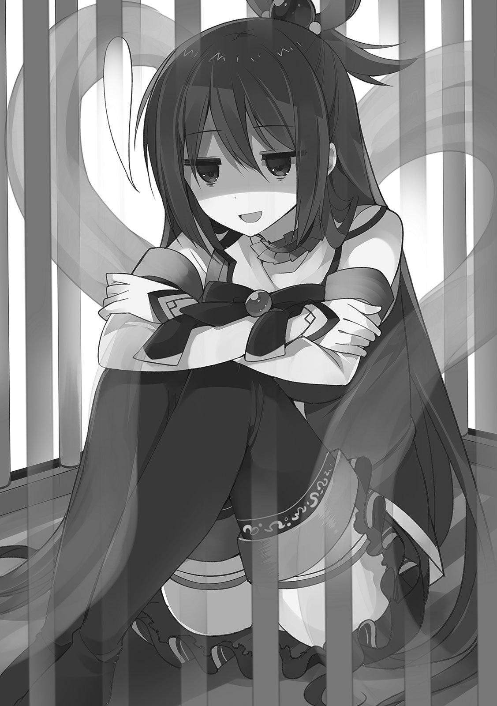
無事にクエストを終えて街に帰って来た俺達は、街の人達の生温かい注目を集めつつ、ギルドへと向かっていた。
頑なにオリから出ようとしないアクアが自分の足で歩いてくれないせいで、馬にオリを引かせているにもかかわらず俺達の歩みは遅い。
しかし、今回は約一名にトラウマはできたが、それ以外には被害らしい被害は無い。
装備や魔法を試したかったが、楽にクエストが済んだのだから、そちらの方がいいに決まっている。
俺達にしては珍しく、大した事も無くクエストが無事済んだなあ……。
俺が、そんなフラグになる様な事を考えてしまったからだろうか。
「め、女神様っ!? 女神様じゃないですかっ！ 何をしているのですか、そんな所で！」
突然叫んで、オリに引き篭もっているアクアに駆け寄り、鉄格子を摑む男。
そいつはあろう事か、ブルータルアリゲーターが齧りついても破壊できなかったオリの鉄格子を、いとも容易くグニャリと捻じ曲げ、中のアクアに手を差し伸べた。
啞然としている俺とめぐみんを尻目に、その見知らぬ男は、同じく啞然としているアクアの手を……、
「……おい、私の仲間に馴れ馴れしく触るな。貴様、何者だ？ 知り合いにしては、アクアがお前に反応していないのだが」
手を取ろうとしたその男にダクネスが詰め寄った。
アリゲーターにたかられるアクアを羨ましそうに見ていた先ほどとは違い、今のダクネスは大切な仲間を守る盾として、どこに出しても恥ずかしくないクルセイダーだ。
……いつもこんな感じでいてくれたなら……。
男はダクネスを一瞥すると、ため息を吐きながら首を振る。
いかにも、自分は厄介事に巻き込まれたくは無いのだけど仕方がない、といった感じで。
男のその態度に、普段はあまり表情をあらわにしないダクネスが、明らかにイラッとした。
何だかきな臭い雰囲気になってきたので、俺はこの期に及んでも膝を抱えてオリから出ようとしないアクアに、そっと耳打ちする。
「……おい、あれお前の知り合いなんだろ？ 女神様とか言ってたし。お前があの男を何とかしろよ」
そんな俺の囁きに、アクアは一瞬だけ、なに言ってんの？ という表情を浮かべ……。
「……ああっ！ 女神！ そう、そうよ、女神よ私は。それで？ 女神の私にこの状況をどうにかして欲しいわけね？ しょうがないわね！」
アクアはようやくオリから出てきた。
こいつ、自分が女神だという事を、本気で忘れていたんじゃないだろうな。
もぞもぞとオリから出てきたアクアは、その男に対して首を傾げる。
「……あんた誰？」
知り合いじゃないのかよ。
……いや、やはり知り合いの様だ。
男が、驚きの表情で目を見開いているから。
多分、アクアが忘れているだけなのだろう。
「何言ってるんですか女神様！ 僕です、御剣響夜ですよ！ あなたに、魔剣グラムを頂いた!!」
「…………？」
アクアがなおも首を傾げているが、俺はピンときた。
アニメや漫画の主要キャラみたいな名前だが、その日本人名からして、俺より先にアクアに強力な装備を貰い、ここに送られた奴なのだろう。
正義感が強そうなその男は、茶色い髪をした、かなりのイケメンだ。
鮮やかに青く輝く高そうな鎧を身に着け、腰には、黒鞘に入った剣を下げていた。
そして後ろには、槍を持った戦士風の美少女と、革鎧を着て、腰にダガーをぶら下げた美少女を引き連れている。
ミツルギと名乗ったそいつは、年は俺と同じくらいだろうか？
その男は一言で言ってしまえば……。
漫画の主人公っぽい奴だった。
「ああっ！ いたわね、そういえばそんな人も！ ごめんね、すっかり忘れてたわ。だって結構な数の人を送ったし、忘れてたってしょうがないわよね！」
俺やミツルギの説明で、ようやく思い出したアクア。
若干表情を引きつらせながらも、ミツルギはアクアに笑いかけた。
「ええっと、お久しぶりですアクア様。あなたに選ばれた勇者として、日々頑張ってますよ。職業はソードマスター。レベルは37にまで上がりました。……ところで、アクア様はなぜここに？ というか、どうしてオリの中に閉じ込められていたんですか？」
ミツルギは、チラチラと俺を見ながら言ってくる。
アクアはこいつに、お前は選ばれた者にして勇者だとか、そんな適当な事を言ってこの世界に送り込んだのか。
今の今まで存在を忘れていたところが、いかにミツルギにいい加減な事を言っていたのかが良く分かる。
というか、ミツルギには俺がアクアをオリに閉じ込めていた様に映ったのか？
……いや、普通はそう取るな。
本人がオリの中から出たがらないんですと言っても、きっとこいつは信じてくれないだろう。
俺だって、そんな変わり者の女神がいる事を、この目で見ていても信じられないのだ。
俺は、自分と一緒にアクアがこの世界に来る事になった経緯や、今までの出来事をミツルギに説明し……。
「……バカな。ありえないそんな事！ 君は一体何考えているんですか!? 女神様をこの世界に引き込んで!? しかも、今回のクエストではオリに閉じ込めて湖に浸けた!?」
俺はいきり立ったミツルギに、胸ぐらを摑まれていた。
それをアクアが慌てて止める。
「ちょちょ、ちょっと!? いや別に、私としては結構楽しい毎日送ってるし、ここに一緒に連れてこられた事は、もう気にしていないんだけどね？ それに、魔王を倒せば帰れるんだし！ 今日のクエストだって、怖かったけど結果的には誰も怪我せず無事完了した訳だし。しかも、クエスト報酬三十万よ三十万！ それを全部くれるって言うの！」
その言葉に、ミツルギは憐憫の眼差しでアクアを見る。
「……アクア様、こんな男にどう丸め込まれたのかは知りませんが、今のあなたの扱いは不当ですよ。そんな目に遭って、たった三十万……？ あなたは女神ですよ？ それがこんな……。ちなみに、今はどこに寝泊まりしているんです？」
こんな往来で女神とか言うなよと思ったが、ミツルギが今にも切れそうなので黙っておく。
というか、初対面で言いたい放題だなこの野郎。
アクアの事をろくに知らないくせに。
ミツルギの言葉に、アクアが若干押されながらもおずおず答えた。
「え、えっと、みんなと一緒に、馬小屋で寝泊まりしてるけど……」
「は!?」
ミツルギの、俺の胸ぐらを摑む手に力が込められた。
ちょ、痛いんですけど！
そのミツルギの腕を、ダクネスが横から摑む。
「おい、いい加減その手を放せ。お前はさっきから何なのだ。カズマとは初対面のようだが、礼儀知らずにもほどがあるだろう」
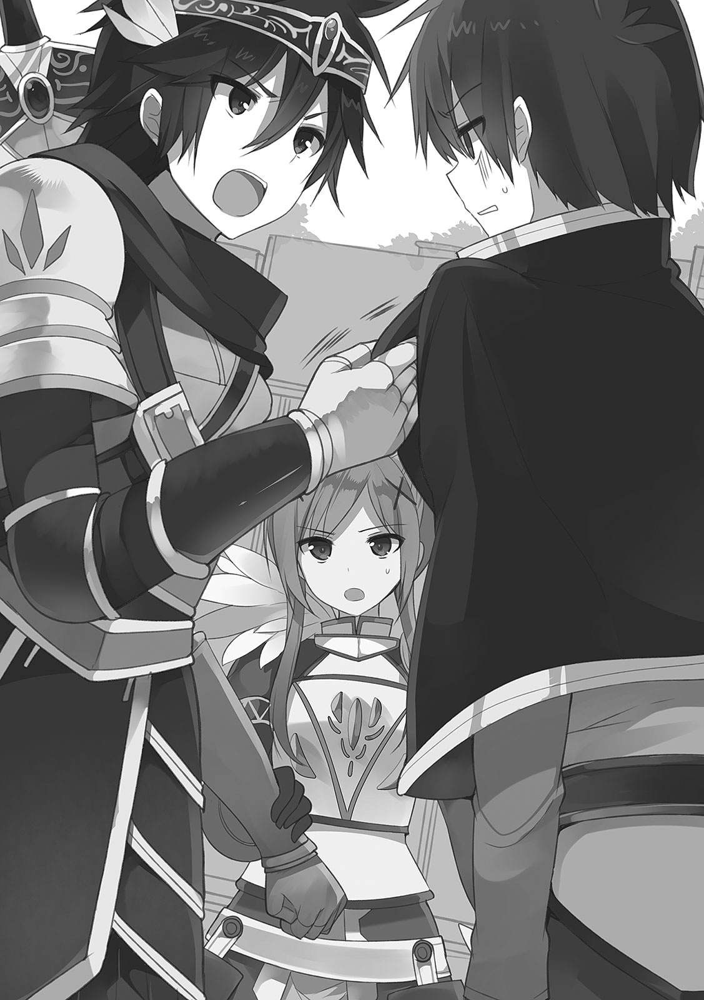
バカな事を口走る時以外は物静かなダクネスが、珍しく怒っていた。
見れば、めぐみんまでもが新調した杖を構え、今にも爆裂魔法の詠唱を……って、それは止めろ！
ミツルギは手を放すと、興味深そうにダクネスとめぐみんを観察する。
「……クルセイダーにアークウィザード？ ……それに、随分綺麗な人達だな。君はパーティーメンバーには恵まれているんだね。それなら尚更だよ。君は、アクア様やこんな優秀そうな人達を馬小屋で寝泊まりさせて、恥ずかしいとは思わないのか？ さっきの話じゃ、就いている職業も、最弱職の冒険者らしいじゃないか」
こいつの言い分だけ聞いていると、自分が凄く恵まれた環境にいるかの様に思えてくる。
何の関わり合いも無い他人から見れば、俺はそんな風に見えるのだろうか。
俺はアクアに耳打ちする。
「なあなあ、この世界の冒険者って馬小屋で寝泊まりなんて基本だろ？ こいつ、なんでこんなに怒ってるんだ？」
「あれよ、彼には異世界への移住特典で魔剣をあげたから、そのおかげで、最初から高難易度のクエストをバンバンこなしたりして、今までお金に困らなかったんだと思うわ。……まあ、能力か装備を与えられた人間なんて、大体がそんな感じよ」
アクアの返事を聞いて、俺は何だか無性に腹が立ってきた。
タダで貰った魔剣でこの世界で苦労もせずに生きてきた奴に、なぜ一から頑張ってきた俺が、上から目線で説教されなきゃいけないんだ。
そんな俺の怒りも知らず、ミツルギが同情でもするかの様に、アクアやダクネス、めぐみんに対して憐れみの混じった表情で笑いかけた。
「君達、今まで苦労したみたいだね。これからは、僕と一緒に来るといい。もちろん馬小屋なんかで寝かせないし、高級な装備品も買い揃えてあげよう。というか、パーティーの構成的にもバランスが取れていていいじゃないか。ソードマスターの僕に、僕の仲間の戦士と、そしてクルセイダーのあなた。僕の仲間の盗賊と、アークウィザードのその子にアクア様。まるであつらえたみたいにピッタリなパーティー構成じゃないか！」
おっと、俺が入っていませんが。
いや、もちろんこの男のパーティーに入りたいとも思わないけれども。
身勝手なミツルギの提案に、俺の仲間の三人はひそひそと囁き出した。
性格は自己中勇者様な感じのミツルギだが、待遇としては、悪くない提案だ。
そして、俺よりもミツルギについて行った方が、アクアの願いである魔王討伐は達成され易いと思う。
アクアは魔王が倒されないと天界に帰れない。
俺の異世界移住特典として連れて来られたが、他の転送者に付き従って魔王討伐を果たしても、きっと帰して貰えるだろう。
俺は、アクア達も流石に心が動いたかなと、背後の会話に聞き耳を立てると……。
「ちょっと、ヤバいんですけど。あの人本気で、ひくぐらいヤバいんですけど。ていうか勝手に話進めるしナルシストも入ってる系で、怖いんですけど」
「どうしよう、あの男は何だか生理的に受けつけない。攻めるより受けるのが好きな私だが、あいつだけは何だか無性に殴りたいのだが」
「撃っていいですか？ あの苦労知らずの、スカしたエリート顔に、爆裂魔法を撃ってもいいですか？」
おっと、大不評ですよミツルギさん。
と、アクアが俺の服の裾を引っ張った。
「ねえカズマ。もうギルドに行こう？ 私が魔剣をあげておいてなんだけど、あの人には関わらない方がいい気がするわ」
正直腹の立つ男ではあるが、ここはアクアの言う通りに立ち去るべきか。
「えーと。俺の仲間は満場一致であなたのパーティーには行きたくないみたいです。俺達はクエストの完了報告があるから、これで……」
俺はそう言うと、馬を引いてオリを引き、立ち去ろうとした。
………………。
「……どいてくれます？」
俺の前に立ち塞がるミツルギに、俺はイライラしながら告げる。
どうしよう、人の話を聞かない系だ。
「悪いが、僕に魔剣という力を与えてくれたアクア様を、こんな境遇の中に放ってはおけない。君にはこの世界は救えない。魔王を倒すのはこの僕だ。アクア様は、僕と一緒に来た方が絶対にいい。……君は、この世界に持ってこられるモノとして、アクア様を選んだという事だよね？」
「……そーだよ」
漫画でよくある流れとして、この後の展開が目に見える。
この後、こいつ、絶対…………！
「なら、僕と勝負をしないか？ アクア様を、持ってこられる『者』として指定したんだろう？ 僕が勝ったらアクア様を譲ってくれ。君が勝ったら、何でも一つ、言う事を聞こうじゃないか」
「よし乗った!! じゃあ行くぞ！」
正に予想通り。
いい加減、我慢が限界にきていた俺は、一も二も無く襲い掛かった。
俺は左手をワキワキさせて、右手で小剣を鞘ごと引き抜き、殴りかかる。
先手必勝、卑怯もクソもあるか！
魔剣持ちの高レベルのソードマスター様が、貧弱装備の駆け出し冒険者に勝負を挑む方が卑怯ってもんだ！
ミツルギも、まさか話を持ちかけ、返事と同時に斬りかかられるとは思ってもいなかったのだろう。
「えっ!? ちょっ！ 待っ……!?」
慌てたミツルギだが、そこは流石に高レベル冒険者。
咄嗟に腰の魔剣を抜くと、それを横にして俺の小剣を受け止めに入る。
俺の右手の小剣が魔剣に当たる寸前に、俺は左手を突き出して……！
「『スティール』ッッッッ！」
叫ぶと同時に、左手にずしりとした剣の重みを感じる。
おっと、いきなり当たりを引いたみたいだ。
俺の小剣を受け止めようとしていたミツルギの手からは、その受け止めようとして掲げていた魔剣が消えうせていた。
「「「はっ？」」」
その間の抜けた声は誰の物か。
俺以外のその場の全員の声だったのかも知れない。
窃盗スキルを組み込んだ攻撃に、ミツルギは成す術も無く、俺が振り下ろした小剣で頭を思い切り強打された。
「卑怯者！ 卑怯者卑怯者卑怯者ーっ！」
「あんた最低！ 最低よ、この卑怯者！ 正々堂々と勝負しなさいよ！」
ミツルギの仲間の、二人の少女による俺への罵倒。
俺は、それを甘んじて聞いていた。
鞘越しとはいえ、重いショートソードで頭部を強打されたミツルギは、面白い格好で白目を剝いて倒れている。
抗議する二人の取り巻きに、俺は一方的に宣言した。
「俺の勝ちって事で。こいつ、負けたら何でも一つ言う事聞くって言ってたな？ それじゃあ、この魔剣を貰っていきますね」
その言葉に取り巻きの一人がいきり立つ。
「なっ!? バ、バカ言ってんじゃないわよ！ それに、その魔剣はキョウヤにしか使いこなせないわ。魔剣は持ち主を選ぶのよ。既にその剣は、キョウヤを持ち主と認めたのよ？ あんたには、魔剣の加護は効果がないわ！」
自信たっぷりに言ってくる少女の言葉に、俺はアクアの方を振り向いた。
「……マジで？ この戦利品、俺には使えないのか？ せっかく強力な装備を巻き上げたと思ったんだけど」
「マジです。残念だけど、魔剣グラムはあの痛い人専用よ。装備すると人の限界を超えた膂力が手に入り、石だろうが鉄だろうがサックリ斬れる魔剣だけれど。カズマが使ったって普通の剣よ」
なんてこった……。
でもまあせっかくだし貰っておこうか。
「じゃあな。そいつが起きたら、これはお前が持ちかけた勝負なんだから恨みっこ無しだって言っといてくれ。……それじゃアクア、ギルドに報告に行こうぜ」
言って踵を返す俺に、ミツルギの仲間の少女が武器を構えた。
「ちょちょちょ、ちょっとあんた待ちなさいよっ！」
「キョウヤの魔剣、返して貰うわよ。こんな勝ち方、私達は認めない！」
その二人の少女に、俺は手をワキワキさせて見せつけた。
「別にいいけど、真の男女平等主義者な俺は、女の子相手でもドロップキックを食らわせられる公平な男。手加減してもらえると思うなよ？ と言うか女相手なら、この公衆の面前で俺のスティールが炸裂するぞ」
俺の手を見た二人の少女は、違う意味での身の危険を感じ取ったのか、不安気な表情で後ずさった。
「「「うわあ…………」」」
そんな俺に、軽くひいている仲間の視線が痛いです。
俺達は借りていたオリを引きずって、ようやくギルドへと帰って来た。
報酬は全部アクアにやると決まったので、クエストの完了報告はアクア達に任せ、俺はといえば、馬を返すついでに、戦利品の魔剣を手にある所に寄った後、皆より遅れて冒険者ギルドの前へとやって来た。
…………の、だが……。
「な、何でよおおおおおっ！」
ギルドの中から喧しいアクアの声が聞こえてきた。
あいつは、とにかく騒ぎを起こさないと気が済まないのだろうか。
中に入ると、そこでは、涙目になったアクアが職員に摑みかかっていた。
「だから、借りたオリは私が壊したんじゃないって言ってるでしょ!? ミツルギって人がオリを捻じ曲げたんだってば！ それを、何で私が弁償しなきゃいけないのよ！」
なるほど、そういえば勝手にオリを曲げて、アクアを助けようとしたんだっけ。
代わりにアクアが、壊れたオリの請求を受けているらしい。
しばらく粘っていたアクアだったが、やがて諦めたのか、報酬を貰って俺達のテーブルへトボトボとやって来る。
「……今回の報酬、壊したオリのお金を引いて、十万エリスだって……。あのオリ、特別な金属と製法で作られてるから、二十万もするんだってさ……」
しょんぼりしているアクアに、流石にちょっと同情した。
ミツルギに関しては、アクアはとんだとばっちりだ。
「あの男、今度会ったら絶対ゴッドブローを食らわせてやるわっ！ そしてオリの弁償代払わせてやるから!!」
アクアが、席に着いてメニューをギリギリと握りしめながら歯ぎしりする。
俺としては、もうあいつには会いたくないんですが。
……と、アクアが未だ悔しげに喚く中。
「ここにいたのかっ！ 探したぞ、佐藤和真！」
ギルドの入り口に、丁度話題のミツルギが、取り巻きの少女二人を連れて立っていた。
教えてもいない俺のフルネームをいきなり叫んだミツルギは、俺達のいるテーブルにツカツカと歩み寄り、バンとテーブルに手を叩きつける。
「佐藤和真！ 君の事は、ある盗賊の女の子に聞いたらすぐに教えてくれたよ。ぱんつ脱がせ魔だってね。他にも、女の子を粘液まみれにするのが趣味な男だとか、色々な人の噂になっていたよ。鬼畜のカズマだってね」
「おい待て、誰がそれ広めてたのか詳しく」
盗賊には心当たりはあるが、他が問題だ。
俺の知らない所で、鬼畜だのとあらぬ噂が……！
真剣な表情で俺に詰め寄るミツルギの前に、アクアがゆらりと立ち塞がる。
「……アクア様。僕はこの男から魔剣を取り返し、必ず魔王を倒すと誓います。ですから……。ですからこの僕と、同じパーティーぐぶえっ!?」
「「ああっ!? キョウヤ！」」
アクアに無言でぶん殴られ、ミツルギが吹っ飛んだ。
床に転がるミツルギに、慌てて仲間の少女達が駆け寄る。
なぜ殴られたのか分からないといった表情のミツルギに、アクアはツカツカと詰め寄りその胸ぐらを摑み上げると。
「ちょっとあんたオリ壊したお金払いなさいよ！ おかげで私が弁償する事になったんだからね！ 三十万よ三十万、あのオリ特別な金属と製法で出来てるから高いんだってさ！ ほら、とっとと払いなさいよっ！」
さっき、あのオリは二十万って言ってなかったか？
ミツルギは殴られた所を押さえ、尻餅をついた体勢で、アクアに気圧されながら素直にサイフから金を出す。
ミツルギから金を受け取り、アクアはホクホクしながら再びメニューを手に取った。
気を取り直したミツルギが、上機嫌でメニューを片手に店員を呼ぶアクアを気にしながら、俺に悔しそうに言う。
「……あんなやり方でも、僕の負けは負けだ。そして何でも言う事を聞くと言った手前、こんな事を頼むのは虫がいいのも理解している。……だが、頼む！ 魔剣を返してはくれないか？ あれは君が持っていても役には立たない物だ。君が使っても、そこらの剣よりは斬れる、その程度の威力しか出ない。……どうだろう？ 剣が欲しいのなら、店で一番良い剣を買ってあげてもいい。……返してはくれないか？」
本人自ら言っているが、また随分と虫のいい話だ。
いくらいらない子とはいえ、アクアは、一応この世界への移住特典として俺にくっついてきたおまけなわけだ。
それはつまり、俺もミツルギの持つ魔剣相当の特典を賭けたという事になる。
アクアが魔剣に相当しているのかと言われれば、黙るしかないが。
「私を勝手に景品にしておいて、負けたら良い剣を買ってあげるから魔剣返してって、虫が良いとは思わないの？ それとも、私の価値はお店で一番高い剣と同等って言いたいの？ 無礼者、無礼者！ 仮にも神様を賭けの対象にするって何考えてるんですか？ 顔も見たくないのであっちへ行って。ほら早く、あっちへ行って！」
メニュー片手にシッシと手を振るアクアの言葉に、ミツルギの顔が青ざめた。
まあ、勝手に話を進められた挙げ句にこれではアクアが怒るのも無理はないが。
「ままま、待ってくださいアクア様！ 別にあなたを安く見ていた訳では……っ！」
慌てるミツルギに、めぐみんがクイクイとミツルギの袖を引く。
「……？ なにかな、お嬢ちゃん……、ん？」
ミツルギの注意を引いためぐみんは、そのまま俺を指で差す。
正確には、俺の腰の辺りを。
「……まず、この男が既に魔剣を持っていない件について」
「!?」
言われて気づいたミツルギが、
「さ、佐藤和真！ 魔剣は!? ぼぼぼ、僕の魔剣はどこへやった!?」
顔中に脂汗を浮かべて俺に縋りつく。
俺は一言。
「売った」
「ちっくしょおおおおおおお！」
ミツルギは、泣きながらギルドを飛び出した。
「……一体何だったのだあいつは。……ところで。先ほどから、アクアが女神だとか呼ばれていたが、一体何の話だ？」
ミツルギが涙目でギルドを飛び出した後。
先ほどの騒ぎで冒険者達の好奇の視線を浴びながら、ダクネスが言ってきた。
……まあ、あれだけ女神だ何だと言っていれば当たり前か。
いや、この際だ。めぐみんとダクネスには言ってしまってもいいか？
俺がアクアに視線をやると、分かったとばかりにアクアがこくりと頷く。
そして、アクアは珍しく真剣な表情で、ダクネスとめぐみんに向き直る。
ダクネスとめぐみんも、そのアクアの雰囲気を察し、真剣に聞く姿勢に入った……。
「今まで黙っていたけれど、あなた達には言っておくわ。……私はアクア。アクシズ教団が崇拝する、水を司る女神。……そう、私こそがあの、女神アクアなのよ……！」
「「っていう、夢を見たのか」」
「違うわよ！ 何で二人ともハモってんのよ！」
……まあ、こうなるわなぁ……。
その時だった。
『緊急！ 緊急！ 全冒険者の皆さんは、直ちに武装し、戦闘態勢で街の正門に集まってくださいっっ！』
お馴染みの、緊急を告げるアナウンスが辺りに響き渡った。
「またかよ……？ 最近多いな、緊急の呼び出し」
行かなきゃ駄目か？
駄目だろうなあ、でもミツルギとあんな騒ぎがあった後だし面倒臭い……。
と、俺が気怠げにテーブルの上にだらけていると。
『緊急！ 緊急！ 全冒険者の皆さんは、直ちに武装し、戦闘態勢で街の正門に集まってください！ ……特に、冒険者サトウカズマさんとその一行は、大至急でお願いします！』
「…………えっ」
今なんて？
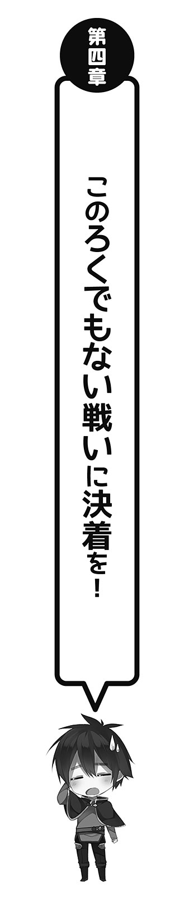
１
俺は慌てて正門前に駆けつけた。
軽装の俺を筆頭に、アクアやめぐみんも門の前に着くが、重装備のダクネスだけは到着が遅れていた。
「お、やっぱりな。またあいつか」
俺達が街の正門前に着くと、そこには既に多数の冒険者が集まっている。
そして多くの駆け出し冒険者達が遠巻きに見守る中、街の正門前には奴がいた。
そう、あの魔王の幹部のデュラハンだ。
先にいた冒険者達の顔色が悪いのが気に掛かっていたが、デュラハンの後ろを見て、理解した。
今日は先日とは違い、背後に多くのモンスターを引き連れている。
それは、朽ちて、ボロボロになった鎧を身に纏った騎士達。
鎧や兜の隙間からは、直視しているとしばらくご飯が食べられなくなりそうな、トラウマになりそうな腐った体が見え隠れしている。
その鎧騎士達は、ひと目でアンデッドだと分かった。
デュラハンは俺とめぐみんの姿を見つけると、開口一番叫びを上げた。
「なぜ城に来ないのだ、この人でなしどもがあああああっ!!」
俺はめぐみんを庇う形で前に出ると、デュラハンに問い掛けた。
「ええっと……。なぜ城に来ないって、なんで行かなきゃいけないんだよ？ 後、人でなしって何だ。もう爆裂魔法を撃ち込んでもいないのに、なにをそんなに怒ってるんだよ」
俺の言葉に、怒ったデュラハンが思わず左手に抱えていた物を地面に叩きつけ……ようとして、それが自分の頭である事に気づき、慌てて脇に抱え直すと。
「爆裂魔法を撃ち込んでもいない？ 撃ち込んでもいないだと!? 何を抜かすか白々しいっ！ そこの頭のおかしい紅魔の娘が、あれからも毎日欠かさず通っておるわ！」
「えっ」
俺はそれを聞き、隣のめぐみんを見る。
めぐみんが、ふいっと目を逸らした。
「…………お前、行ったのか。もう行くなって言ったのに、あれからまた行ったのか！」
「ひたたたたたた、いた、痛いです！ 違うのです、聞いてくださいカズマ！ 今までならば、何もない荒野に魔法を放つだけで我慢出来ていたのですが……！ 城への魔法攻撃の魅力を覚えて以来、大きくて硬いモノじゃないと我慢できない体に……！」
「もじもじしながら言うな！ 大体お前、魔法撃ったら動けなくなるだろうが！ てことは、一緒に通った共犯者がいるだろ！ 一体誰と…………」
めぐみんの頰を引っ張っていた俺の言葉を聞いて、アクアがふいっと目を逸らす。
…………。
「お前かああああああああ！」
「わああああああーっ！ だってだって、あのデュラハンにろくなクエスト請けられない腹いせがしたかったんだもの！ 私はあいつのせいで、毎日毎日店長に叱られるはめになったのよ！」
バイト先で怒られるのはお前の仕事振りのせいだろうが。
逃げようとするアクアの襟首を摑んでいると、デュラハンが言葉を続けた。
「この俺が真に頭にきているのは何も爆裂魔法の件だけではない！ 貴様らには仲間を助けようという気は無いのか？ 不当な理由で処刑され、怨念によりこうしてモンスター化する前は、これでも真っ当な騎士のつもりだった。その俺から言わせれば、仲間を庇って呪いを受けた、騎士の鑑の様なあのクルセイダーを見捨てるなど…………！」
デュラハンがそこまで言い掛けた時。
重い鎧をガチャガチャいわせ、ようやくやって来たダクネスが、俺の隣にそっと立つ。
デュラハンは、騎士の鑑などと褒められ、赤い顔をして照れているダクネスと目が合った。
「……や、やあ……」
ダクネスが、申し訳なさそうにおずおずと、デュラハンに向けて片手を挙げて……。
「………………あ、あれえ────────────っ!?」
それを見たデュラハンが素っ頓狂な声を上げた。
兜のせいでその表情は見えないが、多分、何で!? といった表情をしている事だろう。
「なになに？ ダクネスに呪いを掛けて一週間が経ったのに、ピンピンしてるから驚いてるの？ このデュラハン、私達が呪いを解くために城に来るはずだと思って、ずっと私達を待ち続けてたの？ 帰った後、あっさり呪い解かれちゃったとも知らずに？ プークスクス！ うけるんですけど！ ちょーうけるんですけど！」
アクアが心底楽しそうに、デュラハンを指差しクスクス笑う。
相変わらず表情は見えないが、プルプルと肩を震わせるデュラハンの様子から、きっと激怒しているのだろう。
しかし、アクアが呪いを解いてしまった以上、罠を張っていると分かりきっている、そんな危ない所にわざわざ行く理由が無い。
「……おい貴様。俺がその気になれば、この街の冒険者を一人残らず斬り捨てて、街の住人を皆殺しにする事だって出来るのだ。いつまでも見逃して貰えると思うなよ？ 疲れを知らぬこの俺の不死の体。お前達ひよっ子冒険者どもでは傷もつけられぬわ！」
アクアの挑発に流石に限界にきたのか、デュラハンが不穏な空気を滲ませる。
だがデュラハンが何かをするより早く、アクアが右手を突き出し叫んでいた。
「見逃してあげる理由が無いのはこっちの方よ！ 今回は逃がさないわよ。アンデッドのくせにこんなに注目集めて生意気よ！ 消えて無くなんなさいっ、『ターンアンデッド』！」
アクアが突き出した手の先から、白い光が放たれる。
だがアクアが魔法を放つのを見ても、デュラハンはまるで、そんな物は喰らっても余裕だとでも言うかの様に、それを避けようともしない。
流石は魔王の幹部、よほどの自信があるのだろう。
デュラハンの体に、アクアを中心に放たれた柔らかい光が迫り……！
「魔王の幹部が、プリースト対策も無しに戦場に立つとでも思っているのか？ 残念だったな。この俺を筆頭に、俺様率いる、このアンデッドナイトの軍団は、魔王様の加護により神聖魔法に対して強い抵抗をぎゃあああああああああああああああー!!」
魔法を受けたデュラハンは、光を浴びた部分から、黒い煙を吹き上げさせている。
自信たっぷりだったデュラハンは、体のあちこちから黒い煙を立ち上らせ、身を震わせてふらつきながらも、持ち堪えた。
それを見て、アクアが叫ぶ。
「ね、ねえカズマ！ 変よ、効いてないわ！」
いや、結構効いてた様に見えたんだが、ぎゃーって叫んでたし……。
デュラハンは、よろめきながら。
「ク、ククク……。説明は最後まで聞くものだ。この俺はベルディア。魔王軍幹部が一人、デュラハンのベルディアだ！ 魔王様からの特別な加護を受けたこの鎧と、そして俺の力により、そこら辺のプリーストのターンアンデッドなど全く効かぬわ！ ……効かぬのだが…………。な、なあお前。お前は今何レベルなのだ？ 本当に駆け出しか？ 駆け出しが集まる所だろう、この街は？」
言いながら、デュラハンはアクアを見ている手の上の首を傾けた。
首を傾げる仕草だろうか。
「……まあいい。本来は、この街周辺に強い光が落ちて来ただのと、うちの占い師が騒ぐから調査に来たのだが……。面倒だ、いっそこの街ごと無くしてしまえばいいか……」
ジャイ●ン並みに理不尽な事を言い出したベルディアは、左手に自らの首を抱え、空いた右手を高く掲げた。
「フン、わざわざこの俺が相手をしてやるまでもない。……さあ、お前達！ この俺をコケにしたこの連中に、地獄というものを見せてやるがいい！」
「あっ！ あいつ、アクアの魔法が意外に効いてビビったんだぜきっと！ 自分だけ安全な所に逃げて、部下を使って襲うつもりだ！」
「ちちち、違うわ！ 最初からそのつもりだったのだ！ 魔王の幹部がそんなヘタレな訳がなかろう！ いきなりボスが戦ってどうする、まずは雑魚を片づけてからボスの前に立つ。これが昔からの伝統と……」
「『セイクリッド・ターンアンデッド』ー！」
「ひああああああああああああー！」
何か言い掛けていたベルディアが、アクアに魔法をかけられ悲鳴を上げた。
ベルディアの足元には白い魔法陣が浮かび上がり、そこから天に向かって突き上げる様な光が立ち上っていた。
ベルディアは鎧のあちこちから黒い煙を吐き出して、まるで体についた火でも消すかの様に、地面をゴロゴロと転げ回っている。
アクアが慌てた様子で、
「ど、どうしようカズマ！ やっぱりおかしいわ！ あいつ、私の魔法がちっとも効かないの！」
ひあーって言ってたし、凄く効いてる気がするが。
いや、本来のターンアンデッドは、一撃でアンデッドを消滅させてしまうのだろう。
それが…………。
「こ、この……っ！ セリフはちゃんと言わせるものだ！ ええい、もういい！ おい、お前ら……！」
ベルディアは、あちこちから黒い煙を吹きながらも、ゆらりと立って右手を掲げ……。
「街の連中を。……皆殺しにせよ！」
その右手を振り下ろした！
２
アンデッドナイト。
それは、ゾンビの上位互換モンスター。
ボロボロとはいえ、鎧をしっかりと着込んだそいつらは、駆け出し冒険者にとって十分な脅威となる。
「おわーっ!? プリーストを！ プリーストを呼べー！」
「誰かエリス教の教会行って、聖水ありったけ貰って来てくれえええ！」
あちこちから、そんな切羽詰まった冒険者の叫びが響く中、アンデッドナイト達が街中へと侵入して来た。
それらを何とか迎え撃とうとする冒険者達。
そして、それらをあざ笑うかの様なベルディアの哄笑が……！
「クハハハハ、さあ、お前達の絶望の叫びをこの俺に……。……俺……に……？」
……哄笑が響く中。
「わ、わああああーっ！ なんで私ばっかり狙われるの!? 私、女神なのに！ 神様だから、日頃の行いも良い筈なのに！」
「ああっ!? ずっ、ずるいっ！ 私は本当に日頃の行いは良い筈なのに、どうしてアクアの所にばかりアンデッドナイトが……っ！」
ちっとも神様っぽくない事を叫ぶアクアと、羨ましそうに、どうしようもない事を叫ぶダクネス。
アンデッドナイト達は街の住人に手を出すでもなく、なぜかひたすらにアクアだけを追い掛け回していた。
「こっ、こらっお前達！ そんなプリースト一人にかまけてないで、他の冒険者や街の住人を血祭りに……！」
それを見たベルディアが、焦った声を上げている。
意志を持たない迷える下級アンデッド達は、本能的に女神であるアクアに救いを求め、集まって行ってしまうのだろうか。
なぜアクアがアンデッドに追い回されているのかは分からないが、今がチャンスだ！
「おいめぐみん、あのアンデッドナイトの群れに、爆裂魔法を撃ち込めないか!?」
「ええっ！ 街中ですし、ああもまとまりがないと、撃ち漏らしてしまいますが……！」
と、その時。
「わああああ、カズマさーん！ カズマさーん!!」
アクアが、アンデッドナイトの大群を引き連れて、俺を目指して駆けて来た。
ちょっ……！
「このバカッ！ おい止めろ、こっち来んな！ 向こうへ行ったら今日の晩飯奢ってやるから！」
「私が奢るから、このアンデッドをなんとかしてえ！ このアンデッド達おかしいの！ ターンアンデッドでも消し去れないの！」
畜生、ベルディアが言っていた、魔王の加護ってやつか……っ！
いや待て、ちょっと待てよ……？
「めぐみん、街の外で魔法唱えて待機してろー！」
「ええっ？ ……りょ、了解です！」
めぐみんに一言叫び、俺はアクアに追い掛けられながら街の外へ。
それもわざと、アンデッドナイトと戦闘している冒険者の近くを通り過ぎ、できるだけ多くのアンデッドナイトをアクアに擦り付けていく様に……。
そして……！
「カズマさーん！ なんか、なんか私の後ろに！ 街中のアンデッドナイトがついて来てるんですけどー！」
振り返ると、アクアの後ろにはアンデッドナイトの大群が。
俺とアクアが街を出て、それに続いてアンデッドナイトが街を出た、その瞬間。
「めぐみん、やれーっ！」
俺の合図にめぐみんが、眼帯を外して杖を構え、両の瞳を輝かせた。
「何という絶好のシチュエーション！ 感謝します、深く感謝しますよカズマ！ ……我が名はめぐみん！ 紅魔族随一の魔法の使い手にして、爆裂魔法を操りし者！ 魔王の幹部、ベルディアよ！ 我が力、見るがいい！ 『エクスプロージョン』──────ッッ！」
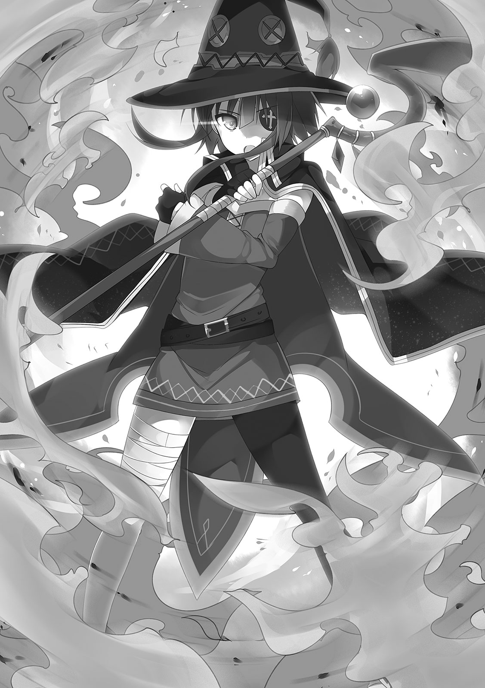
めぐみん会心の爆裂魔法が、アンデッドナイトの群れのど真ん中に炸裂した！
３
街の正門の真ん前に巨大なクレーターを作り上げ、アンデッドナイトを一体残らず消し飛ばした爆裂魔法。
誰もがその魔法の威力にシンと静まり返る中。
「クックックッ……。我が爆裂魔法の威力を目の当たりにし、誰一人として声も出せない様ですね……。ふああ……。口上といい、凄く……気持ち良かったです……」
そんな、勝ち誇っためぐみんの声が聞こえてきた。
「…………おんぶはいるか？」
「あ、お願い致します。あと、満足に動けないので眼帯着けてくれますか？」
ちょっと離れた所の地面から。
そこには、魔力を使い果たしてうつ伏せに倒れているめぐみん。
そのめぐみんを抱きかかえ、眼帯を着けてやると、自分の背中に背負い込んだ。
「口の中が……、口の中がじゃりじゃりする……！」
一番アンデッドナイトの近くにいたアクアが半泣きでぺっぺっと口の中の砂を吐きながら、俺の方に歩いて来た。
爆裂魔法の余波で地面を転がされたらしい。
未だもうもうと爆煙が上がる中、街中の冒険者から歓声が沸き上がる。
「うおおおおおおお！ やるじゃねーか、頭のおかしい子！」
「頭のおかしい紅魔の子がやりやがったぞ！」
「名前と頭がおかしいだけで、やる時はちゃんとやるじゃないか、見直したぜ！」
街から聞こえてくる歓声に、めぐみんが俺の背中でもぞもぞ動いた。
「すいません。ちょっとあの人達に爆裂魔法ぶっ放したいので、近くまで連れてってください」
「もう魔力は使い果たしてるだろうが。今日は大仕事したんだ、自信持って胸張って休んどけよ。……ご苦労さん」
その言葉にめぐみんが、安心した様にしがみつく。
当然、背中に柔らかい物が……。
物……が…………？
……一応胸張ってくっついてる様だが、それらしい感触が何も……。
……まあ、ロリっ子だし、しょうがないか。
「紅魔族は知能が凄く高いのです」
めぐみんが、突然俺の背中でそんな事を言い出した。
「……今、カズマが何を考えているのか当ててあげましょうか」
「……めぐみんて、着瘦せするタイプなんだなーって思ってた」
分かり易いお世辞に、めぐみんが俺の首を絞めようとしてくる。
そして街の入り口では、ベルディアが、そんな俺達をじっと見ていた。
正確には、俺の背中のめぐみんを。
やがて、ベルディアが肩を震わせ始める。
配下のアンデッド達を全滅させられ、怒っているのだろうか。
…………いや。
「クハハハハ！ 面白い！ 面白いぞ！ まさかこの駆け出しの街で、本当に配下を全滅させられるとは思わなかった！ よし、では約束通り！」
……おい、ちょっと待てよ。
おい、待て！
「この俺自ら、貴様らの相手をしてやろう！」
街の入り口にいたベルディアが、大剣を構えてこちらへと駆け出した！
４
ベルディアが、俺達のもとへ着くより早く。
多数の冒険者達が武器を手に、狙われた俺達を援護する様に、ベルディアをジリジリと遠巻きに取り囲んでいく。
それを見たベルディアが、片手に頭を、片手に剣を持ちながら、愉快そうに肩をすくめて……。
「……ほーう？ 俺の一番の狙いはそこにいる連中なのだが……。……クク、万が一にもこの俺を討ち取る事が出来れば、さぞかし大層な報酬が貰えるだろうな。……さあ、一獲千金を夢見る駆け出し冒険者達よ。まとめてかかってくるがいい！」
一獲千金というその言葉に、包囲を狭めていた冒険者達が色めき立つ。
そして、一人の戦士風の男が……、
「おい、どんなに強くても後ろに目は付いちゃいねえ！ 囲んで同時に襲いかかるぞ！」
ベルディアの横手から、周りの冒険者に向けて叫んだ。
何という死亡フラグ。
「おい、相手は魔王軍の幹部だぞ、そんな単純な手で簡単に倒せる訳ねーだろ！」
俺は嚙ませ犬みたいなセリフを言った戦士風の男に警告する。
それと同時に、俺もそいつらの援護をするべく剣を……。
…………いや、よく考えろ、超低レベルの俺が斬りかかったところで結果は見えてる。
何より、今は背中のめぐみんを安全な場所に運んで……。
……運んで、それから？
めぐみんはもう魔力が無い。
アクアの魔法も致命打にはならない。
……このまま皆で逃げてしまった方がいいんじゃないか？
俺がそんな事を考えていると、ベルディアを囲んでいた戦士風の男が、今まさに襲いかかろうと……！
「時間稼ぎが出来れば十分だ！ 緊急の放送を聞いて、すぐにこの街の切り札がやって来るさ！ あいつが来れば、魔王軍の幹部だろうがてめえは終いだ！ おいお前ら、一度にかかれば死角ができる！ 四方向からやっちまえ！」
そんな叫びと共に襲いかかろうとする男を前に、ベルディアは片手に持っていた自分の首を、空高くへと放り投げた。
……この街の切り札？
あいつって誰だろう、この街で有名な腕利き冒険者だろうか？
そんな事を考えている間に、投げられたベルディアの首は、顔の正面を地上へと向けながら宙を舞う。
それを見た瞬間に、ぞくりとした。
俺だけではなく、周囲で見ていた冒険者達も気がついたらしい。
「止めろ！ 行くな……」
名も知らない冒険者達を止めようと声を上げるが……。
ベルディアは一斉に斬りかかってくる冒険者達の攻撃を、まるで背中に目が付いているかの様に身を躱す。
「えっ？」
それは、斬りかかった冒険者の声。
一体どの冒険者が言ったのだろう。
アッサリと全ての攻撃を躱してみせたベルディアは、片手で握っていた大剣を両手で握り直し……。
ベルディアは、斬りかかってきた冒険者達全員を、瞬く間に斬り捨てた。
少し前まで生きていた人が、目の前であっさり命を落とす。
その理不尽さに、俺はこの世界の現実を思い知る。
ドシャリと音を立てて崩れ落ちる男達。
ベルディアは満足そうにその音を聞くと、片手を上に向けた。
その手の平の上にベルディアの首が落ちてくる。
その一連の動きは何でもない事だったかの様に、ベルディアは気楽に言った。
「次は誰だ？」
その言葉に、居合わせた冒険者達が怯む中。
一人の女の子が叫びを上げた。
「あ、あんたなんか……！ あんたなんか、今にミツルギさんが来たら一撃で斬られちゃうんだから！」
…………えっ。
俺は思わず脳が止まる。
ミツルギって、俺が魔剣を取り上げて売り払った……。
「おう、少しだけ持ち堪えるぞ！ あの魔剣使いの兄ちゃんが来れば、きっと魔王の幹部だって……！」
「ベルディアとか言ったな？ いるんだぜ、この街にも！ 高レベルで、凄腕の冒険者がよ！」
……ヤバイ、マジヤバイ。
俺は真っ青になりながらアクアの方を見ると、先ほどまでそこにいた筈のアクアの姿は無く。
この中で唯一、ミツルギ以外で切り札になりそうな力を持つアクアは、冒険者達と対峙するベルディアに目もくれず、斬られた冒険者達の死体の傍へと近寄り、一体なんのつもりか、ぺたぺたと死体を触っていた。
女神なりに、死者の冥福でも祈るつもりだろうか。
頑丈な鎧を着た冒険者達があっさりと斬り殺されたのを見て、悠然と立つベルディアの前には、もはや誰も立ち向かおうとは…………。
「……ほう？ 次はお前が俺の相手をするのか？」
ベルディアは、左手に首を、右手に大剣を握りながら。
俺とめぐみんを庇う形でベルディアの前に立ち塞がったダクネスへ、面白そうに手の上の首を突き出した。
自らの大剣を正眼に構え、背に俺達を庇うダクネスのその姿は、もはや変態などではなく、どこに出しても恥ずかしくないクルセイダーだ。
ベルディアは、アクアやめぐみんの力を目の当たりにし、恐らくダクネスにも何かあると警戒しているのだろう。
ベルディアが、ダクネスと対峙したまま動かなくなった。
ダクネスの重厚な白い鎧が、陽の光を浴びて、ベルディアの黒い鎧と相反する様に輝いている。
ベルディアに襲いかかった冒険者達も鎧は着ていた。
だが、この魔王軍の幹部は着ている鎧ごと斬り裂いたのだ。
日頃、誰よりも硬いと自信満々に言い張るダクネスは、ベルディアの攻撃に耐えられるものなのだろうか。
俺がダクネスを止めるべきか止めないべきかを悩んでいると、それを察したダクネスが自信有り気に言い放つ。
「安心しろカズマ。私は頑丈さでは誰にも負けない。それに、スキルは所持している武器や鎧にも効果があるんだ。ベルディアの剣は、確かに良い物だろう。だが、それだけで金属鎧が、紙を裂く様に斬れる訳が無いだろう？ 先ほど斬られた冒険者を見る限り、ベルディアは強力な攻撃スキル持ちだ。私の防御スキルとどちらが上か、勝負してやる！」
今日のダクネスは珍しく攻撃的だ。
だが、防御は出来ても、お前の場合攻撃が当たらないだろうに。
「止めとけよ。あいつ、攻撃だけじゃなく回避も凄かっただろ？ あれだけの冒険者が斬りかかっても当たらなかったものを、不器用なお前が当てられる訳がないだろ」
俺の言葉にダクネスは、じっとベルディアと対峙したまま。
「……聖騎士として……。……守る事を生業とする者として。どうしても譲れない物がある。やらせて欲しい」
何の事だかは知らないが、ダクネスなりの譲れない理由でもあるのだろうか。
俺が何も言えないでいると、ダクネスは大剣を正眼に構え、ベルディアに向かって駆け出した！
「ほう！ 来るのか！ 首無し騎士として、相手が聖騎士とは是非も無し。よし、やろうかっ！」
ベルディアがそれを迎え撃つ。
ダクネスが両手で握る大剣を見て、受け止めるのを嫌がったのか、ベルディアは身を低く落とし、回避の構えを見せている。
そのベルディアに、ダクネスは体ごと叩きつけるように大剣を……！
……距離の目測を見誤ったのか、ベルディアの足先数センチほど前の地面に叩きつけた。
「…………は？」
ベルディアが、気の抜けた声を上げる。
そのまま呆然とダクネスを見ているが、同じ様な視線で他の冒険者達もダクネスを眺めていた。
……やだもう、動かない相手ですら外すなんて恥ずかしいっ！
この子、俺の仲間なんですけど！
素人が刀を思い切り振ると自分の足を斬りつける事があるとか、そんな話は聞いた事はあるが、これは流石に……。
的を外したダクネスは、当たらないのはいつもの事だと言わんばかりに、一歩前へと踏み出し、今度は大剣を横に払う。
あれだけ格好つけた後で外したのは恥ずかしかったのか、ほんのりと頰を赤くしながら。
これは当たる角度だったのか、ベルディアが身を更に低くし、ひょいとかわした。
「なんたる期待外れだ。もういい。……さて……」
ベルディアがつまらない者を相手にしたとでも言いたげな口調で、袈裟懸けに、ダクネスに対して無造作に剣を一閃させた。
「さて、次の……相手…………。……は？」
確実に討ち取ったという自信があったのだろう。
だがベルディアの剣は、耳障りな音と共にダクネスの鎧の表面を派手に引っ搔いただけだった。
ダクネスが、一旦ベルディアから距離を取り。
「ああっ!? わ、私の新調した鎧がっ!?」
鎧に出来た大きな傷を悲しげに見つめた後、キッとベルディアを睨みつける。
鎧の傷は大きいものの、ダクネスの身体に届くような傷では無い。
つまり……。
「な、何だ貴様は……？ 俺の剣を受けて、なぜ斬れない……？ その鎧が相当な業物なのか？ ……いや、それにしても……。先ほどのアークプリーストといい、爆裂魔法を放つアークウィザードといい、お前らは……」
何かブツブツ言い出したベルディアの隙をつき、俺は他の冒険者の間に紛れ込む。
そして、背負っていためぐみんを他の冒険者に預けると、
「ダクネス！ お前ならそいつの攻撃に耐えられる！ 攻撃は任せとけ、援護してやる！」
俺の言葉にダクネスが、目はベルディアに向けたまま頷いた。
「任せた！ だが、私にもこいつに一太刀浴びせる機会を作ってくれ。頼む！」
俺はダクネスの頼みに分かったとだけ叫び、ベルディアから離れ、近くにいた冒険者に呼びかけた。
「魔法使いのみなさーん!!」
俺の呼びかけに、自分の仕事を思い出した魔法使い達が次々と魔法の準備を始め、他の冒険者達も自分に出来る事が無いかと動き出した。
これは魔王の幹部との戦争だ。
冒険者の街に敵の大物がノコノコとやって来ているのだ、無事に帰してやる理由が無い。
と、ベルディアが地に剣を突き立て、開いた右手で、魔法を唱えだした魔法使い達を次々と指す。
「お前らまとめて、一週間後にィィィ！ 死にさらせェェ!!」
ベルディアが、魔法を詠唱していた魔法使い達にまとめて死の宣告の呪いをかけた。
自分が死の宣告を受けた事実に、魔法使い達がうろたえ、次々と詠唱を止めてしまう。
参戦しようとしていた他の魔法使いは、死の宣告を受けた同業者の姿を見て、顔を引きつらせながら魔法を唱えるのを躊躇した。
クソデュラハンめ、嫌らしい手を使いやがって！
「よし、今度は本気で試してみようか！」
ベルディアが、叫ぶと同時に再び自分の首を空高く放り投げた。
……あの首、弓使いの人に頼んで撃ち落として貰えないだろうか。
俺がそんな事を考えていると、ベルディアは両手で大剣を握り直し、ダクネスへと襲いかかった！
兜の顔の部分は、またもや下を向いた状態で投げられている。
宙に放り投げた首で、空から戦場全体を見渡しているのだろう。
あれをされると、ベルディアには死角も無くなり、剣を振るえば相手がどこへ躱すかも簡単に予想がついてしまう。
「カ、カズマ！ ダクネスが……！」
後ろからめぐみんの悲鳴が上がった。
この場には、街の殆どの冒険者が集まっている。
見覚えのあるあの人も、モンスターの弱点を教えてくれたあいつも。
弓を手にしながら、ベルディアと対峙するダクネスに当たったらどうしようかと攻めあぐねている、ネロイドって飲み物があると教えてくれたあの子。
槍を手に、ベルディアの背後に回り込もうとしている、ギルドで、酒も飲めないのかと俺をからかったあのおっさんも。
ダクネスが崩れれば、ベルディアは気まぐれに、本当にこの場の全員を皆殺しにするかもしれない。
それが分かっているからなのか、襲いかかるベルディアに、ダクネスは正眼に構えていた幅広の大剣をくるりと返し、剣の腹を前に出し、盾にでもするかの様に一歩も退かず、掲げ立つ。
兜を着けていない頭以外は好きに攻撃しろとでも言わんばかりに。
「ほう、潔し！ これで、どうだっ!?」
ベルディアが両手でしっかりと大剣を構える。そして、魔王の幹部の常人離れした無数の斬撃が、ダクネスに向けて放たれた。
一つ、二つ、三つ、四つ……！
斬りつける斬撃はあっという間に二桁を超え、その度に、金属を引っかく不愉快な音と共に、ダクネスの鎧に無数の刀傷が刻まれる。
並の冒険者なら細切れにされてもおかしくない斬撃に、ダクネスは微動だにせず立ち塞がった。
剣に触れたダクネスの長い金髪が、数本ほど宙に舞う。
ベルディアは強烈な連続攻撃を一旦止めて、空から落ちてきた首を片手で受け止め、ほお……と、ダクネスのタフさに感心した後、今度は片手で剣を振るう。
耐えるダクネスの姿を見ていた魔法使い達が。
ショックで青い顔で立ち尽くしていた連中が……。
意を決した様に、再び魔法を唱え始めた。
……と、俺の頰に温かい何かがピッとかかる。
手の甲で拭ったそれは…………。
「おいダクネス、お前手傷負わされてるのか！ もういい下がれ！ 冒険者全員で、バラバラに走って逃げて、ひとまず対策を練り直すぞ！」
見ればダクネスは、頰や鎧の切れ目から、所々血を流していた。
そんなダクネスへ呼びかけるが、ダクネスは下がらない。
「クルセイダーは、背に誰かを庇っている状況では下がれない！ こればっかりは絶対に！ そ、それにだっ！」
格好いい事を言いながら、ダクネスは頰を赤くし、必死の抵抗を続け……！
「それにっ！ こ、このデュラハンはやり手だぞっ！ こやつ、先ほどから私の鎧を少しずつ削り取るのだ……！ 全裸に剝くのではなく中途半端に一部だけ鎧を残し、私をこの公衆の面前で、裸より扇情的な姿にして辱めようと……っ！」
「えっ!?」
ダクネスの言葉に一瞬手を止め、ちょっとひくベルディアに、俺は手に魔力を込めながら、こんな時でもブレない本物の変態を罵倒する。
「時と場合ぐらい考えろ、この筋金入りのド変態が!!」
俺の罵声にダクネスがビクンと震え、
「くう……！ カ、カズマこそ時と場合を考えろっ！ 公衆の面前でデュラハンに痛めつけられているだけでも精一杯なのに、これでカズマまでもが私を罵倒したら……っ！ お、お前とこのデュラハンは、一体二人がかりでこの私をどうするつもりだっ！」
「ええっ!?」
「どうもしねーよド変態！ 『クリエイト・ウォーター』ッ！」
ツッコミも兼ねてダクネスに放った水魔法。
俺の叫びとともに、ダクネスとベルディアの頭上に突然水が現れた。
バケツをひっくり返した様な勢いで、大量の水が二人にぶち撒けられる。
ダクネスは頭から盛大に水を被り、そしてベルディアは、大慌てでぶち撒けられる水から飛び退いた。
…………？
何でベルディアは、あんなに慌てて……？
……と、頭から水を被ったダクネスが、ほんのりと顔を火照らせて呟いた。
「……不意打ちで突然こんな仕打ちとは……。や、やってくれるなカズマ、こういうのは嫌いじゃない。嫌いじゃないが、本当に時と場合を考えて欲しい……」
「ち、違う、これは妙なプレイじゃない！ これは、こうするんだよっ！ 『フリーズ』！」
続け様に唱えるのは、水を凍らせるだけの初級魔法。
これだけでは何の効果も無い魔法だが……。
「!? ほう、足場を凍らせての足止めか……！ なるほど、俺の強みが回避だけだと思っているな？ だが……！」
足元の地面を凍らされたベルディアが、何かを言うより早く、俺は本命のスキルを。
……そう、先ほどミツルギに使った、今の俺の最大の武器！
「回避し辛くなればそれで十分だ！ お前の持つ武器を貰うぞ、喰らえ『スティール』ッッッ！」
相手の持つ物をランダムに取り上げるスキル、スティールを炸裂させた。
この世界には魔法やスキルという物がある。
それらは体力とは別の、誰にでも備わっている、魔力というものを使って使用する。
アクアいわく。
使い方を忘れているだけで、地球でも、昔は魔法を使う人がたくさんいたのだそうだ。
魔力を込めれば込めるほど、スキルや魔法は威力を増加させ、成功率を高めるのだ。
ベルディアの隙を作り、まず避けられない、最高のタイミングで放った俺の会心のスティールは…………！
「……悪くはない手だったな。それなりに自信があったのだろうが、俺は仮にも魔王の幹部。レベル差というヤツだ。もう少しお前との力の差が無ければ、危なかったのかもしれないが」
……魔王の幹部、ベルディアには、何の効果も及ぼさなかった。
ベルディアが、俺を指差す。
……参ったな、流石は高レベルの魔王の幹部。俺のスティールぐらいでは……。
……と、ベルディアが、俺に呪いを掛けるより早く。
「私の仲間に手を出すな！」
普段はクールなダクネスが、珍しく感情を表に出して、叫ぶと同時、当たらない重い大剣を投げ捨てて、ベルディアに向かって肩口から体当たりした。
だがベルディアは、凍った足場にもかかわらずそれすらも易々と身をかわし、余裕たっぷりに大剣を握り締める。
ダクネスは飛びかかるために、重い剣を投げてしまった。
つまり、ベルディアの剣から身を守る物が無い。
気が付くと、俺は周りに叫んでいた。
「盗賊、頼むー！ 万に一つ、こいつから剣を奪っちまえば俺達の勝ちだ！ スティール使える奴は協力してくれっ！」
もしかしたら、俺よりもレベルが高く、運が強い奴がいるかも知れない。
いつの間にか潜伏スキルで近寄って来ていた盗賊達が、俺の呼びかけに、そこかしこから姿を現した。
「「「『スティール』ッ！」」」
だが、次々と仕掛けられるスティールは効果を見せず。
ベルディアは、もはや群がる俺達を気にする様子もなく、無防備になったダクネスへと剣を構え……、そして、持っていた自分の首を再び高々と放り上げた。
「「ああっ!?」」
それを見た冒険者達から悲鳴が上がる。
ベルディアが首を投げた後は、両手を使っての、あの凄まじい連撃が始まるからだ。
「……くっ……！」
それを見たダクネスが、小さく呻く。
やばいやばいやばいやばい！
こんな時どうすればいい!?
俺には特殊な力も無ければ秘められた才能も無い。
人に胸を張って誇れるようなものも無ければ、こんな場面で役立つ技術も無い。
あるのは人より恵まれた運の良さ。
後は、子供の頃から培ってきたゲームの知識。
毎日ゲームにハマって怠けていたツケが、こんなところで回ってきた。
大喜びで渡って来たこの異世界で、このまま何も出来ずに終わるのか？
「ダクネスが！ カズマ、ダクネスが！」
俺の後ろでめぐみんが悲痛に叫ぶ。
思い出せ！ 相手はデュラハンだ、ロールプレイングゲームでは何が弱点だった？
俺の取り柄と言ったら、ネットゲームの対人戦で、相手が嫌がる攻撃方法を即座に見抜く事ぐらいだ。
あいつをよく観察しろ。
……何であいつは、俺の出した水を大袈裟に避けた？
…………。
……流れる水。
それは、メジャーアンデッドモンスター、ヴァンパイアも苦手とする物。
なら、あのデュラハンは？
「なかなかに楽しめたよクルセイダー！ 元騎士として、貴公と手合わせ出来た事に魔王様と邪神に感謝を捧げよう！ さあ、これで……！」
「『クリエイト・ウォーター』ッッッ！」
「!?」
正に今、ダクネスに斬りかかろうとしたベルディアは……。
ダクネスに突っ込む事はせず、その場に足を止め。
結局、攻撃する事無く落ちてきた自分の首を受け止めた。
「…………カズマ、その……。私は今、結構真面目に戦っているのだが……」
代わりに、更にずぶ濡れにされたダクネスが恨めしげに言ってくる。
本来なら謝る場面だが、今はそれどころじゃない。
俺は大声で叫びを上げた。
「水だあああああああーっ！」
５
「『クリエイト・ウォーター』！ 『クリエイト・ウォーター』！ 『クリエイト・ウォーター』ッッッッッ！」
「くぬっ！ おおっ？ っとっ！」
俺を筆頭に、そこかしこの魔法使い達が魔法を唱える。
頭上から次々と浴びせられる水を、ベルディアはこれでもかと躱していた。
くそ、弱点っぽいのが分かったのに、そもそも攻撃が当たらない！
他の魔法使い達にも焦りが見える。
このままでは、ベルディアに一矢報いる前に皆の魔力が尽きそうだ。
と、そんな中。
「ねえ、一体何の騒ぎなの？ なんで魔王の幹部と水遊びなんてやってるの？ この私が珍しく働いてる間に、カズマったら何を遊んでいるの？ バカなの？」
こいつ、引っ叩いてやろうか。
必死で水魔法を唱える俺に、今の今までどこかに行っていたアクアが、トコトコとこちらに歩きながらとぼけた事を言ってきた。
「水だよ水！ あいつは水が弱点なんだよ！ お前、仮にも一応はかろうじてとは言え、水の女神なんだろうが！ それともやっぱり、お前はなんちゃって女神なの？ 水の一つも出せないのかよ!?」
「!? あんた、そろそろ罰の一つも当てるわよ無礼者！ 一応でもかろうじてでもなんちゃってでもなく、正真正銘の水の女神ですから！ 水？ 水ですって？ あんたの出す貧弱なものじゃなく、洪水クラスの水だって出せますから！ 謝って！ 水の女神様をなんちゃって女神って言った事、ちゃんと謝って！」
出せるのかよ！
いや、出せるのなら早くやれよ！
「後でいくらでも謝ってやるから、出せるんならとっとと出せよこの駄女神が！」
「わああああーっ！ 今、駄女神って言った！ あんた見てなさいよ、女神の本気を見せてやるから！」
売り言葉に買い言葉。
俺の言葉に、アクアが一歩前に出た。
そのアクアの周囲に、霧の様な物が漂い…………。
………………えっ？
「この雑魚どもめ、貴様らの出せる程度の水など、この俺には……？」
ベルディアが、ふとアクアを見て動きを止める。
流石は魔王の幹部といった所だろうか。
アクアがこれからやろうとする事に、不穏な気配を感じたのだろう。
というか、周囲にいる魔法を使える連中も、どこと無く不安気な様子でアクアを見ていた。
アクアが、そんな周囲の様子を気にも留めずぼそぼそと呟いた。
「この世に在る我が眷属よ……」
アクアの周りに現れていた霧が、小さな水の玉となって辺りを漂う。
その小さな水の玉の一つ一つに、ギュッと魔力が凝縮されているのが感じ取れる。
「水の女神、アクアが命ず…………」
……嫌な予感がする。
辺りの空気がビリビリと震える、この感じ。
この不穏な空気は、めぐみんが爆裂魔法を唱える時のものに似ている。
つまり、それぐらいにヤバそうな魔法が使われようとしているわけで……！
その不穏な空気は、対峙するベルディアも感じていたのだろう。
ベルディアは、躊躇する事も無く潔くアクアに背を向けて、素早く逃げようと……、
……したところに、ダクネスがその前に立ち塞がった！
アクアは両手を広げると。
「『セイクリッド・クリエイト・ウォーター』！」
水を生み出す魔法を唱えた。
６
確かに、アクアは言った。
洪水クラスの水だって出す事が出来ると。
「ちょっ……！ 待っ…………！」
「ぎゃー！ 水、水があああああー！」
目標としたベルディアを始め、周囲にいたダクネスや冒険者。そして、離れていた俺やめぐみん、魔法を唱えたアクアまでもが……。
「あぶ……！ ちょ、おぼ、溺れま……！」
「めぐみん、めぐみーん！ 摑まってろ、流されるなよ！」
突如出現した水に、その場の全ての人が押し流された。
膨大な量のその水は、街の正門前に盛大な飛沫を上げ、そして、街の中心部へと流れて行く。
やがて水が引いたその後には、地面にぐったりと倒れ込む冒険者達と、そして……。
「ちょ……、ちょ……っ、何を考えているのだ貴様……。ば、馬鹿なのか？ 大馬鹿なのか貴様は……!?」
同じく、ぐったりしていたベルディアが、ヨロヨロしながら立ち上がった。
ベルディアの意見に激しく同意したいが、今はそんな事を言っている場合でもない。
今がチャンスだ、この絶好の……、
「今がチャンスよ、この私の凄い活躍であいつが弱ってる、この絶好の機会に何とかなさいなカズマ！ 早く行って。ほら、早く行って！」
こんのアマー！
こいつは後で、公衆の面前で泣くまでスティールで剝いてやろうと心に決めると、俺はベルディアに片手を突き出し……！
「今度こそ、お前の武器を奪ってやるよ！ これでも喰らえぇ！」
「やってみろ！ 弱体化したとは言え、駆け出し冒険者のスティールごときで俺の武器は盗らせはせぬわ！」
俺と対峙したベルディアは、俺に向けて叫びながら、再度自らの首を空高く投げ、両手で大剣を構えて精一杯の威厳を放つ。
流石は魔王の幹部の一人。弱っている筈なのに、こうして対峙するだけで足が震えてきそうになる。
そんな、魔王の幹部に……！
「『スティール』ッッッ！」
俺は、全魔力を込めたスティールを炸裂させた！
それと同時に、硬くて冷たい手応えと共に、ずしりとした重さが両手に伝わった。
思わず、やったか？ と、フラグになる様な事を考えてしまう。
きっと、それがいけなかったのだろう。
「「ああ…………」」
周囲の冒険者達から失望の声が上がった。
ベルディアを見ると、剣を両手で握り締めている。
そのまま、俺に向けてあの凄まじい斬撃を……。
…………放つ事は無く、そのままぽつんと突っ立っていた。
………………？
その場の皆が、何が起こったのか分からず、シンと静まり返っていると。
困った様な、恐る恐るといった感じの、小さな声がした。
「あ、あの…………」
それはベルディアの声だった。
ベルディアは、か細い声を震わせながら。
「あ、あの……。…………首、返してもらえませんかね…………？」
俺の両手の間で、ベルディアの頭が呟いた。
……………………。
「おいお前ら、サッカーしよーぜ！ サッカーってのはなああああぁ！ 手を使わず、足だけでボールを扱う遊びだよおおおお！」
俺は冒険者達の前に、ベルディアの頭を蹴り込んだ！
「なああああああ！ ちょ、おいっ、や、やめっ!?」
蹴られて転がるベルディアの頭は、今まで焦れて待っていた冒険者達の格好のオモチャにされた。
「ひゃはははは！ これおもしれー！」
「おい、こっちこっち！ こっちにもパース！」
「やめっ!? ちょ、いだだだ、やめえっ!?」
頭を蹴られるベルディアの、体の方は片手に剣を握ったまま、前が見えずにうろたえている。
「おいダクネス。一太刀食らわせたいんだろ？」
俺は落ちていた大剣を拾い上げ、ずぶ濡れで近寄ってくるダクネスに渡してやると、荒い息を吐きながらあちこちから血と水を滴らせていたダクネスが、それを構えてベルディアの体の前にゆらりと立った。
その間に、俺はアクアにちょいちょいと手招きをする。
羽衣の裾を絞っていたアクアがそれに気づき、ばたばたとこちらに駆けて来る中。
ダクネスは、大剣を大きく振り上げ……！
「これはっ！ お前に殺された、私が世話になったあいつらの分だ！ 何度も斬りつけるつもりはない！ まとめて、受け取れえっ!!」
大剣を思い切り振り下ろした。
「ぐはあっ!?」
遠くで蹴り転がされていたベルディアの頭が、人だかりの中からくぐもった声を上げた。
不器用ながらも力は強いダクネスの一撃は、ベルディアの黒い鎧を打ち砕き、胸元にざっくりと大きな傷を与える。
確か、ベルディアはこう言っていた。
魔王様の加護を受けたこの鎧、と。
「おし。アクア、後は頼む」
「任されたわ！」
鎧の一部が砕け、しかも水を浴びて弱体化中のベルディアへ、アクアの片手が向けられた。
「『セイクリッド・ターンアンデッド』ー！」
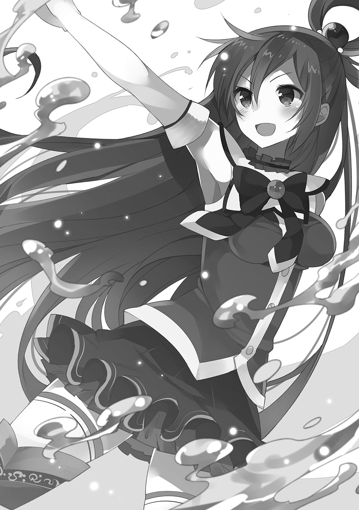
「ちょ、待っ……！ ぎゃああああああー！」
アクアの魔法を受けたベルディアの悲鳴が、冒険者達の足元から聞こえる。
流石に今度のターンアンデッドは効いたみたいだ。
ベルディアの身体が白い光に包まれて、やがて薄くなり、消えていく。
ベルディアの首も消えたのか、サッカーを楽しんでいた冒険者達がどよめいていた。
……こうして、何が目的でこの地にやって来たのかも明かす事無く、魔王の幹部はこんな所で浄化された。
７
勝利に沸く冒険者達の声を聞きながら、傷だらけのダクネスは、片膝をつき、デュラハンの体が消えた場所の前で、祈りを捧げるポーズで目を閉じている。
そんなダクネスに、めぐみんが恐る恐る声をかけた。
「……ダクネス、何をしてるのですか？」
ダクネスは、目を閉じたまま、独白でもする様に答えた。
「……祈りを、捧げている。デュラハンは不条理な処刑で首を落とされた騎士が、恨みでアンデッド化するモンスターだ。こいつとて、モンスターになりたくてなった訳ではないだろう。自分で斬りつけておいて何だが、祈りぐらいはな……」
そうですか……と呟くめぐみんに、なおもダクネスは続ける。
「……腕相撲勝負をして私に負けた腹いせに、私の事を鎧の中はガチムチの筋肉なんだぜと、バカな大噓を流してくれたセドル……。おいダクネス、暑いから団扇代わりにその大剣で扇いでくれ！ なんなら当ててもいいけど。当たるんならな！ ……と、バカ笑いして私をからかったヘインズ。そして……。一日だけパーティーに入れて貰った時に、何であんたはモンスターの群れに突っ込んで行くんだと泣き叫んでいたガリル。……皆、あのデュラハンに斬られた連中だ。今思えば、ろくでもない連中ながらも、私は彼らを嫌ってはいなかったらしい…………」
そのダクネスの言葉に、
「え、えっと……、そ、そうですか。それじゃ、続きは後で聞いてあげますから、とりあえず、ギルドに戻りましょうか」
慌てて話題を切り上げようとする、めぐみんの言葉を聞いてか聞かずか。
ダクネスは目を閉じたまま、優しげな声で呟いた。
「……あいつらに、もう一度会えるなら……。一度くらい、一緒に酒でも飲みたかったな…………」
「「「お……おう……」」」
目を閉じているダクネスの後ろから、戸惑った様な声がかけられた。
ビクリと震えるダクネスの背後で照れている三人の男達。
それは確かに、先ほどベルディアに斬られた筈の三人だった。
やがて一人の男が申し訳無さそうに……。
「そ、その……。わ、悪かったな色々と。お前さんが俺達に、そんな風に……」
「あ……、ああ。悪かったよ、腕相撲に負けたぐらいで変な噂立てちまって……。こ、今度奢るからよ……」
「剣が当たらない事、実は気にしてたのか？ その、わ、悪かったな……」
次々とかけられる三人の言葉に、祈りを捧げるポーズで目を閉じていたダクネスは小さく震え出し、頰がみるみる赤くなる。
そこに弾んだ声で、空気を読まずにアクアが言った。
「ダクネス、任せて頂戴！ 私ぐらいになれば、あんな死にたてホヤホヤの死体なんてちょちょいと蘇生よ！ 良かったね、これで一緒にお酒が飲めるじゃない！」
アクアには、悪気は無かったのだろう。
だがダクネスはその言葉に、背後に男達がいるとも知らずに続けた自分の独白を思い出し、涙目になった赤い顔を両手で覆って座り込んだ。
「良かったじゃないか、みんなとまた会えて。ほら、飲みに行ってこいよ」
俺がほがらかにダクネスに声をかけると、ダクネスが両手で顔を覆ったまま呟いた。
「……死にたい……」
俺はそんなダクネスに。
「お前、常日頃から責められたがっていただろ。遠慮するなよ、三日間ぐらいこの話を続けてやるから」
「こ、こ、この責めは、私の望むタイプの羞恥責めとは違うから……っ！」
ダクネスが、肩を震わせ呟いた。
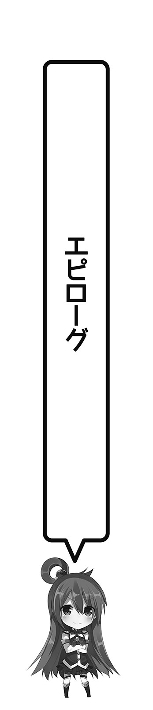
ベルディア討伐の翌日の事。
俺は今後の事を考えながら、一人、ギルドへと歩いていた。
俺に課せられたのは魔王討伐だ。
だがそうなると、ベルディアみたいな強敵を、これからも相手にしなければならなくなる。
魔王討伐を成し遂げ、願いを一つ、叶えて貰うか。
それとも討伐は諦めて、この世界に安住の地を見つけるか。
……答えはもちろん決まっている。
最弱職に就いている俺が、これから先も、あんなに都合良く勝てる訳がない。
これからは、危ない事はせずにのんびり暮らそう。
日本の知識を生かして商売をするのだ。
安全な仕事をしつつ、たまには刺激を求め、簡単なクエストをこなしたりして。
そんな今後の人生設計を考えながら、俺は冒険者ギルドの入り口に手をかけた。
ドアを開けるとむせ返るような臭いが鼻を突く。
人の熱気と酒の臭いが、俺が開けた入り口から外に向かって流れ出してくる。
魔王の幹部を討ち取った記念に、冒険者達が昼間から宴会を開いているらしい。
「あっ！ ちょっとカズマ、遅かったじゃないの！ もう既に、皆出来上がってるわよ！」
ギルドに足を踏み入れた俺に、アクアが上機嫌で笑いかけてきた。
「ねえカズマ、お金受け取って来なさいよ！ もう、ギルド内の冒険者達の殆どは、魔王の幹部討伐の報奨金貰ったわよ。もちろん私も！ でも見ての通り、もう結構飲んじゃったんだけどね！」
何が嬉しいのか、報酬の入った袋を開けて俺に見せて、たはー、と頭をぽりぽりとかきながら、アクアが実に楽しそうにケラケラと笑う。
こ、こいつも出来上がっていやがる。
この世界での飲酒に対する年齢制限はどうなっているのだろう。
見れば、ギルド内の冒険者達も、殆どが歩く事も出来そうにない程に、ぐでんぐでんだ。
酔っ払い達は放っておき、俺はカウンターへと向かう。
そこには既に、ダクネスとめぐみんの姿があった。
「来たかカズマ。ほら、お前も報酬を受け取ってこい」
「待ってましたよカズマ。聞いてください、ダクネスが、私にはお酒は早いと、どケチな事を……」
「いや待て、ケチとは何だ、そうではなく……！」
二人がワイワイやっているので、俺は受付のお姉さんの前に立つ。
……と、見慣れた受付のお姉さんが、俺を見てなぜか微妙な表情を浮かべた。
「ああ、その……。サトウカズマさん、ですね？ お待ちしておりました」
……？
受付のお姉さんの態度に、違和感を覚える。
「あの……。まずはそちらのお二方に報酬です」
お姉さんは、言って小さな袋をダクネスとめぐみんに手渡した。
あれ、俺のは？
疑問に思っている俺に、お姉さんが。
「……あの……。ですね。実は、カズマさんのパーティーには特別報酬が出ています」
……!?
「え、何で俺達だけが？」
俺の疑問の言葉に、だれかの声が答えてくれた。
「おいおいＭＶＰ！ お前らがいなきゃ、デュラハンなんて倒せなかったんだからな！」
その声に、そうだそうだと騒ぎ出す酔っ払い達。
こ、こいつら……。
この世界に来て苦労続きだった事で、不覚にもその優しさにジンときてしまった。
俺が四人を代表して、特別報酬を受け取る事に。
受付のお姉さんが、コホンと一つ咳払いし、そして……。
「えー。サトウカズマさんのパーティーには、魔王軍幹部ベルディアを見事討ち取った功績を称えて……。ここに、金三億エリスを与えます」
「「「「さっ!?」」」」
俺達は、思わず絶句した。
それを聞いた冒険者達も、シンと静まり返る。
そして……。
「おいおい、三億ってなんだ、奢れよカズマー！」
「うひょー！ カズマ様、奢って奢ってー！」
冒険者達の奢れコール。
あっ、そうだ！
「おいダクネス、めぐみん！ お前らに一つ言っておく事がある！ 俺は今後、冒険の回数が減ると思う！ 大金が手に入った以上、のんびりと安全に暮らして行きたいからな！」
「おい待てっ！ 強敵と戦えなくなるのはとても困るぞっ!? というか、魔王退治の話はどうなったのだ!?」
「私も困りますよ、私はカズマに付いて行き、魔王を倒して最強の魔法使いの称号を得るのです！」
騒ぐ二人の言葉を搔き消して、どんどん盛り上がっていくギルド内。
そんな中、申し訳無さそうな表情を浮かべる受付のお姉さんが、俺に一枚の紙を手渡した。
それは、ゼロが沢山並んだ紙。
この世界の小切手？
と、酔っ払ったアクアが上機嫌で俺の隣にやって来て、俺の手元の紙を横から覗き込む。
「ええと、ですね。今回、カズマさん一行の……、その、アクアさんの召喚した大量の水により、街の入り口付近の家々が一部流され、損壊し、洪水被害が出ておりまして……。……まあ、魔王軍幹部を倒した功績もあるし、全額弁償とは言わないから、一部だけでも払ってくれ……と……」
受付のお姉さんはそう告げると、そっと目を逸らしてそそくさと奥に引っ込んで行く。
俺の手元の紙を見て、まずめぐみんが逃げ出した。
次いで、逃げ出そうとするアクアの襟首を素早く摑む。
俺達の雰囲気で請求の額を察した冒険者達が、そっと目を逸らした。
請求を見ていたダクネスが、俺の肩にポンと手を置き……。
「報酬三億。……そして、弁償金額が三億四千万か。……カズマ。明日は、金になる強敵相手のクエストに行こう」
ダクネスはそんな事を言いながら、心底嬉しそうに良い笑顔で笑いやがった。
……どうしようもない仲間と共に、この理不尽な世界で一生暮らす？
…………俺はそっと目を閉じると、深く、魔王討伐を決意した。
このろくでもない世界から、脱出するために！
〈了〉
あとがき
まずは、この本を手に取って頂いた事にお礼を。
ありがとうございます、そして、初めまして。暁なつめと申します。
実は、「小説家になろう」というサイトにて連載をしていたこの作品なのですが、この度スニーカー文庫さんに声をかけて頂き、書籍化の運びとなりました。
ありがてえ、ありがてえ……！
まあ、そんな事情での当作品なので、既にこの先の展開の予想が付いてしまう読者様もいる事でしょう。
しかし作者的には、それでは困ります。常に読者様の予想の斜め上をいきたいのです。
という訳で書籍版は、ストーリー展開やその他諸々が変わっていく事かと思います。
既に色々変更点もありますしね。
なので、どうせこの後こんな展開になるんだろ？ 分かってる分かってると油断していると、ある日、ストーブで温めていた缶コーヒーが爆発し主人公が死亡。次の巻からは新主人公でスタートとか、そんな超展開が待ち受けているかも知れません。……いえ、それは流石にやりませんが。
──では、当作品について少し説明を。
この作品は、優しくてクールでかっこいい主人公が大活躍するお話でも、一人の少年が誰にも負けない努力を重ね、苦難の末に目的を果たすお話でもありません。
目の前で困っている人がいたら気分と状況次第で助け、たまにはハメを外したりもするし、可愛い彼女だって欲しいし、大金を手にすれば働きたくない。
そんなどこにでもいる人間臭くも平凡な主人公が、過酷な異世界で理不尽な現実に抗いながら、クセのあるヒロイン達を引き連れて頑張る物語です。
選ばれし伝説のなんとかでもなければ、秘められたあの力とかも無い、人より運が良い以外は特に取り柄もない主人公。
そんな少年が強敵を前に、逃げたり戦ったりしながら成長していきます。
……いや、あんまり成長はしないかも知れません。
人間そう簡単に変われるものでもありませんしね。
でも、最後にはきっと何かをやってくれるでしょう。
──それでは、改めまして。
スニーカー文庫編集部の皆様、そして、校閲さんに、営業さん、デザイナーさん。
素敵なイラストを描いて頂いた三嶋くろねさんに、そして、右も左も分からない作者が、多大な迷惑と苦労をかけてしまった担当Ｋさん。
この作品を世に出せたのは、皆様が、こんなに手のかかる作者を諦めずにサポートしてくれたお陰です。
本当に、本当に、ありがとうございます。
これ程までに良くして頂いて、何て言ってよいものか分かりませんが、今後、もっともっと良い作品を書けるように精進致します。
面白い物を書く事が、一番の恩返しになると思いますので。
──そして最後に。
「小説家になろう」において作品を読んでくれた方、応援の声をかけて頂いた方々。
何より、この本を手に取って読んで頂いた読者の皆様に。深く感謝を！
暁 なつめ
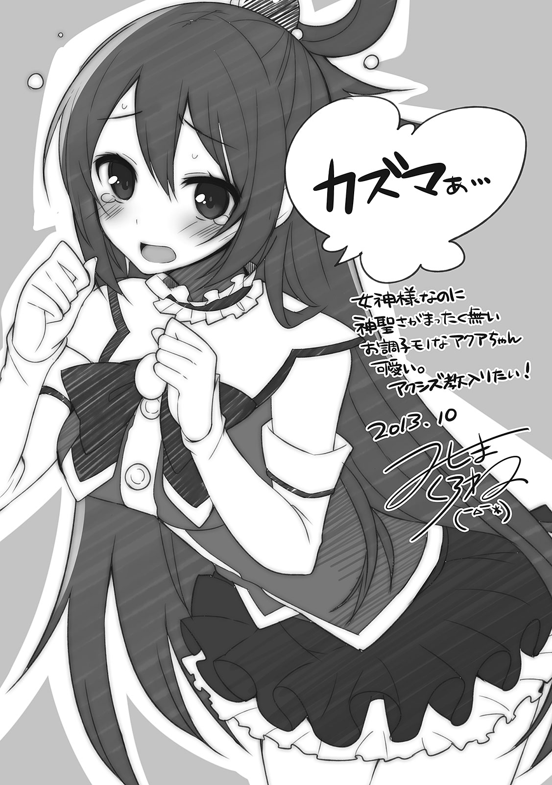
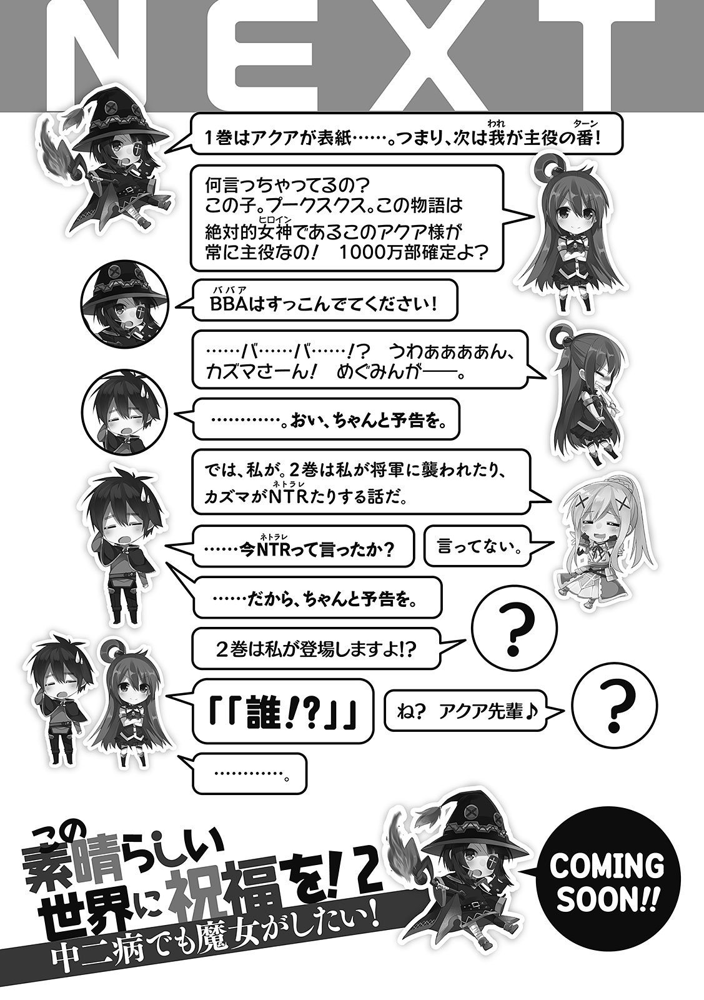
電子書籍１巻購入大感謝特典
『アクア先生』
「先生！ アクア先生じゃないですか！」
俺とアクアが街の通りを歩いていると、身なりの良い紳士がそんな事を言ってきた。
……アクア先生？
「あら、なんとか家の人。奇遇ねえ」
「な、なんとか家……。アクア先生、本日はどちらへ？ 実は、当家の主がアクア先生の次の絵はまだかと、毎日心待ちにしておりまして……」
アクアを先生呼ばわりするその人は、どこかの名家に仕える執事の様だ。
「心待ちにされても困るんですけど。私がダメにしちゃった絵の代わりとして、お詫びって事で描いただけだから、いくらお金を積まれても絵を描く気はないんですけど」
「そこをなんとか！ 先生の絵は、他の貴族の方からも大好評でして……。お礼なら、お金以外にも色々と考えておりますれば……」
「お、おいアクア、どういう事だよ。良く分からないから事情を説明しろよ」
話についていけない俺はアクアに尋ねる。
「こないだ、近所の子供に野球を教えて、それで一緒に遊んでたんだけどね？ その時に私が放った超凄い逆転打が、偉い人の屋敷の窓を破って、ついでに飾ってあった絵まで壊しちゃったのよ」
「そして先生は、弁償するお金がないので、代わりに何か描きますとおっしゃいまして……。ものの十分程で描かれた絵は、それは素晴らしい物でして、今では当家の家宝となり……」
凄いんだか凄くないんだか。
いや、貴族の人を唸らせる絵を簡単に描けちゃうのは凄いんだろうが、絵をダメにした理由が、お前……。
「ともかく、私は画家ではないのでお金はもらえないわ。私は今から、お客の来ないとある魔道具店を冷やかしに行かなきゃならないから、絵の話はお断りします」
「そ、そんな……。アクア先生、私は諦めませんぞ……！」
紳士は、悔しそうにしながら去って行った。
「お前、そんなに絵が上手いならそれで食っていけばいいのに」
「嫌よそんなの。私は女神様なのよ？ アークプリーストなのよ？ この仕事に誇りってものを持っているの。万年働きたがらない引き籠もりには分からないだろうけど！」
アクアを泣かせてやろうと摑み掛かっていると、それを遮る様に人影が現れた。
「師匠！ どうされたのですか、師匠!? その男は何なのですか？ 暴漢ですか!?」
「あっ、弟子の人！ この男は、私に危害を加える邪悪な存在よ！ やっつけて！ その自慢の力でやっつけて！」
「任せてください師匠！」
「ちょっ！ 待っ……！」
──突然現れ、俺に襲い掛かってきたアクアの弟子とやらを、ドレインタッチで魔力を吸って身動きの取れない状態にした。
魔力を吸われ、魔力切れで動けなくなっている男を、荒い息を吐きながら見下ろし。
「こ、こいつは一体何なんだよ！ 師匠ってのは何の事だ!? 適当な事言ってけしかけるなよ！」
「その人は、自称私の弟子の人よ。彫刻家らしいんだけど、暇潰しにウィズの店のドアにアクシズ教の神聖なシンボルマークとか彫ってたら、素晴らしい腕だ！ とか言われてなんか弟子入りされちゃって」
「や、止めてやれよ、ウィズが店に入れなくなるだろ。お前、俺が知らない所であちこちウロチョロしてるんだな。犬か猫じゃないんだし、いい加減、何にでも興味を示して首突っ込むクセは直した方がいいぞ」
「いい加減、あんたの方こそ私への認識を直しなさいよ。この私をどこの誰さんだと思ってるの？ ちょっと私の職業と名前を言ってごらんなさいな」
「うっかり芸人のアクアさんだろ？」
「アークプリーストのアクア様よ！ あんたの顔面に聖なるグーを食らわせるわよ！」
アクアが激昂し、摑み掛かってこようとしたその時。
俺達のそばを駆け抜けようとした女の子が、突然転んだ。
結構な勢いで転んで滑り、膝頭や腕などを思い切り擦り剝いている。
「うっ……わああああああああああっ！」
日頃しょっちゅう泣く、どこかの誰かみたいな泣き声を上げ、女の子がしゃくり上げた。
と、アクアはその子の前に屈み込むと。
「『ヒール』！ ……ほら、もう痛いところはないでしょう？ さあ、立ちなさい。そんなに可愛いのに、泣いてたら台無しよ？」
そんな、本当にアークプリーストみたいな事を……。
「ぐすっ……、うぐっ……」
「もう、しょうがないわね。いい？ 今からとっておきを見せてあげるわ。さあ、このハンカチの中から、なんと……」
未だ泣き止まない女の子に対して、アクアは芸を見せて泣き止ませるつもりの様だ。
……アクアが珍しくアークプリーストっぽい事してるんだ。俺も協力してやろう。
俺は、アクアと女の子に背を向けると、近くで露店を開いていた親父から、そこで売っていた焼き串を……。
「ほーら、天然記念保護モンスター、薄羽紫赤白蝶がこんなに大量に……！」
「お姉ちゃん凄い！ 凄いよ！ 凄……。……ほ、本当に……す、凄い……」
俺が慌てて振り返ると、そこには既に、大勢の人だかりができていた。
「おいねーちゃん、今のもう一回やってくれ！」
「お、お姉ちゃん、私ももう一度見たい……！」
「もう一回！」「もう一回！」
「困るんですけど。人だかりとか作られると、困るんですけど。私、プリーストだから芸を要求されても困るんですけど！」
お前はやっぱり転職するべきだと思う。
〈了〉
カバー・口絵・本文イラスト／三嶋くろね
カバーデザイン／百足屋ユウコ（ムシカゴグラフィクス）
口絵・本文デザイン／百足屋ユウコ＋ナカムラナナフシ（ムシカゴグラフィクス）
この素晴らしい世界に祝福を！
あぁ、駄女神さま
平成25年11月1日 発行
(C) 2013 Natsume Akatsuki, Kurone Mishima
本電子書籍は下記にもとづいて制作しました
角川スニーカー文庫『この素晴らしい世界に祝福を！ あぁ、駄女神さま』
平成25年10月1日初版発行
発行者 山下直久
発行所 株式会社ＫＡＤＯＫＡＷＡ
〒102-8177 東京都千代田区富士見2-13-3
03-3238-8745（営業）
編集 角川書店
〒102-8078 東京都千代田区富士見1-8-19
03-3238-8694（編集部）
http://www.kadokawa.co.jp/